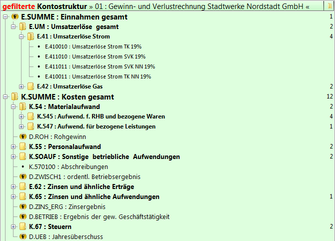
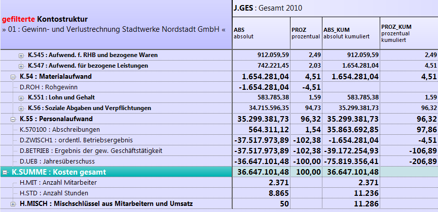
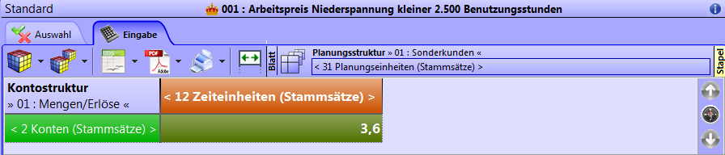

1 Allgemein
1.1 Allgemeine Hinweise
Vor oder während Ihrer ersten Sitzung mit Kosy Enterprise sollten Sie sich mit einigen grundlegenden Konzepten des Programms vertraut machen.
Wurde Kosy Enterprise auf ihrem Rechner noch nicht installiert, finden Sie im Abschnitt Installationshinweise Unterstützung bei der Installation.
Diese Einleitung gibt Ihnen zunächst einen kurzen Überblick über den Startvorgang, die Menüstruktur sowie die allgemeinen Eingabe- und Navigationsmöglichkeiten im Programm. Im Abschnitt Funktionen werden die Inhalte der einzelnen Menüpunkte ausführlich erläutert.
Fehlen bei Ihnen manche hier erläuterte Funktionen, so wird dies am ausgeschalteten Expertenmodus liegen (siehe Abschnitt Expertenmodus ein-/ausschalten). Vor allem zu Beginn ist diese Einstellung sehr sinnvoll. Falls Sie jedoch den Expertenmodus gerne einschalten möchten, so finden Sie diese Funktion unter Extras > Expertenmodus einschalten. Der Expertenmodus im Hauptmenü bezieht sich auf die Einstellungen des Hauptmenüs. Ebenso können Sie auf die gleiche Weise hier auch wieder den Expertenmodus ausschalten. Zusätzlich können Sie in jedem Menüpunkt durch einen Rechtsklick auf die Titelleiste den menüpunktspezifischen Expertenmodus ein- bzw. ausschalten.
1.2 Starten des Programms
Starten Sie das Programm im Windows-Startmenü unter Alle Programme > Kosy Enterprise > Kosy Enterprise oder durch einen Doppelklick auf die entsprechende Verknüpfung auf Ihrem Desktop.

Kosy Enterprise Desktop-Verknüpfung
1.3 Anmeldung
Im Anschluss an den Startvorgang werden Sie aufgefordert, sich zu authentifizieren. Dies geschieht über die Eingabe Ihres Benutzerkürzels und eines Passwortes. Falls Sie sich zum ersten Mal in Kosy Enterprise anmelden, lautet das Passwort leer, sofern nicht anders eingestellt. Sie bestätigen Ihre Eingabe durch die Enter -Taste oder die Schaltfläche  .
.
.png "Dialog Benutzer-Anmeldung")
Dialog: Benutzer-Anmeldung
Durch Setzen des Hakens Administrator gelangen Sie in das Administrator-Anmeldefenster. Die Anmeldung als Administrator erfolgt ausschließlich über die Passworteingabe. Beim ersten Programmstart lautet das Passwort leer.
.png "Dialog Administrator-Anmeldung")
Dialog: Administrator-Anmeldung
Durch Setzen des Hakens ActiveDirectory verwenden gelangen Sie in das ActiveDirectory-Anmeldefenster. Die Anmeldung hierbei erfolgt über Ihre Windows-Anmeldung (Netzwerk-kennung).
Hinweis
Die Anmeldung über ActiveDirectory ist nur verwendbar, wenn Computer und Benutzer eine Zugehörigkeit zu einer Domäne besitzen.
.png "Dialog ActiveDirectory-Anmeldung")
Dialog: ActiveDirectory-Anmeldung
Die Vergabe von Benutzerkürzeln steuern Sie unter Verwaltung > Benutzer > Benutzerübersicht in der Spalte Kürzel. Eine Passwortänderung für Mitarbeiter kann durch den Administrator oder Mitarbeiter mit mindestens Schreibzugriff auf diese Funktion an gleicher Stelle über das Schlüsselsymbol erreicht werden. Über die Zugriffsrechte erfahren Sie mehr in Abschnitt Berechtigungskonzept. Durch einen Rechtsklick auf den Benutzernamen in der Startmaske am unteren, linken Bildschirmrand kann weiterhin der jeweils aktuell angemeldete Benutzer sein eigenes Passwort anpassen (siehe Abschnitt Grundeinstellungen). Das Administrator-Passwort kann nur auf diesem Wege unter der Administrator-Anmeldung geändert werden. Mehr zur Verwaltung von Passwörtern erfahren Sie in den Abschnitten Grundeinstellungen, Benutzerübersicht sowie Sicherheit.
1.4 Navigation im Programm
Bei Ihrer Arbeit mit Kosy Enterprise werden Sie feststellen, dass bestimmte Maus- und Tastaturaktionen, Maskenansichten oder Eingabefelder an vielen Stellen im Programm in ähnlicher Form auftreten. In diesem Abschnitt werden Ihnen einige dieser Standards vorgestellt.
Falls Sie in einem der Hauptkapitel des Handbuchs auf Begrifflichkeiten stoßen sollten, die Ihnen unbekannt vorkommen, oder wenn Sie sich bezüglich der Bedeutung einer bestimmten Schaltfläche unsicher sind, so halten Sie zunächst in diesem Abschnitt nach einer entsprechenden Erläuterung Ausschau.
Mausaktionen
In Kosy Enterprise werden insgesamt neun verschiedene Mausaktionen unterstützt. Sofern Sie eine Maus mit Linkshänderbedienung verwenden, beachten Sie bitte, dass Sie bei den Bezeichnungen und Beschreibungen bestimmter Mausaktionen entsprechend umdenken müssen:
| Mausaktion | |
|---|---|
| Linksklick | Drücken und sofortiges Lösen der linken Maustaste (ohne Bewegen des Mauszeigers) |
| Rechtsklick | Drücken und sofortiges Lösen der rechten Maustaste (ohne Bewegen des Mauszeigers) |
| Doppelklick | zweimaliges Drücken einer Maustaste in schneller Folge (im Regelfall ist die linke Maustaste gemeint) |
| Mehrfachklick | mehrmaliges Drücken einer Maustaste in schnellerFolge (im Regelfall ist die linke Maustaste gemeint) |
| Zeigen | Stellen des Mauszeigers an eine bestimmte Stelle auf dem Bildschirm ohne Drücken einer Maustaste |
| Überfahren | Führen des Mauszeigers über einen bestimmten Bereich auf dem Bildschirm ohne Drücken einer Maustaste |
| Ziehen | Drücken der linken Maustaste und Bewegen des Mauszeigers bei gedrückter Maustaste |
| Linksklick & Halten | längeres Drücken der linken Maustaste (ohne Bewegen des Mauszeigers) |
| Scrollen | Drehen des Scrollrades (sofern vorhanden) zum schnellen Auf- und Abbewegen des Inhalts einer Maske |
Mausaktionen
Nicht alle dieser Mausaktionen werden für die Navigation in Kosy Enterprise zwingend benötigt. Der Mehrfachklick etwa kommt nur in den wenigen textverarbeitenden Bestandteilen des Programms zur Anwendung - zum Beispiel in Form eines dreifachen Linksklicks zur Markierung eines gesamten Textabsatzes.
Das Überfahren eines Bildschirmbereichs ist eine Aktion, die meist unbewusst geschieht. Sie bewirkt eine optische Hervorhebung der betroffenen Schaltfläche oder Registerkarte, löst aber ansonsten keine eigenständige Funktion aus.
Tastaturbefehle
Viele Aktionen in Kosy Enterprise können auch ohne Verwendung der Maus, also allein mithilfe der Tastatur durchgeführt werden. In einigen Situationen empfiehlt es sich sogar, auf die Benutzung der Maus ganz zu verzichten — zum Beispiel, wenn Sie eine größere Datenmenge via Tastatur eingeben möchten und den ständigen Wechsel zwischen Tastatur- und Mausbedienung dabei als störend empfinden würden.
Für solche Fälle ist es sinnvoll, sich die gängigsten Tastaturbefehle (auch: Hotkeys, Tastenkombinationen oder Shortcut) in Kosy Enterprise anzueignen. Mit dem Begriff Tastaturbefehl ist hier stets das Drücken einer oder mehrerer Tasten auf der Tastatur gemeint.
Einige Tastenkürzel (wie beispielsweise F1 zum Aufrufen der Hilfefunktion oder Strg+C und Strg+V zum Kopieren und Einfügen) dürften Ihnen bereits aus anderen auf Windows basierenden Programmen bekannt sein. Andere Tastenkombinationen hingegen sind programmspezifisch.
Tastaturbefehle, welche die Funktion einer bestimmten Schaltfläche übernehmen, können häufig durch das Zeigen auf selbige ermittelt werden. Sie werden dann in einem Hinweisfenster gemeinsam mit der jeweiligen Bedeutung der Schaltfläche angezeigt.
 Hinweisfenster: Tastaturbefehle
Hinweisfenster: Tastaturbefehle
Ersetzt ein Tastaturbefehl eine Funktion, die normalerweise über ein Kontextmenü aufgerufen wird, so wird die entsprechende Tastenkombination meist direkt in dem Kontextmenü mit angezeigt. Weitere Tastaturbefehle, die jeweils spezifisch innerhalb eines bestimmten Menüpunktes oder Untermenüpunktes gelten, werden in den entsprechenden Hauptkapiteln des Handbuchs erläutert.
1.5 Meldungen
Wenn Sie bei der Eingabe in einem Feld einen Fehler machen, so wird eine Warnmeldung ausgegeben und Sie können Ihre Eingabe korrigieren.
Kosy Enterprise gibt Ihnen häufig eine Bestätigungsmeldung, wenn ein Vorgang bearbeitet wurde. Des Weiteren werden Hinweise gegeben, die durch Klicken auf den OK-Button bestätigt werden müssen.
1.6 Programm beenden
Kosy Enterprise bietet Ihnen folgende Wege an, um das Programm wieder zu verlassen:
- Linksklick auf die Schaltfläche
 in der Menüleiste,
in der Menüleiste, - Eingabe der Tastenkombination Alt+F4 an jeder beliebigen Stelle im Programm,
- Doppelklick auf das Programmsymbol Kosy in der Titelleiste,
- Rechtsklick auf die Titelleiste und im Kontextmenü die Option Schließen wählen,
- Linksklick auf die Schaltfläche Schließen
 in der Titelleiste.
in der Titelleiste.
1.7 Installationshinweise
Sollte Kosy Enterprise auf Ihrem Rechner noch nicht installiert sein, kann die Installation in wenigen Schritten durchgeführt werden.
Das aktuelle Setup für Kosy Enterprise finden Sie in unserem Downloadbereich unter https://www.hksinformatik.de/downloads/kosy-enterprise/updates (Falls Sie noch keinen Benutzerzugang haben, müssen Sie sich ggf. noch auf unserer Homepage registrieren.)
Die heruntergeladene Datei befindet sich, wenn Sie keine weiteren Einstellungen vorgenommen haben, nun Ihrem Download-Ordner. Starten Sie die Installation durch einen Doppelklick auf die Installationsdatei im Benutzerkonto „Administrator“. Ein Konto „mit Administratorrechten“ reicht häufig nicht.
Das Installationsmenü öffnet sich und Sie werden Schritt für Schritt durch die Installation geleitet.
Weitere Informationen finden Sie im Abschnitt „Serveradministration und -migration“.
2 Anwendung
2.1 Programmoberfläche und Fachbegriffe
2.1.1 Startbildschirm
Nachdem Sie sich an der Datenbank angemeldet haben, erscheint die unten dargestellte Bildschirmansicht, die im Folgenden als Startbildschirm bezeichnet wird. Der Startbildschirm ist der Ausgangspunkt für sämtliche Aktionen in Kosy Enterprise.

Startbildschirm in Kosy Enterprise
Innerhalb des Startbildschirms werden sechs aktive Bildschirmbereiche unterschieden, die in den folgenden Abschnitten kurz erläutert werden. Es handelt sich bei diesen Bereichen um die Menüleiste, die Grundeinstellungen, die Mandantenauswahl, die Dateiauswahl, das Hintergrundbild sowie die Schnellansichten des Mandanten.
Menüleiste
Alle ausführbaren Funktionen sind im Startbildschirm aufrufbar. Zur besseren Übersicht wurden die Funktionen ihrer Bedeutung nach in Gruppen eingeteilt. Durch Anklicken eines Menüpunktes in der Menüleiste erscheint ein Untermenü, aus dem dann die gewünschte Funktion ausgewählt werden kann. Nach Anwahl einer Funktion erscheint der Funktionstitel über der Menüstruktur. Ebenso können Sie über die Pfeile schnell zwischen den letzten Funktionen wechseln. Die Statusinformation am rechten, unteren Rand gibt Ihnen an, wann Sie das letzte Mal eine Speicherung der Daten vorgenommen haben.
Mit der Schaltfläche  können Sie Kosy Enterprise beenden.
können Sie Kosy Enterprise beenden.

Menüleiste
Innerhalb der einzelnen Funktionen besteht die Möglichkeit, durch Drücken der rechten Maustaste ein sogenanntes Kontextmenü aufzurufen. Bei Texteingaben kann dieses Kontextmenü zum Editieren des Textes zu Hilfe genommen werden. Möchten Sie gerne im Vollbild-Modus arbeiten, so betätigen Sie die Taste F11 . Verwenden Sie die Taste abermals, so wechselt das Programm wieder in den Fenster-Modus.
Grundeinstellungen
Am linken, unteren Bildschirmrand finden Sie den angemeldeten Benutzer. Durch einen Linksklick auf den Benutzer erscheinen weiterführende Informationen. Verwenden Sie den Rechtsklick, so erscheinen die Grundeinstellungen.

Benutzerinformationen und Grundeinstellungen
Hier ist es möglich, das Passwort des jeweiligen Benutzers zu ändern. Das Administratorpasswort ist ausschließlich hier änderbar. Weiterhin können Sie hier die automatischen Aktualisierungen Ihrer Rechte an- bzw. ausschalten.
Mandantenauswahl
Die Mandantenauswahl ermöglicht Ihnen ein schnelles Wechseln zwischen den einzelnen Mandanten. Sie finden die Mandantenauswahl im linken Bereich der Fußzeile. Drücken Sie mit der rechten Maustaste auf den Mandanten, um die Mandantenauswahl zu öffnen. Für eine übersichtliche Darstellung einer Vielzahl von Mandanten besteht die Möglichkeit, diese benutzerdefiniert nach Titel, Notiz und Farbe zu gruppieren. Mit einem Linksklick auf den Mandanten erhalten Sie weiterführende Informationen zum ausgewählten Mandanten.

Mandanteninformationen und Mandantenauswahl
Dateiauswahl
Im rechten Bereich der Fußzeile finden Sie die derzeit gewählte Datei. Durch einen Rechtsklick erscheint analog zu den Grundeinstellungen und insbesondere der Mandantenauswahl die Dateiauswahl.
.png "Dateiauswahl (1)")
Dateiauswahl
Mit einem Linksklick auf die Datei erhalten Sie weiterführende Informationen zur ausgewählten Datei. In Verbindung mit gedrückter Shift -Taste erhalten Sie darüber hinaus detaillierte Informationen zu den letzten inhaltlichen Änderungen, mit gedrückter Strg -Taste zu den zuletzt geänderten Buchungssätzen und mit gedrückter Alt -Taste zum Datenstand der zuletzt berechneten Ausgabewerte.
.png "Dateiauswahl (2)")
Dateiinformationen
Hintergrundbild
Ein Rechtsklick auf das Hintergrundbild öffnet ein Kontextmenü. Hierüber können Sie direkt eine Mandanten-, Datei- oder Modulauswahl (siehe Abschnitt Module) treffen. Ein Doppelklick auf das Hintergrundbild öffnet den Supportbildschirm. Dieser enthält Informationen über die aktuell von Ihnen genutzte Programmversion sowie die Support-Rufnummer der HKS Informatik GmbH. Durch einen Linksklick auf eine beliebige Stelle innerhalb des Programmfensters können Sie den Supportbildschirm wieder ausblenden.

Supportbildschirm
Schnellansicht des Mandanten
Am linken Bildschirmrand befindet sich die Leiste für die Schnellansicht des Mandanten. Mit einem Doppelklick klappt diese auf. Dabei sehen Sie alle Listen und Grafiken, bei denen der Haken für die Schnellansicht (siehe Abschnitt Listen) gesetzt ist. Durch den Aufruf einer Schnellansicht sehen Sie sofort die Listenansicht der Datei.
Expertenmodus
Über den Menüpunkt Expertenmodus ein- bzw. ausschalten haben Sie die Wahl, die Programmvielfalt zu schmälern oder zu erweitern. Die Beschreibungen des vorliegenden Handbuchs erfolgen mit eingeschaltetem Expertenmodus, um alle Funktionen ausführlich zu erläutern. Vor allem am Anfang der Benutzung des Programmes erscheint es sinnvoll, den Expertenmodus zunächst zu deaktivieren. Auch mit ausgeschaltetem Expertenmodus ist eine umfangreiche Arbeit mit dem Programm möglich.
Bitte beachten Sie, dass Sie je Menüauswahl stets den Expertenmodus ein- sowie ausschalten können. Der Expertenmodus im Hauptmenü bezieht sich auf die Einstellungen des Hauptmenüs.
2.1.2 Programmbereiche
Module
Über die Modulauswahl wechseln Sie mit einem Klick z. B. von Kosy-KK nach Kosy-DP und umgekehrt. Alternativ zum Rechtsklick auf das Hintergrundbild im Startbildschirm (siehe Abschnitt Hintergrundbild) finden Sie die Modulauswahl auch unter Verwaltung > Module.
Mandanten
In Kosy Enterprise können Daten aus verschiedenen Bereichen (z. B. Verbrauchsabrechnung und Finanzbuchhaltung) in einer gemeinsamen Datenbank abgebildet werden. Eine Trennung kann durch die Einrichtung unterschiedlicher Mandanten für den jeweiligen Bereich erreicht werden. Dies bedeutet, dass Sie durch das Starten einer Kosy Enterprise-Instanz Zugriff auf Daten aller Unternehmensbereiche haben.
Die Funktionsweise ist in jedem Mandanten vollkommen identisch.
Eine Begrenzung an definierbaren Mandanten gibt es nicht.
Mandantenauswahl
Die Mandantenauswahl ermöglicht Ihnen ein schnelles Wechseln zwischen den einzelnen Mandanten. Alternativ zum Rechtsklick auf den Mandanten im Startbildschirm finden Sie die Mandantenauswahl auch unter [1.2.2] Verwaltung > Mandanten > Mandantenauswahl.
Datei
Jede Auswertung, die Sie mit Kosy Enterprise erstellen, hat die vorherige Definition einer geeigneten Datei zur Voraussetzung.
Eine Datei besteht aus genau vier Strukturen (siehe Struktur). Hierbei gilt es weiterhin zu beachten, dass nur jeweils eine Struktur je Dimension (siehe Dimensionen) verwendet werden kann.
Innerhalb eines Mandanten muss jede Datei einen eindeutigen Bezeichner (siehe Bezeichner) erhalten.
Die Funktion zur Konfiguration von Dateien erreichen Sie aus dem Hauptmenü von Kosy Enterprise über [3.1] Dateien > Übersicht der Dateien
Hinweis
Umgangssprachlich wird eine Datei auch häufig als „Würfel“ bezeichnet.
2.1.3 Eigenschaften
Bezeichner
Der Bezeichner dient der eindeutigen Identifikation der Elemente in Kosy. Aufgrund dessen darf er nicht mehrfach in einem Kosy Enterprise-Mandanten vorkommen. Wird dennoch versucht, einen Bezeichner mehrfach zu verwenden, so erfolgt eine Warnmeldung.

Fehlermeldung „Mehrfachnennung eines Bezeichners“
Ein Bezeichner besteht aus einem Typ (z.B. „BIL“ für Bilanz oder „KST“ für Kostenstelle) gefolgt von einem Punkt und der sog. Kurzbezeichnung. Typ und Punkt zusammen werden als „Präfix“ bezeichnet.
Titel
In dem Datenfeld Titel ist es möglich, eine Bezeichnung für die Elemente in Kosy zu hinterlegen. Dies ist keine zwingende Angabe, dennoch sollte sie getätigt werden, damit Sie fortlaufend im Programm eine sprechende Betitelung Ihres Elements in Kosy erhalten.
Notiz
Die Notiz dient der Beschreibung der Elemente in Kosy. Hier können wichtige Informationen zur näheren Erläuterung hinterlegt werden. Dafür stehen Ihnen 32.000 Zeichen zur Verfügung.
Farbe
Durch einen Klick in das Datenfeld Farbe öffnet sich ein Auswahlfenster mit wählbaren Farben. Somit ist es Ihnen möglich, einem Element in Kosy eine Farbe für das gesamte Programm zu hinterlegen. Die gewählte Farbe erscheint dann als Hintergrund für das Element in Kosy (z. B. auf dem Startbildschirm in der Mandantenanzeige).
2.1.4 Maskenansichten
Maskenansichten und Standardmaske
In jedem Menüpunkt oder Untermenüpunkt von Kosy Enterprise finden Sie eine bestimmte Bildschirmansicht vor. Eine solche Ansicht wird im Allgemeinen als Maskenansicht (oder schlicht: Maske) bezeichnet.
")
Beispiel für eine Maskenansicht
In fast allen Masken, in denen Sie Daten betrachten, eingeben, verändern oder löschen können, werden Sie auf eine Bearbeitungsleiste treffen. Hier finden Sie diverse Schaltflächen zur Bearbeitung der einzelnen Datensätze in den Datenfeldern. Des Weiteren wird die Anzahl der Datensätze angegeben. Unterhalb der Bearbeitungsleiste befindet sich die sogenannte „Tabellenansicht“.
")
Bearbeitungsleiste in der Standardmaske
Einige der Schaltflächen der Bearbeitungsleiste sind in jeder Standardmaske vorhanden (Standardschaltflächen). Andere Schaltflächen hingegen finden nur in bestimmten Menüpunkten Verwendung. Die Erläuterung dieser finden Sie in der Beschreibung der entsprechenden Masken. In der obigen Abbildung sehen Sie eine Bearbeitungsleiste, die zum Großteil aus Standardschaltflächen besteht.
Standardschaltflächen
Die folgenden Standardschaltflächen zur Bearbeitung der einzelnen Datensätze sind in vielen Standardmasken zu finden:
| Symbol | Tastenkombination | Bezeichnung |
|---|---|---|
| Einfg / Strg+Einfg | Datensatz hinzufügen/Datensatz mit Assistenten einfügen | |
| Entf | Datensatz entfernen | |
| F2 / Strg+F2 | Datensatz bearbeiten/Datensatz mit Assistenten bearbeiten | |
| Enter | Datensatz übernehmen | |
| Esc | Datensatz verwerfen | |
| Datensatz kopieren | ||
| Datensatz bereinigen | ||
| Datensätze ohne Zugriffsrechte ein- bzw. ausblenden | ||
| Strg+A / Strg+D | Alle Datensätze aus- bzw. abwählen | |
| Datensatz importieren | ||
| Strg+F | Datensatz suchen | |
| F5 | Übersicht aktualisieren |
Standardschaltflächen
Hinweis
Bitte beachten Sie, dass über die Schaltfläche  Datensätze übernommen, aber noch nicht gespeichert werden. Die Datensätze werden erst gespeichert, wenn Sie in eine andere Maske wechseln oder die Maske über
Datensätze übernommen, aber noch nicht gespeichert werden. Die Datensätze werden erst gespeichert, wenn Sie in eine andere Maske wechseln oder die Maske über  verlassen. Um die Datensätze zu verwerfen, verlassen Sie bitte die Maske über . Beachten Sie dazu auch Abschnitt Schließen von Masken.
verlassen. Um die Datensätze zu verwerfen, verlassen Sie bitte die Maske über . Beachten Sie dazu auch Abschnitt Schließen von Masken.
Nicht immer sind alle diese Schaltflächen anwählbar. Die Schaltfläche
Datensatz übernehmen  steht nur dann zur Auswahl, wenn Sie einen neuen Datensatz angelegt oder einen bereits bestehenden Datensatz bearbeitet haben.
steht nur dann zur Auswahl, wenn Sie einen neuen Datensatz angelegt oder einen bereits bestehenden Datensatz bearbeitet haben.
Sie können über die Schaltfläche Zwischenablage ihre ausgewählte Datensätze in die Zwischenablage kopieren.
Zudem können Sie über die Schaltfläche
Pivot-Tabellen exportieren (sofern Sie den „Pivot-Connector“ erworben haben) oder über
Drucken  den Inhalt der aktuell aktiven Standardmaske drucken. Hierfür wird zunächst eine Druckvorschau erzeugt,
die Sie dann speichern oder drucken können. Möchten Sie die Vorschau drucken, so öffnet sich jeweils ein Druckdialog, über den Sie den Drucker auswählen und das Seitenformat festlegen können. Bezüglich der
erweiterten Drucker-Einstellungen, die Sie innerhalb dieses Dialogs treffen können, ziehen Sie bitte die Bedienungsanleitung Ihres Druckers zu Rate.
den Inhalt der aktuell aktiven Standardmaske drucken. Hierfür wird zunächst eine Druckvorschau erzeugt,
die Sie dann speichern oder drucken können. Möchten Sie die Vorschau drucken, so öffnet sich jeweils ein Druckdialog, über den Sie den Drucker auswählen und das Seitenformat festlegen können. Bezüglich der
erweiterten Drucker-Einstellungen, die Sie innerhalb dieses Dialogs treffen können, ziehen Sie bitte die Bedienungsanleitung Ihres Druckers zu Rate.
Daten importieren/exportieren
In vielen Masken in Kosy Enterprise ist es möglich, Daten über das entsprechende Diskettensymbol zu importieren
 bzw. zu exportieren
. Bei einem Export werden die Daten in eine Textdatei geschrieben, die ein fest vorgeschriebenes Format (ktf =
„Kosy TransferFile“) besitzt. Somit können diese Daten problemlos an anderer Stelle wieder importiert werden.
bzw. zu exportieren
. Bei einem Export werden die Daten in eine Textdatei geschrieben, die ein fest vorgeschriebenes Format (ktf =
„Kosy TransferFile“) besitzt. Somit können diese Daten problemlos an anderer Stelle wieder importiert werden.
Zur Unterstützung beim Import und Export öffnet sich nach einem
Klick auf das entsprechende Diskettensymbol, ein sogenannter
Assistent. Dieser fragt die erforderlichen Informationen ab. Nach erfolgreicher Eingabe aller erforderlichen Informationen bestätigen Sie mit  . Der Dateiimport bzw. -export startet.
. Der Dateiimport bzw. -export startet.
Anzahl der Datensätze
In jeder Bearbeitungsleiste einer Standardmaske wird die Anzahl der in der Maske enthaltenen Datensätze angezeigt. Der entsprechende Eintrag befindet sich mittig zwischen den Schaltflächen auf der linken und rechten Seite der Leiste.
Der Zähler wird ständig aktualisiert, also auch im Moment des Löschens oder Hinzufügens eines Datensatzes. Beachten Sie dabei, dass ein neu hinzugefügter Datensatz erst dann in der Zählung berücksichtigt wird, wenn er über die Schaltfläche
Datensatz übernehmen  bestätigt wurde.
bestätigt wurde.
Bearbeitungsleiste außerhalb der Standardmaske
An dieser Stelle sei darauf hingewiesen, dass bei den meisten anderen Maskenansichten ebenfalls eine Art Bearbeitungsleiste vorhanden ist, die dort ein etwas anderes Erscheinungsbild haben kann als die Bearbeitungsleiste innerhalb der Standardmaske. Nichtsdestoweniger ist zur Vereinheitlichung der Begrifflichkeiten im Rahmen dieses Handbuchs auch dann von einer Bearbeitungsleiste die Rede, wenn diese außerhalb der Standardmaske auftritt.
Tabellenansicht
In der Tabellenansicht sind alle Datensätze der aktuellen Maske aufgelistet. Sie besteht aus einer Titelzeile und den Datenzeilen.
Titelzeile
Die Titelzeile enthält die Bezeichnungen der Spalten einer Standardmaske. Durch einen Rechtsklick auf die Titelzeile öffnet sich ein Kontextmenü, über welches Sie Spalten ein- oder ausblenden können. Ebenso finden Sie hier die Möglichkeit, den Expertenmodus für diese Übersicht ein- bzw. auszuschalten sowie in die Detailansicht zu wechseln.
Titelzeile der Tabellenansicht
Die Titelzeile bietet Ihnen verschiedene Möglichkeiten, um die Anzeige der Datensätze zu beeinflussen. So können Sie hier eine Sortierung der Datensätze vornehmen, die Spaltenreihenfolge ändern sowie die Breite der einzelnen Spalten anpassen.
Ad-hoc-Filter
In den Masken ist es möglich, nach Inhalten der einzelnen Spalten zu filtern. Durch einen Linksklick auf den Trichter
 in der linken, oberen Ecke der Titelzeile öffnet sich eine zusätzliche Zeile, in der Sie die Begriffe eingeben können, nach denen gefiltert werden soll.
in der linken, oberen Ecke der Titelzeile öffnet sich eine zusätzliche Zeile, in der Sie die Begriffe eingeben können, nach denen gefiltert werden soll.
Zulässige Ad-hoc-Filter sind hierbei:
-
Vergleichsoperatoren (z.B. = oder <) vor dem Ausdruck
-
Anführungszeichen (") am Anfang und am Ende: Suche nach dem ganzen Wort
-
.* am Ende: es wird nach beginnt mit gesucht
-
.* am Anfang: es wird nach endet mit gesucht
Sonst wird geprüft, ob der Ausdruck im Wert enthalten ist.
Datensätze sortieren
Die Datensätze können nach den Inhalten jeder beliebigen Spalte sortiert werden. Wenn Sie die Datensätze nach einer bestimmten Spalte sortieren möchten, markieren Sie bitte die entsprechende Spalte durch einen Linksklick auf die Spaltenüberschrift in der Titelzeile. Die Sortierung wird umgehend ausgeführt. Beim Anlegen neuer Datensätze werden diese im Normalfall gemäß dem jeweils angewählten Sortierungskriterium einsortiert.
Hinweis
Ist das Sortierkriterium nicht eindeutig, so wird in den meisten Fällen der Bezeichner als zweites Sortierkriterium gewählt.
Spaltenreihenfolge ändern
In jeder Maske kann die Reihenfolge der Spalten durch den Benutzer frei gewählt werden. Wenn Sie die Position einer Spalte ändern möchten, führen Sie bitte den Mauszeiger auf die gewünschte Spalte und ziehen Sie diese bei gedrückter Maustaste an die gewünschte Stelle. Nach dem Lösen der Maustaste wird die Spalte an die entsprechende Stelle gesetzt. Durch das Ändern der Reihenfolge wird die Anordnung innerhalb der Detailansicht angepasst. Um Synchronisation zu gewährleisten, gilt dies auch, falls Sie in der Detailansicht Felder umstrukturieren. Die Spalten werden dadurch an die Stelle gesetzt, der sie in der Detailansicht zugeordnet sind.
Spaltenbreite anpassen
Führen Sie den Mauszeiger über einen der Trennstriche zwischen zwei Spalten und ziehen Sie die Spaltenbegrenzung bei gedrückter Maustaste nach links oder rechts, um die Breite der jeweils links von dem Trennstrich gelegenen Spalte zu ändern. Durch gedrückte Strg -Taste und gleichzeitigen Linksklick mit der Maus auf den Trennstrich wird automatisch die optimale Spaltenbreite bezogen auf den Inhalt der Spalten eingestellt. Benutzen Sie die Shift -Taste, um eine Anpassung an den Spaltentiteln vorzunehmen.
Notizfelder
In jeder Maske finden Sie am unteren Rand eine Leiste mit der Bezeichnung Notiz und Bild. Durch einen Doppelklick blenden Sie das Feld ein. Hier können Sie zu jedem Datensatz eine Notiz sowie ein Bild hinterlegen. Zum Einfügen eines Bildes einfach einen Doppelklick auf das hinterlegte Bild tätigen. Alternativ können Sie auch mit einem Rechtsklick ein Kontextmenü öffnen. Darüber ist es Ihnen möglich, eine Grafik zu importieren, eine bereits bestehende Grafik zu exportieren oder zu entfernen. Falls noch kein Bild hinterlegt ist, gibt es am Ende der Leiste einen kleinen Knopf mit einem Plus. Darüber können Sie ein Bild einfügen.
Detailansicht
Durch einen Rechtsklick auf die Titelzeile öffnet sich ein Kontextmenü, über welches Sie die Detailansicht aktivieren bzw. deaktivieren können. In der Detailansicht können Sie einen Datensatz bearbeiten, ebenso wie in der normalen Tabellenansicht. Es handelt sich hierbei lediglich um eine andere Darstellung, die der Übersichtlichkeit bei vielen Datensätzen dient. Sie können, wie schon in den Spalten beschrieben, die Reihenfolge der Felder anpassen. Dazu führen Sie den Zeiger auf das gewünschte Feld und ziehen dieses bei gedrückter Maustaste auf das gewünschte Feld. Nach dem Lösen der Maustaste wird das Feld an die entsprechende Stelle gesetzt.
Mit der Tastenkombination Alt +Doppelklick auf einen Datensatz in der Tabellenansicht gelangen Sie in das jeweilige Untermenü des Datensatzes — sofern vorhanden. Alternativ klicken Sie auf die Bezeichnung des Untermenüs am linken Bildschirmrand. Diese Tastenkombination können Sie in jeder Übersichtsmaske von Kosy Enterprise verwenden, um in die nächste Registerkarte zu gelangen.
Schließen von Masken
In Kosy Enterprise haben Sie zwei Möglichkeiten, eine Programmfunktion zu verlassen und eine weitere, um die Änderungen zu speichern.
-
Änderungen verwerfen
-
 Änderungen übernehmen
Änderungen übernehmen -
 Änderungen übernehmen und fortfahren
Änderungen übernehmen und fortfahren
Wenn Sie die Änderungen übernehmen oder Änderungen übernehmen und fortfahren, werden alle Modifikationen, die Sie vorgenommen haben, endgültig in die Datenbank geschrieben und für alle anderen Anwender sichtbar. Der Unterschied zwischen Änderung übernehmen und Änderung übernehmen und fortfahren ist der, dass bei Änderung übernehmen die aktuelle Maske geschlossen wird und Sie zurück auf den Hauptbildschirm von Kosy kommen. Bei Änderung übernehmen und fortfahren bleiben Sie in der aktuellen Maske. Wählen Sie Änderungen verwerfen, so werden alle Änderungen, die seit dem letzten Speichern, beispielsweise durch Änderungen übernehmen vorgenommen wurden, rückgängig gemacht.

Verwerfen von Änderungen
Hinweis
Führen Sie einen Maskenwechsel durch (z. B. durch Wahl eines neuen Menüpunktes ohne vorher die Maske zu beenden), so erfolgt eine automatische Speicherung. Das Verwerfen der Änderungen bis zu diesem Zeitpunkt ist dann nicht mehr möglich.
Berechtigungskonzept
In Kosy Enterprise ist ein Berechtigungskonzept hinterlegt. Das bedeutet, dass Rechte auf Programmfunktionen vergeben werden können, ssodassTätigkeiten wie die Bearbeitung von Strukturen, das Aktualisieren von Werten und die Erstellung von Berichten nur für die jeweils zuständigen Mitarbeiter freigeschaltet werden können.
Die möglichen Berechtigungsarten sind:
- kein Zugriff
- Lesezugriff
- Änderungszugriff
- Schreibzugriff
- Vollzugriff
Die Rechtevergabe kann nicht nur auf den Funktionen von Kosy Enterprise erfolgen, sondern auch auf inhaltlicher und struktureller Ebene. So können Sie beispielsweise Kostenstellen oder Konten nur für ausgewählte Mitarbeiter bereitstellen.
Der Administrator besitzt im gesamten Programm Vollzugriff.
Bedeutung der einzelnen Berechtigungsarten
kein Zugriff
Besitzt ein Benutzer keine Zugriffsrechte, so ist es ihm nicht möglich, sich in Kosy Enterprise anzumelden. Jeglicher Zugriff wird ihm somit verwehrt. Wird eine Anmeldung getätigt, so erscheint eine Fehlermeldung.
.png "Berechtigungsarten (1)")
Hinweis „keine Zugriffsrechte“
Bezieht sich die Berechtigungsart kein Zugriff auf Funktionen oder Elemente, so werden dem Benutzer die jeweiligen Funktionen oder Elemente ausgegraut bzw. als unkenntlich dargestellt.
Lesezugriff
Ein Lesezugriff ermöglicht dem Benutzer, sich Funktionen, Elemente etc. anzuschauen. Er besitzt jedoch nicht die Möglichkeit, etwas zu verändern oder Neues anzulegen. Grafisch erkennen Sie diese Einstellung entweder an dem Symbol des Buches
 oder an dem Kreis hinter dem Funktionsnamen in der Menüleiste.
oder an dem Kreis hinter dem Funktionsnamen in der Menüleiste.

Symbol Lesezugriff in der Menüleiste
Änderungszugriff
Ist der Änderungszugriff aktiviert, so befähigt das den jeweiligen Benutzer dazu, Elemente zu ändern (z. B. Konten umzubenennen). Es ist ihm jedoch nicht erlaubt, neue Elemente anzulegen. Grafisch erkennen Sie diese Einstellung entweder an dem Symbol der Schalthebel  oder an den doppelten Anführungszeichen.
oder an den doppelten Anführungszeichen.

Symbol Änderungszugriff in der Menüleiste
Schreibzugriff
Der Schreibzugriff autorisiert den Benutzer dazu, Elemente zu ändern und neue Elemente anzulegen. Ein Löschen von Elementen ist ihm untersagt. Grafisch erkennen Sie diese Einstellung entweder an dem Symbol des Bleistiftes
 oder an dem einfachen Anführungszeichen.
oder an dem einfachen Anführungszeichen.

Symbol Schreibzugriff in der Menüleiste
Vollzugriff
Durch den Vollzugriff erlangt der Benutzer für die jeweiligen Funktionen oder Elemente die gleichen Rechte wie ein Administrator.
Somit ist er befähigt, bestehende Elemente zu lesen, zu ändern, zu löschen sowie neue Elemente anzulegen. Grafisch erkennen Sie diese Einstellung an dem Symbol der Krone
 .
.
Strukturbäume und Strukturen
In einigen Programmbereichen werden Elemente in „Strukturbäumen“ (oder kurz „Strukturen“) angeordnet, z.B. unter [2.1.1] Planungsstrukturen. Die Strukturbäume können jederzeit an die Erfordernisse angepasst werden. Seitens Kosy Enterprise gibt es keine Begrenzung bei der Anzahl der Elemente. Die Handhabung des Strukturbaumes orientiert sich an den aus dem Windows Explorer bekannten Methoden. Halten Sie ein Element mit der linken Maustaste „fest“ und ziehen Sie es an eine andere Stelle. Erscheint eine blaue Umrahmung, so wird das Element in die Gruppe des umrahmten Elements verschoben (verdichtet). Möchten Sie ein Element lediglich in der Struktur verschieben, so wählen Sie mit dem Mauszeiger den Zwischenraum zweier Elemente. Es erscheint eine blaue Linie, die Ihnen symbolisiert, an welcher Stelle Ihr Element stehen wird. Lassen Sie die linke Maustaste los, so wird das Element verschoben.
Durch einen Rechtsklick auf ein Element haben Sie häufig die Möglichkeit, ein Kontextmenü zu öffnen, welches Ihnen eine weitere Bearbeitung ermöglicht. Sie finden dort die Symbole aus der Bearbeitungsleiste wieder.
Sie haben die Möglichkeit, verschiedene Informationen zu den Elementen im Strukturbaum ein- oder auszublenden. Dafür machen Sie bitte einen Rechtsklick auf die Titelleiste der Struktur. Es erscheint ein Kontextmenü, in welchem Sie sich z. B. Zugriff, Rechenregeln oder auch die Zahl der Unterelemente pro Ordner anzeigen lassen können. Wählen Sie z. B. Navigation, um die Auswahl Ihrer Navigationseinstellungen über die Navigationsleiste zu erkennen.
Navigationsleiste
Rechts neben Ihrem Strukturbaum finden Sie eine Navigationsleiste. Durch einen Linksklick auf  öffnet sich ein Kontextmenü, in welchem Sie eine Kategorie auswählen. Durch die Pfeilsymbole können Sie dann zwischen den ausgewählten Elementen wechseln. Um Ihre Auswahl sichtbar zu machen, wählen Sie bitte im Kontextmenü der Titelleiste den Menüpunkt Navigation.
öffnet sich ein Kontextmenü, in welchem Sie eine Kategorie auswählen. Durch die Pfeilsymbole können Sie dann zwischen den ausgewählten Elementen wechseln. Um Ihre Auswahl sichtbar zu machen, wählen Sie bitte im Kontextmenü der Titelleiste den Menüpunkt Navigation.
Hinweis
Über die Navigationsleiste können Sie Suchergebnisse durchgehen.
2.1.5 Direktauswahlen
An verschiedenen Stellen in Kosy Enterprise haben Sie die Möglichkeit, Elemente auszuwählen, z.B. um für diese Auswahl einen Bericht zu erstellen. Typisch für eine Direktauswahl ist das gleichnamige Untermenü im Programmpunkt [6.1] Ausgabe.
![Programmpunkt [6.1] Ausgabe - 6.1 Direktauswahl](../../../_Images/Screenshots/Allgemein/6.1%20Direktauswahlen.png "6.1 Direktauswahl")
Programmpunkt [6.1] Ausgabe - Direktauswahl
Hier können Sie individuell auswählen, welche Elemente Sie in welcher Liste betrachten möchten. Dazu führen Sie einen Linksklick auf den Punkt vor dem gewünschten Element aus. Der erscheinende grüne Haken zeigt Ihnen, dass das Element markiert wurde. Alternativ betätigen Sie die Taste 1 , das markierte Element wird markiert oder Sie öffnen durch einen Rechtsklick das Kontextmenü. Bei einer Mehrfachmarkierung (gekennzeichnet durch jeweils einen Stern vor den entsprechenden Elementen) werden alle markierten Elemente ausgewählt.
Für eine bessere Übersichtlichkeit können Sie durch einen Doppelklick auf den linken Fensterrand der Struktur diese Struktur aus- und einblenden. Möchten Sie sich nur eine Struktur anzeigen lassen, so benutzen Sie bitte Strg+Doppelklick.
Tastenkombinationen
| Taste | Auswahlart |
|---|---|
| 0 | Auswahl aufheben |
| 1 | auswählen |
| 2 | auswählen und vererben |
| 3 | nicht auswählen |
| 4 | nicht auswählen und vererben |
| Strg+0 | Einstellung: Auswahl aufheben für die Direktauswahl (Bei Auswahl eines Elementes mit Linksklick, wird die vorherige Auswahl aufgehoben.) |
| Strg+1 | Einstellung: Elemente bei der Direktauswahl auswählen |
| Strg+2 | Einstellung: Elemente bei der Direktauswahl auswählen und Auswahl vererben |
| Strg+3 | Einstellung: Elemente bei der Direktauswahl nicht auswählen |
| Strg+4 | Einstellung: Elemente bei der Direktauswahl nicht auswählen und diese Einstellung vererben |
Tastenkombinationen Zuordnung Standards
Symbole (Kontextmenü & Bearbeitungsleiste)
| Symbol | Bezeichnung | Tastenkombination | Funktionsweise |
|---|---|---|---|
| Element X auswählen/ nicht auswählen | 1 , 2 , 3 oder 4 | Gewählte(s) Element(e) wird/werden ausgewählt bzw. nicht ausgewählt. | |
| Direktauswahl | Strg+1-4 | Aktivierung der Direktauswahl und Definition der Auswahlart, die durch einen Linksklick erzeugt wird. | |
| Markierung | Markierung der Struktur, Ebene oder Unterelemente. | ||
| Bezeichner kopieren | Kopiert den Bezeichner des markierten Elements in die Zwischenablage | ||
| große/kleine Schriften | Strg+L | Vergrößert bzw. verkleinert die Darstellung. | |
| Anzeige | Definition der Darstellung der Struktur (z. B. Alternativtitel einblenden). | ||
| Einstellungen | Aktivierung der Mehrfachauswahl/Aktivierung der Auswahl durch Rechtsklick. | ||
| aktualisieren | F5 | Aktualisierung der Ansicht (ebenenweise ausführbar). | |
| Expertenmodus ein-/ausschalten | Aktivierung/Deaktivierung des Expertenmodus. |
Kontextmenü Symbole
Möchten Sie alle markieren Strukturelemente auswählen, so wählen Sie bitte die Symbole in der Bearbeitungsleiste, welche im Folgenden kurz erläutert werden.
| Symbol | Bezeichnung | Tastenkombination | Funktionsweise |
|---|---|---|---|
| Struktur auf- und zuklappen | F12 / Strg+F12 | Die Struktur kann vollständig oder teilweise auf- und zugeklappt werden. | |
| Alle markierten Elemente auswählen und vererben | 2 | Die markierten Elemente werden ausgewählt und vererben ihre Auswahl an alle unter ihnen liegenden Elemente. | |
| Alle markierten Elemente auswählen | 1 | Es werden alle markierten Elemente ausgewählt. | |
| Elemente auswählen | Alle Elemente, Unterelemente oder Ebenen auswählen oder nicht auswählen. | ||
| Auswahl der Struktur aufheben | Alle Auswahlen werden aufgehoben. | ||
| Elemente durchsuchen | Strg+F | In der Struktur wird nach einer Dimensionseinheit gesucht. |
Bearbeitungsleiste Symbole
2.2 Programmfunktionen
2.2.1 Ergebnisse anzeigen: Ausgabe
Im Funktionsblock Ausgabe können Sie sich die berechneten Ergebnisse Ihrer Dateien in den Listen darstellen lassen. Sie haben jeweils individuelle Auswahlmöglichkeiten. Entscheiden Sie, wie Sie die einzelnen Elemente aus den Strukturen der Planungseinheiten, Konten, Zeiteinheiten sowie Segmenten miteinander kombinieren möchten. (Siehe Abschnitt Direktauswahlen)
Es stehen Ihnen darüber hinaus die Ausgabevarianten Anteilstabelle, Hitliste und ABC-Analyse als Analyse-Methoden zur Verfügung. Zur besseren optischen Darstellung ist in Kosy Enterprise ein umfangreiches Grafik-Tool eingebunden.
In Kosy Enterprise können Sie die Ausgabe auch dazu nutzen, um Daten direkt einzugeben oder zu verändern. Hand in Hand mit der Eingabe von Werten in der Ausgabe geht eine Live-Berechnung, die Ihre Eingabe sofort berechnet und die Ansicht mit den neuen Zahlen aktualisiert.
Ergebnisse
Die Vierdimensionalität der Kosy Enterprise-Datei ermöglicht das Betrachten der Daten aus verschiedenen Perspektiven. Über die Wahl der Listenansicht entscheiden Sie sich, welche Dimension Sie in welcher Ebene sehen möchten.
Liste 1 beispielsweise zeigt eine bestimmte Planungseinheit im Blattbereich und zu dieser Planungseinheit alle Konten in den Zeilen des Blattes. Dies könnte je nach Kosy Enterprise-Modell ein Kostenstellenbericht, die Erlös- und Absatzübersicht eines Sonderkunden oder auch der detaillierte Aufwand eines Auftrages sein.
Liste 3 dagegen zeigt ein Konto im Blattbereich und alle zugehörigen Planungseinheiten im Zeilenbereich. Dies wäre dann vielleicht der HT-Verbrauch in kWh über alle Kunden.
Jede Liste ist auch symbolisch mit den Farben der Dimensionen (blau, grün, orange, gelb) dargestellt, womit eine schnelle Zuordnung der Dimensionen in die Ebenen gegeben ist.
Übersicht
In der Übersicht finden Sie eine Auflistung aller in der Ausgabe angelegten Listen der ausgewählten Datei.
Liste
Haben Sie Ihre gewünschte Liste in der Übersicht gewählt, so wechseln Sie in die Registerkarte Liste, wo Sie in die Ausgabe Ihrer Werte gelangen. Zusätzlich zu dem Druck der Registerkarte Liste können Sie über das Drücken der Alt Taste und gleichzeitigem Doppelklick direkt in die durch die Maus markierte Liste gehen. Die Ausgabe teilt sich zunächst in drei Bereiche: Bearbeitungsleiste, Ansicht und Navigationsleiste.
Bearbeitungsleiste
Über die Bearbeitungsleiste haben Sie die Möglichkeit, Ergebnisse berechnen zu lassen, eine Ansicht zu wählen, eine Listenart zu wählen, die Dualanzeige ein-/auszublenden, den Expertenmodus ein-/auszuschalten, die Ansicht als Kalkulationstabelle zu exportieren, die Ansicht als PDF-Dokument zu exportieren oder die Ansicht zu drucken. Darüber hinaus finden Sie hier die Blattdimension sowie die Stapeldimension Ihrer Ansicht, welche Sie durch einen Doppelklick auf das Wort „Blatt“ bzw. „Stapel“ ein- oder ausblenden können. Ein einfacher Linksklick auf das Element in der Blatt- oder Stapeldimension öffnet den Strukturbaum der Dimension, was Ihnen die Auswahl unterschiedlicher Elemente direkt in der Ausgabe ermöglicht.
Hinweis
Sie finden bei eingeschaltetem Filter in den jeweiligen Dimensionen nur Elemente, die Sie zuvor in der Übersicht über Sammlungsauswahlen oder Direktauswahlen ausgewählt haben bzw. nicht ausgeschlossen haben. Zum Einblenden aller Elemente drücken Sie Strg+F7 oder öffnen Sie mit Rechtsklick das Kontextmenü und entfernen Sie die Option unter Anzeige > Filter > nur ausgewählte Elemente.
Ergebnisse berechnen
Haben Sie die Berechnung abgebrochen oder möchten Sie überprüfen, ob andere Benutzer Werte in Kosy Enterprise hinterlegt haben, so betätigen Sie den Taschenrechner  . Falls keine Änderungen vorgenommen wurden, so meldet Kosy Enterprise, dass die Ergebnisse bereits auf dem aktuellen Stand sind. Falls Sie die Berechnung forcieren möchten, drücken Sie neben dem Taschenrechner auf das Dreieck und wählen Sie "Ergebnisse ohne Prüfung berechnen".
. Falls keine Änderungen vorgenommen wurden, so meldet Kosy Enterprise, dass die Ergebnisse bereits auf dem aktuellen Stand sind. Falls Sie die Berechnung forcieren möchten, drücken Sie neben dem Taschenrechner auf das Dreieck und wählen Sie "Ergebnisse ohne Prüfung berechnen".
Ansicht auswählen
Über das Symbol  wählen Sie Ihre bereits definierten Listen, vordefinierten Listenansichten oder die freien Ansichten, bei welchen Sie eigenständig entscheiden, welche Dimensionen in Zeilen, Spalten, Blatt und Stapel dargestellt werden.
wählen Sie Ihre bereits definierten Listen, vordefinierten Listenansichten oder die freien Ansichten, bei welchen Sie eigenständig entscheiden, welche Dimensionen in Zeilen, Spalten, Blatt und Stapel dargestellt werden.
Hinweis
Unter "Listenansichten" wird die von Ihnen derzeit gewählte Ansicht in Fettschrift dargestellt. Diese können Sie in der Übersicht der Listen an der Liste hinterlegen. Die Liste wird initial immer mit der hinterlegten Listenansicht aufgerufen.
Listenart wählen
Wechseln Sie zwischen unterschiedlichen Auswertungsmethoden, indem Sie über  eine Listenart wählen. Bei Absolutwerten werden Ihnen Ihre Ergebnisse dargestellt, wählen Sie die Anteilstabelle, so erscheint eine Darstellung absoluter sowie prozentualer Werte. Nutzen Sie die Hitliste, um eine größenabhängige Sortierung Ihrer Werte zu erhalten oder entscheiden Sie sich für die ABC-Analyse, wenn Sie wissen möchten, mit welchen 20% Ihrer Kunden Sie 80% Ihres Umsatzes erwirtschaften.
eine Listenart wählen. Bei Absolutwerten werden Ihnen Ihre Ergebnisse dargestellt, wählen Sie die Anteilstabelle, so erscheint eine Darstellung absoluter sowie prozentualer Werte. Nutzen Sie die Hitliste, um eine größenabhängige Sortierung Ihrer Werte zu erhalten oder entscheiden Sie sich für die ABC-Analyse, wenn Sie wissen möchten, mit welchen 20% Ihrer Kunden Sie 80% Ihres Umsatzes erwirtschaften.
Dualanzeige ein-/ausblenden
Durch einen Linksklick auf  blenden Sie die Dualanzeige ein bzw. aus. Über das Dreieck neben dem Symbol entscheiden Sie, welche Dualanzeige erscheinen soll. Hierbei haben Sie die Wahl zwischen der Buchungsansicht, welche Ihnen die Einzelbelege der angewählten Zelle anzeigt, der Synchronansicht, welche Ihnen eine gleichzeitige Ansicht zweier Blätter wiedergibt, und der Ad-hoc-Grafik, um eine grafische Darstellung Ihrer angewählten Zeile zu erzeugen.
blenden Sie die Dualanzeige ein bzw. aus. Über das Dreieck neben dem Symbol entscheiden Sie, welche Dualanzeige erscheinen soll. Hierbei haben Sie die Wahl zwischen der Buchungsansicht, welche Ihnen die Einzelbelege der angewählten Zelle anzeigt, der Synchronansicht, welche Ihnen eine gleichzeitige Ansicht zweier Blätter wiedergibt, und der Ad-hoc-Grafik, um eine grafische Darstellung Ihrer angewählten Zeile zu erzeugen.
Hinweis
Führen Sie einen Doppelklick auf die Trennlinie beider Ansichten durch, um eine gleichmäßige Verteilung auf dem Bildschirm zu erhalten. Führen Sie einen Rechtsklick auf die Trennlinie durch, damit die Ansichten nebeneinander bzw. untereinander angeordnet werden.
Die Buchungsansicht ermöglicht Ihnen die Ansicht von Einzelbuchungssätzen. Einzelbuchungssätze können mit beliebig vielen Buchungsfeldern aus dem jeweiligen Basissystem definiert werden und auch auf Summen angezeigt werden.
")
Darstellung Buchungsansicht
Die Synchronansicht stellt Ihnen zwei parallele Ansichten dar. Verändern Sie denn Zelfokus auf der einen Seiten, so ändert er sich auch auf der anderen, sofern dies entsprechend eingestellt ist. Sie können diese Einstellung über den weißen Pfeil in der Bearbeitungsleiste ändern.
")
Darstellung Synchronansicht
Mithilfe der Ad-hoc-Grafik können ausgewählte Elemente eines Datensatzes im Überblick dargestellt werden. Wird der zu betrachtende Datensatz geändert, passt sich die grafische Darstellung automatisch den neuen Daten an.
")
Darstellung Ad-hoc-Grafik
Ansicht als Kalkulationstabelle exportieren
Durch einen Linksklick auf  können Sie ihre Liste im OpenDocument-, im Microsoft Open XML- oder im CSV-Format exportieren. Es erscheint ein Assistent, in welchem Sie auswählen, ob und welche Formatierungen aus Kosy Enterprise übernommen werden.
können Sie ihre Liste im OpenDocument-, im Microsoft Open XML- oder im CSV-Format exportieren. Es erscheint ein Assistent, in welchem Sie auswählen, ob und welche Formatierungen aus Kosy Enterprise übernommen werden.
Ansicht als PDF-Dokument exportieren
Ihre Liste wird durch einen Linksklick auf im PDF-Format exportiert. Alternativ können Sie über das Dreieck neben dem Knopf den Export über einen Assistenten vornehmen, in welchem Sie auswählen, ob und welche Formatierungen aus Kosy Enterprise übernommen werden.
Ansicht drucken
Über das Drucksymbol  öffnet sich ein Assistent, der Sie durch die Druckeinstellungen zum erfolgreichen Druck Ihrer Ansicht führt.
öffnet sich ein Assistent, der Sie durch die Druckeinstellungen zum erfolgreichen Druck Ihrer Ansicht führt.
Ansicht
In der Ansicht finden Sie die von Ihnen gewünschte Spalten- und Zeilendarstellung Ihrer Daten. Hier können Sie durch einen Linksklick auf die entsprechende Zelle Ihre Werte über die Tastatur eingeben. Voraussetzung dafür ist u.a., dass die aktuelle Liste in der Übersicht die Verwendung „Ein- und Ausgabe“ eingesetzt hat und dass in jeder Dimension (Zeile, Spalte, Blatt, Stapel) ein Eingabeelement ausgewählt ist. Eingabeelemente sind üblicherweise nicht berechnende Elemente der untersten Ebene im Strukturbaum. Durch einen Rechtsklick auf die Zeilen, Spalten oder Zellen öffnet sich das dementsprechende Menü. Durch einen Rechtsklick auf die Tabellenbeschriftung öffnen Sie das Menü "Spaltenansicht". In diesem können Sie weitere Anzeigeelemente, wie die Anzahl der Unterelemente pro Verdichtung, auswählen. Die einzelnen Kontextmenüs werden im Folgenden erläutert.
Möchten Sie nähere Informationen zu einzelnen Elementen oder Zellen haben, so stellen Sie Ihren Mauszeiger mit gedrückter linker Maustaste auf das entsprechende Element. Es öffnet sich ein Fenster mit Element- bzw. Zellinformationen. Dies ist auch im Strukturbaum der Blatt- und Stapelebene möglich. Detaillierte Informationen erhalten Sie, indem Sie zusätzlich zur gedrückten linken Maustaste die Alt-Taste gedrückt halten.
Hinweis
Wenn Sie mit der Maus über eine Spaltenüberschrift fahren, werden in der oberen rechten Ecke zwei Pfeilspitzen angezeigt. Darüber lassen sich die Werte in den Spalten aufsteigend oder absteigend sortieren, indem Sie einen einfachen Linksklick auf die Pfeilspitzen ausführen. Die Werte werden dann in absteigender Reihenfolge sortiert. Durch einen erneuten Linksklick wird eine aufsteigende Reihenfolge erzeugt. Möchten Sie die Sortierung aufheben, so führen Sie abermals einen Linksklick aus. Die Sortierung wird aufgehoben.
Zeilenmenü
Sie finden das Zeilenmenü durch einen einfachen Rechtsklick auf den Titel einer Zeile.
")
Kontextmenü Zeilenmenü
Zeilenelement bearbeiten 
Sie können hier in der Ausgabe nachträglich z.B. den Titel oder die Bezeichner des gewählten Elementes abändern. Hierzu öffnet sich ein Assistent, der Ihnen die unterschiedlichen Eingabemöglichkeiten anzeigt. Bitte beachten Sie, dass sich hierbei der Stammsatz des Elementes verändert und dass sich die Änderungen mandantenweit auf alle Strukturen auswirkt.
Standardformatierung
Über den Menüpunkt Standardformatierung gelangen Sie zu Formatanweisungen (siehe Abschnitt Listenformate) und Formatvorlagen (siehe Abschnitt Formatvorlagen). Hier finden Sie die unter dem Menüpunkt Layout angelegten Formatvorlagen sowie Formatanweisungen für das entsprechende Listenformat der Liste, welche Sie hier nachträglich ändern können. Dazu öffnet sich ein Assistent, der Ihnen erlaubt, in der Ausgabe Ihr Standardlayout zu ändern.
Hinweis
Die Datensätze der Formatanweisungen sowie Formatvorlagen sind ausgegraut, wenn die ausgewählte Zeile/Spalte/Zelle nicht von der Standardformatierung betroffen ist. Trotz alledem können die Formatierungen geändert werden.
")
Menü Standardformatierung
individuelle Formatierung 
Wählen Sie die individuelle Formatierung, um in der Ausgabe individuelle Anpassungen am Layout der Ausgabe vorzunehmen. Hier können Sie alle Formatierungen wie bei einer Formatvorlage der markierten Zeilen/Spalten/Zellen hinterlegen (z.B. Schrift, Hintergrundfarbe, Ränder etc.). Dazu wählen Sie die entsprechende Formatierung im Kontextmenü, alternativ wählen Sie bitte den Menüpunkt Formatierung bearbeiten/anlegen. Hier können Sie bequem alle Formatierungsmöglichkeiten über einen Assistenten pflegen.
Möchten Sie diese Formatierung auf andere Zeilen übertragen, so wählen Sie den Menüpunkt Formatierung merken. Markieren Sie anschließend die Zeile, auf welche die Formatierung übertragen werden soll und wählen im gleichen Kontextmenü Formatierung anwenden oder führen einen Linksklick mit gedrückter Alt -Taste auf die gewünschte Zeile aus.
Möchten Sie die Formatierung löschen, so wählen Sie den Menüpunkt Formatierung löschen. Alle Formatierungen des markierten Bereichs werden daraufhin entfernt. Über "alle Formatierungen löschen" werden alle individuellen Formatierungen in der Liste gelöscht, unabhängig davon welche Zeile/Spalte/Zelle zuvor markiert wurde.
Hinweis
individuelle Formatierungen brauchen eine gewisse Rechenzeit für Ihre Anwendung. Sie sollten daher sparsam verwendet werden. Für die Formatierung mehrerer Zeilen/Spalten/Zellen bieten sich Formatvorlagen an.
")
Menü individuelle Formatierung
Formatierungsoptionen 
Über die Formatierungsoptionen entscheiden Sie, welche Formatierungen Sie aktivieren und welche Formatierungen Sie deaktivieren möchten. So können Sie hier die Standardformatierungen oder individuellen Formatierungen ausblenden. Ebenso können die Anzeigeeinstellungen (hinterlegt im Kontextmenüpunkt Anzeige s. unten) oder Wertbedingungen (siehe Abschnitt Listenformatt) aus- oder eingeblendet werden, indem Sie den jeweiligen Menüpunkt mit einem einfachen Linksklick anwählen. Der angezeigte Haken vor dem Menüpunkt verschwindet daraufhin.
")
Menü Formatierungsoptionen
Markierung 
Über die Funktion Markierung haben Sie die Möglichkeit, die Struktur, die Dimension oder die Ebene zu markieren.
Kopieren 
Über die Funktion Kopieren haben Sie die Möglichkeit, den Bezeichner des zuletzt ausgewählten Elementes in die Zwischenablage zu kopieren.
Sortieren 
Sortieren Sie Ihren Strukturbaum über die Funktion Sortieren, damit bspw. Ihre Konten aufsteigend nach Kontonummer je Verdichtung angezeigt werden. Hierfür öffnet sich ein Assistent, der Ihnen erlaubt, die Entscheidungen für die Sortierung zu treffen.
Hinweis
Sortieren Sie Elemente im Strukturbaum in der Ausgabe, so werden diese Elemente auch im jeweiligen Strukturbaum im Hauptmenüpunkt Dimensionen verändert. Die Änderungen gelten somit für alle Dateien, die diese Struktur enthalten.
Suchen 
Um ein bestimmtes Element direkt zu erreichen, wählen Sie die Funktion Suchen. Hierbei geben Sie über einen Assistenten Titel, Bezeichner oder auch den Alternativtitel an. Nach erfolgreicher Suche ist das gefundene Element direkt markiert.
Hinweis
Sollte es mehrere Suchergebnisse geben, wird zunächst das erste Ergebnis aus dem Strukturbaum markiert. Über die Navigationsleiste können Sie zu den weiteren Suchergebnisse springen (s. dazu "Strukturbäume und Strukturen").
Auf- und zuklappen 
Vergrößern Sie die Übersichtlichkeit Ihrer Ausgabe, indem Sie den Strukturbaum teilweise zusammenklappen. Sie entscheiden damit in der Ausgabe vollkommen flexibel, welche Summen detailliert dargestellt werden sollen und bei welchen die Anzeige des Summenelementes ausreichend ist. Ebenso können Sie hier entscheiden, welche Spalten angezeigt werden sollen und welche nicht.
Anzeige 
Im Menüpunkt Anzeige wählen Sie die Abbildungsweise Ihrer Elemente, indem Sie entscheiden, ob ein Bezeichner angezeigt werden soll und wenn ja, mit dem gewählten Präfix oder nicht. Auf gleichem Wege entscheiden Sie über Titel und Alternativtitel, welche der beiden Informationen eingeblendet werden soll und in welcher Darstellungsform. Entscheiden Sie danach, ob in den Zeilen oder Spalten Textumbrüche vollzogen werden sollen, um bspw. große Spaltenbreiten zu vermeiden.
Um die Darstellung des Strukturbaumes anzupassen, wählen Sie die Menüpunkte Filter, Sortierung, Hervorhebung oder Farben und Symbole.
Im Menüpunkt Filter können Sie entscheiden, welche Elemente Sie sehen möchten (z.B. nur signifikante Elemente; die „Signifikanz“ bezieht sich hier auf das Vorhandensein von Werten; eine „signifikante Zeile“ hat bspw. in mindestens einer Spalte einen Wert), indem Sie einen einfachen Linksklick auf die entsprechenden Menüpunkte tätigen. Alternativ können Sie die entsprechenden Tastenkombinationen benutzen, die im Menü angezeigt werden. Aktivieren Sie den Filter, in dem Sie einen einfachen Linksklick auf den Menüpunkt aktiv machen. Auch hier ist der Weg über die Tastenkombination möglich.
Hinweis
Haben Sie Filter gesetzt, jedoch den Filter nicht aktiviert, werden die Elemente, die bei aktivem Filter ausgeblendet werden würden, ausgegraut, wenn Sie die unter Hervorhebung die Einstellung „Filterelemente kleiner“ aktiviert haben.
Über die Sortierung wählen Sie die Ansicht des Strukturbaumes, wenn Sie die Werte der Zeilen nach einer Spalte sortieren. Entscheiden Sie, ob Sie keine Sortierung sehen möchten, die Struktur erhalten oder eine flache Liste erstellt werden soll.
Standardmäßige Darstellungsformen finden Sie unter dem Menüpunkt Hervorhebung. Allgemein werden Verdichtungen in Fettschrift ausgewiesen. Dies ist hier änderbar. Möchten Sie vermeiden, dass unterschiedliche Ebenen in unterschiedlichen Schriftgrößen erscheinen, so deaktivieren Sie hier die Funktion variable Schriftgröße. Auch die Unterstreichung signifikanter Elemente ist hier möglich, ebenso wie die blaue Hinterlegung von Navigationselementen oder die Möglichkeit, Filterelemente kleiner darzustellen. Wählen Sie Ihre entsprechende Hervorhebung durch einen einfachen Linksklick auf den Menüpunkt. Alternativ benutzen Sie die Tastenkombination, die Sie hinter den jeweiligen Menüpunkten finden.
Möchten Sie Ordnersymbole oder die den Elementen hinterlegten Farben anzeigen lassen, so wählen Sie den Menüpunkt Farben und Symbole.
Für eine bessere Leserlichkeit und Handhabung der Ausgabe können Sie die Strukturdarstellung sowie Einstellungen für Hilfslinien variieren. Über die Strukturdarstellung entscheiden Sie bspw., ob Sie Summen im Strukturbaum unten oder oben sehen möchten. Durch den Menüpunkt Hilfslinien können Sie diese ein- oder ausblenden und durchgehend oder gestrichelt anzeigen lassen.
Zeilenhöhen 
Verändern Sie die Zeilenhöhe der gewählten Zeile oder aller Zeilen mit der Funktion Zeilenhöhen. Hierbei sind diverse Möglichkeiten vorhanden.
Einstellungen 
Durch den Menüpunkt Einstellungen definieren Sie die Funktion der linken sowie rechten Maustaste. Möchten Sie, dass auch bei einem Rechtsklick das entsprechende Element angewählt wird, so aktivieren Sie die Funktion Auswahl durch Rechtsklick. Möchten Sie mehrere Elemente im Strukturbaum auswählen, so aktivieren Sie die Mehrfachauswahl. Nun können Sie wie im Windows Explorer eine Mehrfachauswahl treffen. Wählen Sie die Shift-Taste und die linke Maustaste um Bereiche zu markieren oder die Strg-Taste und die linke Maustaste um mehrere Elemente auszuwählen. Aktivieren Sie den Menüpunkt Drag&Drop, damit Sie Elemente im Strukturbaum verschieben können.
Hinweis
Verschieben Sie Elemente im Strukturbaum in der Ausgabe, so werden diese Elemente auch im jeweiligen Strukturbaum im Hauptmenüpunkt Dimensionen verändert. Die Änderungen gelten somit für alle Dateien, die diese Struktur enthalten.
Aktualisieren
Aktualisieren Sie Ihre Ansicht über dieses Symbol. Entscheiden Sie hier, ob eine teilweise Aktualisierung erfolgen soll oder die gesamte Struktur aktualisiert werden soll.
Expertenmodus ein/ausschalten 
Über diesen Menüpunkt aktivieren oder deaktivieren Sie den Expertenmodus dieses Kontextmenüs.
Spaltenmenü
Sie finden das Spaltenmenü durch einen einfachen Rechtsklick auf den Titel einer Spalte. Die angebotenen Funktionen entsprechen analog denjenigen des Zeilenmenüs.
Zellmenü
Sie finden das Zellmenü durch einen Rechtsklick in eine Zelle. Die angebotenen Funktionen entsprechen weitgehend denjenigen des Zeilenmenüs. Weitere Funktionen werden unten erläutert.
Zellnotizen 
Über die Zellnotiz haben Sie die Möglichkeit, eine Notiz an einer Zelle zu hinterlegen. Dafür müssen Sie der Datei unter 3.1 Übersicht der Dateien Buchungsfelder zuweisen. Diese Buchungsfelder müssen für Zellnotizen zur Verwendung stehen. Diese Einstellung können Sie unter 2.5.1 Übersicht der Buchungsfelder einsehen oder verändern.
Eingabe 
Über diesen Menüpunkt können Sie Einstellungen zur Eingabe verändern. Die Werte selbst geben Sie direkt in der Ausgabe in der jeweiligen Zelle ein. Über die Eingaberichtung definieren Sie welche Zelle nach einer erfolgten Eingabe markiert werden soll. Über den Menüpunkt als "temporär" einfügen sorgen Sie dafür, dass Ihre Eingabewerte Buchungssätze erzeugen, die als temporär gekennzeichnet sind. Diese Datensätze werden beim nächsten Import wieder entfernt. Mittels Einzelsätze erzwingen stellen Sie ein ob Eingaben auf schon bebuchten Zellen eine Korrektur-Buchung erzeugen oder ob die schon vorhandene Eingabe-Buchung überschrieben werden soll.
Ergebnisse 
Um eine automatisierte Berechnung der Ergebnisse zu gewährleisten, ist der Menüpunkt automatisch aktualisieren aktiviert. Möchten Sie diesen deaktivieren oder möchten Sie, dass zusätzlich zur Aktualisierung der Ergebnisse ebenfalls die Buchungssätze überprüft werden, so finden Sie diese Auswahl im Menüpunkt Ergebnisse. Ebenso können Sie über den Menüpunkt jetzt aktualisieren eine sofortige Teilberechnung aller relevanten Elemente anstoßen.
Werte durchsuchen 
Um einen bestimmten Wert zu finden, wählen Sie die Funktion Werte durchsuchen. Hierbei geben Sie über einen Assistenten Wert, Einheit und Suchrichtung an. Nach erfolgreicher Suche ist der gefundene Wert direkt markiert.
Doppelklick-Aktion 
Über den Menüpunkt Doppelklick-Aktion entscheiden Sie, ob bei einem Doppelklick mit der linken Maustaste auf eine Zelle die Eingabe, die Buchungsansicht für die bestimmte Zelle, die Synchronansicht oder die Ad-hoc-Grafik für die bestimmte Zeile aktiviert wird.
Spaltenansicht
Dieses Kontextmenü erreichen Sie über einen Rechtsklick auf die Tabellenbeschriftung. Das ist der Bereich oberhalb der Zeilenüberschriften und links von den Spaltenüberschriften. Durch die Spaltenansicht sind Sie in der Lage, sich Elemente, die die Navigation betreffen, kennzeichnen zu lassen. Dies ermöglicht eine einfachere Handhabung der Navigationsleiste (s. dazu Strukturbäume und Strukturen). Zusätzlich können Sie sich Zugriffsrechte, Rechenregel, Markierungen oder Unterelemente der Elemente in der Ausgabe anzeigen lassen.

Kontextmenü Spaltenansicht
2.2.2 Daten erfassen: Eingabe und Import
Dateneingabe
Mit der Funktion [4.1] Eingabe > Dateneingabe können individuelle Daten für Ihre Dimensionskombinationen manuell eingeben werden. Diese Daten können eingelesene Daten ersetzen oder auch ergänzen. Wichtig ist in diesem Zusammenhang, dass Sie ausschließlich auf Eingabeelementen Werte hinterlegen. Eingabeelemente sind meist einfach Elemente auf der untersten Ebene. Achten Sie darauf in allen vier Dimensionen auf der untersten Ebene zu stehen. Ob auf einer Zelle eine Eingabe möglich ist, können Sie auch mit * Linksklick & Halten* auf die Zelle erfahren. Damit Sie auf einer Zelle einen Wert eingeben können, müssen Sie zudem die notwendigen Zugriffsrechte haben. Das gilt wieder für alle vier Dimensionen und auch das können mit * Linksklick & Halten* auf die Zelle erfahren.
Hinweis
Wert
Die Kombination der Bezeichner aller vier Strukturen in einer Datei ist eine eindeutige Zelle. Diese Zelle stellt Werte (= Ziffern oder Datumsangaben) dar. Jeder einmal in einer Datei aufgenommene Wert muss einen passenden Bezeichner je Dimension ansprechen, da er sonst nicht dargestellt werden kann.
Ausgabewert
Der Wert, der in einer Zelle angezeigt wird (egal, ob er nur aus einem Beleg, vielen einzelnen Belegen oder einer Rechenoperation gebildet wurde), nennt man Ausgabewert. Diese Werte stehen erst zur Verfügung, nachdem eine Datei berechnet wurde.
Wechseln Sie in die Registerkarte Liste. Nun können Sie auf Ihre gewünschten Elemente eine manuelle Dateneingabe vornehmen. Dazu markieren Sie einfach durch einen Linksklick die gewünschte Zelle und geben mit der Tastatur den entsprechenden Wert ein. Eine nähere Erläuterung zur Formatierung der Liste sowie deren Handhabung finden Sie im Abschnitt Ergebnisse.
Über ausgewählte Tastenkombinationen haben Sie die Möglichkeit, Werte fortzuschreiben. Drücken Sie dafür die Strg-Taste und die gewünschte Pfeiltaste, um den eingetragenen Wert in die gewünschte Richtung fortzuschreiben. Sobald die Fortschreibung auf einen Wert trifft, der nicht den gleichen Wert enthält wie die erste Zelle, wird die Weiterführung des Wertes gestoppt. Somit wird nur gleiches mit gleichem überschrieben. Möchten Sie dies umgehen und die Fortschreibung hart durchführen, so wählen Sie die Tastenkombination Strg+Alt+Pfeiltaste.
Hinweis
Diese Form der Eingabe ist auch mit der Funktion [6.1] Ausgabe > Ergebnisse möglich. Dafür muss in der Übersicht der Listen bei der gewünschten Liste die Verwendung von nur Ausgabe auf Ein- und Ausgabe umgestellt werden.
Korrekturen
Die Funktion Korrekturen erreichen Sie über [4.2] Eingabe > Korrekturen. Hier erhalten Sie zum einen eine Auflistung aller getätigten manuellen Eingaben für die ausgewählte Datei. Zum anderen ist es Ihnen möglich, über den Button  neue manuelle Eingaben anzulegen oder über den Button
neue manuelle Eingaben anzulegen oder über den Button  vorhandene manuelle Eingaben zu löschen.
vorhandene manuelle Eingaben zu löschen.
Ein Datensatz einer Korrektur besteht aus Art, Planungseinheit, Konto, Zeiteinheit, Segment, Wert sowie den Informationsfeldern letzte Änderung und geändert durch. Diese werden nun kurz erläutert. Außerdem werden hier noch die Buchungsfelder angezeigt, die an der Datei hinterlegt sind. Diese können sich also von Datei zu Datei unterscheiden.
Hinweis
Beachten Sie bitte, dass alle Felder mit Ausnahme der Informations- und Buchungsfelder Pflichtfelder sind und ausgefüllt werden müssen.
Hinweis
Sie finden Ihre Eingaben und Korrekturen nicht nur in diesem Menüpunkt, sondern natürlich auch in der Ein- oder Ausgabe in der Buchungsanzeige.
Art
Legen Sie einen neuen Datensatz an, so haben Sie die Wahl zwischen manuellen sowie temporären Eingaben und Korrekturen. Geben Sie Werte direkt in der Ein- oder Ausgabe ein, so wird Kosy Enterprise Ihre Eingaben als Eingaben definieren. Ändern Sie bereits bestehende Daten in der Ein- oder Ausgabe, so deklariert Kosy Enterprise diese als Korrekturen. Diese Einstellung können Sie jedoch manuell auch ändern.
Hinweis
Wählen Sie eine temporäre Eingabe oder Korrektur, so werden diese beim nächsten Einlesevorgang gelöscht. Manuelle Eingaben oder Korrekturen bleiben hingegen bestehen.
Hinweis
Legen Sie eine Korrektur über den Assistenten an, so haben Sie die Möglichkeit, eine Umbuchung zu generieren. Hierbei können Sie bspw. eine Buchung von einer Kostenstelle auf eine andere Kostenstelle durchführen. Es entstehen jeweils zwei Buchungssätze, die zusammenhängend sind. Dies hat zur Konsequenz, dass bei der Änderung eines Datensatzes der verbundene Datensatz auf gleiche Weise geändert wird.
Planungseinheit, Konto, Zeiteinheit und Segment
Hinterlegen Sie je Buchungssatz eine Planungseinheit, ein Konto, eine Zeiteinheit sowie ein Segment. Im Folgenden wird kurz erläutert, wie Sie eine Planungseinheit auswählen. Die Auswahl der anderen Elemente läuft dazu analog ab.
Um eine Planungseinheit auszuwählen, führen Sie einen Klick mit der linken Maustaste auf das Feld Planungseinheit aus. In dem Feld erscheint eine kleine Lupe  . Hierüber können Sie Planungseinheiten über einen Assistenten suchen. Alternativ klicken Sie ein zweites Mal mit der linken Maustaste in das Feld. Es öffnet sich ein Auswahlfenster mit dem Strukturbaum der Planungseinheiten. Hier können Sie Ihre gewünschte Planungseinheit finden und durch einen einfachen Linksklick auswählen. Das Auswahlfenster schließt sich und die Planungseinheit ist gewählt.
. Hierüber können Sie Planungseinheiten über einen Assistenten suchen. Alternativ klicken Sie ein zweites Mal mit der linken Maustaste in das Feld. Es öffnet sich ein Auswahlfenster mit dem Strukturbaum der Planungseinheiten. Hier können Sie Ihre gewünschte Planungseinheit finden und durch einen einfachen Linksklick auswählen. Das Auswahlfenster schließt sich und die Planungseinheit ist gewählt.
Ein kleines Kontextmenü zur Definition der Anzeige des Strukturbaumes finden Sie über einen Rechtsklick in das Datenfeld der Planungseinheit.
Wert
In die Spalte Wert geben Sie Ihren gewünschten Wert ein. Sie haben die Möglichkeit, positive als auch negative Werte zu hinterlegen.
Letzte Änderung und geändert durch
Die Informationsfelder letzte Änderung sowie geändert durch, ermöglichen die Wahrung der Transparenz über manuelle Eingaben. Hier erkennen Sie, wann eine Eingabe oder Korrektur entstanden ist oder verändert wurde und von welchem Benutzer dies durchgeführt wurde.
Importe
Die Importe erreichen Sie über die Funktion [8.1] Transfer > Importe. Innerhalb dieser Funktion können Daten aus verschiedenen Basissystemen in Kosy Enterprise eingelesen werden. Dies erfolgt entweder über eine Textdatei (im Format .txt, .csv, .ktf, .prn etc.) oder über die direkte Anbindung einer Schnittstelle. Im letzten Fall fällt die Erstellung der Textdatei weg.
Nachdem Sie alle Einstellungen in allen weiteren Registerkarten getroffen haben, können Sie den Einlesevorgang über den Button  starten.
starten.
Lesen Sie mehr dazu im Abschnitt Importe.
2.2.3 Strukturen pflegen: Dimensionsstrukturen und Stammsätze
Dimension
Kosy Enterprise nutzt vier Dimensionen.
-
Planungseinheiten ()
-
Konten ()
-
Zeiteinheiten ()
-
Segmente (
 )
)
Unabhängig vom jeweiligen Begriff und der unterschiedlichen Farbe sind die Funktionen aller vier Dimensionen weitestgehend identisch.
Stammsatz
Als Stammsatz bezeichnet man eine Kombination aus Typ, Bezeichner, Titel und Alternativtitel innerhalb einer Dimension.
Durch das Umbenennen von Stammsätzen werden die zugeordneten Strukturelemente in allen existierenden Strukturbäumen des jeweiligen Mandanten sowie in den Rechenregeln umbenannt. Sie haben hier die Möglichkeit, Dimensionstyp, Bezeichner, Titel, Alternativtitel, Einheit, Dezimalstellen sowie Notiz, Farbe und Bild nachträglich zu ändern oder für neue Elemente neu zu definieren.

Struktur
Die Stammsätze werden in Strukturbäumen organisiert. Diese repräsentieren zum Beispiel den Kostenstellenplan eines Unternehmens. Ein Stammsatz kann dabei in beliebig vielen Strukturen beliebig oft vorkommen.
Die Flussrichtung der Werte innerhalb einer Struktur erfolgt „Bottom-Up“ als Summierung auf das übergeordnete Element, ohne dass diese Berechnung extra hinterlegt werden muss. Man spricht von „Schichtung“ oder „Verdichtung“ der Elemente.
Eine individuelle Berechnung einzelner Elemente kann auf jedem Strukturelement erfolgen.

Hier sehen Sie die Möglichkeit, Planungseinheiten in Strukturbäumen darzustellen.
Hinweis
Zu jeder Dimension existiert eine DUMMY-Struktur namens STD: Standard -- bitte nicht verändern. Diese Struktur enthält nur ein Element und dient somit als Platzhalter, falls Sie eine Datei mit weniger als vier Auswertungshierarchien benötigen.
Strukturelement
Jedes Strukturelement wird bei Erstellung automatisch einem bestehenden oder neuen Stammsatz (siehe Stammsatz) zugeordnet und hat somit die Eigenschaften des Stammsatzes.

Darüber hinaus hat jedes Strukturelement die folgenden Eigenschaften unabhängig vom Stammsatz.
Als zusätzliche Buchungsreferenz verwenden
Ist diese Option auf einem Verdichtungselement (= Knoten) gesetzt, so ist nicht mehr das darunter liegende Eingabeelement allein die Wertekoordinate, sondern die Kombination aus dem Eingabeelement unter genau der definierten Verdichtung.
Zum Beispiel kann so eine bestimmte Kostenstelle in unterschiedlichen Geschäftsbereichen dargestellt werden. Der Bericht zeigt dann nur die Werte, bei denen die Kostenstelle mit dem entsprechenden Geschäftsbereich gebucht wurde. Allerdings haben alle Strukturelemente dieser Kostenstelle denselben Stammsatz zugeordnet — es ist also nicht möglich, jeweils andere Titel zu vergeben.
Eingabewerte berücksichtigen
Generell sind Eingaben nur auf Elementen der untersten Ebene vorgesehen. Diese Option wird automatisch vom Programm gepflegt, sobald Sie ein Strukturelement in der Hierarchie anordnen. In Ausnahmefällen kann eine Eingabe auch auf Verdichtungen oder berechneten Elementen notwendig sein. Dann ist diese Option zu verändern.
Strukturelement nach oben schichten
Generell werden Werte einer beliebigen Strukturebene immer auf den nächsthöheren Knoten aufaddiert. Möchten Sie dies für bestimmte Elemente nicht, so kann diese Option deaktiviert werden.
Aktiv
Strukturelemente, die in der Ergebnisdarstellung und der Berechnung (vorübergehend) nicht berücksichtigt werden sollen, können mit dieser Option entsprechend eingestellt werden. Innerhalb der Struktur erscheinen diese dann durchgestrichen.
Hinweis
Ist ein Verdichtungselement inaktiv, so gilt diese Einstellung automatisch für alle darunter liegenden Elemente gleichermaßen.

Bearbeitungsleiste
| Symbol | Bezeichnung | Tastenkombination | Funktionsweise |
|---|---|---|---|
| neue Einheit anlegen | Einfg | Es wird eine neue Einheit angelegt. | |
| Einheit(en) löschen | Entf | Es wird/werden die markierte(n) Einheit(en) gelöscht | |
| Rechenregel anlegen | Strg+R | Es wird eine Rechenregel für das markierte Element angelegt. | |
| Struktur auf- und zuklappen | F12 / Strg+F12 | Die Struktur kann vollständig oder teilweise auf- und zugeklappt werden. | |
| Struktur pflegen | Die Struktur kann sortiert, generiert oder strukturiert werden. Zuästzlich können hierüber nicht-verwendete Einheiten enfernt werden. | ||
| Struktur durchsuchen | Strg+F | In der Struktur wird nach einer Einheit gesucht. | |
| Struktur aktualisieren | F5 | Die Struktur wird aktualisiert. | |
| Struktur aus einer Datei importieren | Die Struktur wird importiert. | ||
| Struktur in eine Datei exportieren | Die Struktur wird exportiert. | ||
| Struktur drucken | Die Struktur wird gedruckt. |
2.2.4 Daten austauschen: Dateistrukturen
Dateistruktur
Über die Dateistrukturen können Sie Datenverbindungen zwischen Dateien schaffen.
Die Funktion zur Konfiguration von Dateistrukturen erreichen Sie aus dem Hauptmenü von Kosy Enterprise über [3.3] Dateien > Dateistrukturen
Anwendungsfall
Sie haben die Gewinn- und Verlustrechnung mehrere Jahre in Kosy integriert und abgestimmt. Nun möchten Sie die Werte der Jahre in einer Datei zusammenführen, um einen Verlauf über die Jahre darzustellen.
")
Anwendungsfall GuV-Dateien
Aus den drei Grunddateien der Gewinn- und Verlustrechnung wird über die Dateistrukturen die Mehrjahresdatei gefüllt.
Verbindungsart
Man unterscheidet u.a. die Verbindungsarten „Werte kopieren“ und „Werte verknüpfen“. Kopierte Werte fließen physisch von der Quell- in die Zieldatei. Selbst wenn die Dateiverbindung nach dem Kopieren gelöscht wird, bleiben die Werte erhalten. Anders beim Verknüpfen: Hier „bedient“ sich die Zieldatei erst bei der Berechnung und erhält die Datensätze der Quelldatei nicht dauerhaft. Daher müssen Dateiverbindungen mit „verknüpfen“ nicht extra ausgeführt werden, solche mit „kopieren“ ggf. schon. Das Ausführen geschieht über die Startflagge. Falls die Verbindung auf "automatisch Kopieren" eingestellt ist, wird die Ausführung automatisch während der Berechnung der Zieldatei durchgeführt.

Anwendungsfall Dateistruktur Mehrjahresübersicht
3 Pflege
3.1 Personalisierung
3.1.1 Typen
Sie finden den Menüpunkt für Planungs-, Konto-, Zeit- und Segmenttypen unter [1.5] Verwaltung > Typen. Über die Standard-Bearbeitungsleiste können Sie neue Planungs-, Konto-, Zeit- und Segmenttypen anlegen, vorhandene löschen, bearbeiten oder kopieren. Die Bedeutung der einzelnen Spalten wird nun kurz dargelegt.
Einheit
Über das Feld Einheit können Sie einem Typ standardmäßig eine Einheit mitgeben (z. B. €). Diese wird dann später in der Ausgabe bei Elementen dieses Typs angezeigt. Sind bereits Einheiten in der Übersicht vorhanden, so zeigt Ihnen das Programm diese in der Auswahlbox an. Fehlt die gewünschte Einheit, so können Sie diese einfach in das Feld Einheit hineinschreiben.
Bitte beachten Sie, dass die Einheitenvergabe in der Ausgabe stets vom „führenden Element“ abhängig ist. Um Informationen für das führende Element zu erhalten, halten Sie die linke Maustaste in der Ausgabe auf der gewünschten Zeile gedrückt. Es öffnet sich ein Fenster mit den gewünschten Informationen.
Dezimalstellen
Das Feld Dezimalstellen definiert pro Typ, mit wie vielen Dezimalstellen Elemente dieses Typs in der Ausgabe später angezeigt werden sollen. Treffen Sie hierfür die gewünschte Einstellung für die Auswahlbox.
Dateitypen und Standard-Bearbeitungsleiste
Sie finden den Menüpunkt Dateitypen unter [1.5.5] Verwaltung > Typen> Dateitypen. Hier legen Sie mögliche Typen für die Dateien an. Über die Standard-Bearbeitungsleiste können Sie neue Dateitypen anlegen, vorhandene Dateitypen löschen, bearbeiten oder kopieren.
3.1.2 Dateiattribute
Ein Dateiattribut dient der weiteren Unterscheidung von Dateien. Fügen Sie im Menüpunkt [3.4] Dateiattribute ein neues Attribut hinzu, so entsteht in der Funktion [3.1] Dateien > Übersicht der Dateien eine neue Eingabespalte.
Beispiel
Die Spalte "Jahr", die es in den meisten Datenbanken gibt, ist so ein Dateiattribut. Ein weiteres Beispiel könnte Dateiattribut mit dem Bezeichner „UNT" und dem Titel „Unternehmen" sein. So können Sie in der Übersicht der Dateien für alle Dateien ein Unternehmen eingeben, falls Sie Auswertungen zu mehreren Unternehmen in Kosy Enterprise durchführen. Sie können dann an verschiedenen Stellen durch einen Platzhalter (hier: <Datei.MND>) darauf zurückzugreifen. Dadurch werden Ihre Vorgänge und Bezeichnungen dynamisch.
Durch die Spalten Pflicht und eindeutig können Sie definieren, ob ein Dateiattribut ein Pflichtfeld ist und ob es eindeutig sein muss.
3.1.3 Listenarten/Listenansichten
Listenansichten
Sie gelangen in den Menüpunkt Listenansichten über [7.8] Layout > Listenansichten. Über Listenansichten definieren Sie, welche Dimension Sie in welcher Position sehen möchten (Zeile, Spalte, Blatt oder Stapel). Die Vierdimensionalität der Kosy Enterprise-Datei ermöglicht das Betrachten der Daten aus verschiedenen Perspektiven. Ihre Auswahl erscheint dann im Menüpunkt [6] Ausgabe und unter [7.1.1] Layout > Listen, wo Sie die definierten Listenansichten einer Liste zuordnen können. Ihre hier definierten Listenansichten gelten für die gesamte Datenbank und sind nicht mandanten- oder dateiabhängig.
Stapel, Blatt, Zeile, Spalte und Unterspalte mit den jeweiligen Summendarstellungen
Über diese Spalten wählen Sie aus, welche Dimension in der Ausgabe an welcher Position stehen soll. Hierbei ist es möglich, auf den Stapel zu verzichten und diesen durch Unterspalten zu ersetzen. Durch das Setzen des Hakens in den jeweiligen Spalten für die Summendarstellung definieren Sie, ob die Summen der gewählten Dimension unter- oder oberhalb bzw. rechts oder links von den zu summierenden Elemente stehen sollen.
Listenarten
Sie gelangen in den Menüpunkt Listenarten über [7.9] Layout > Listenarten. Über Listenarten definieren Sie die Darstellung von Wertarten. Dies ermöglicht Ihnen, individuelle Einstellungen zu treffen, ob Sie bspw. absolute Werte oder eine Hitliste erzeugen möchten. Ihre Auswahl erscheint dann im Menüpunkt [7.1.1] Layout > Listen, wo Sie die definierten Listenansichten einer Datei zuordnen können. Ihre hier definierten Listenarten gelten für die gesamte Datenbank und sind nicht mandanten- oder dateiabhängig.
Übersicht
In der Übersicht finden Sie eine Auflistung aller Listenarten. Über den Button  können neue Listenarten angelegt, über den Button
können neue Listenarten angelegt, über den Button  können angelegte Listenarten gelöscht werden. Hierbei ist zu beachten, dass standardmäßig fünf Listenarten bereits erstellt wurden, welche fest im Programm integriert sind. Sie können diese Listenarten weder ändern noch löschen. Hierbei handelt es sich um die festen Ausgabearten Ergebnisse (Absolutwerte), Anteilstabelle, Hitliste, ABC-Analyse sowie Verteilungsansicht.
können angelegte Listenarten gelöscht werden. Hierbei ist zu beachten, dass standardmäßig fünf Listenarten bereits erstellt wurden, welche fest im Programm integriert sind. Sie können diese Listenarten weder ändern noch löschen. Hierbei handelt es sich um die festen Ausgabearten Ergebnisse (Absolutwerte), Anteilstabelle, Hitliste, ABC-Analyse sowie Verteilungsansicht.
Listenart
Über die Lasche Listenart auf der linken Seite, können Sie die Eigenschaften der gewählten Listenart bearbeiten. Hier definieren Sie nun für die erstellte Listenansicht Wertarten. Dazu legen Sie bitte mit  eine neue Wertart an oder importieren mit
eine neue Wertart an oder importieren mit  eine oder mehrere Wertarten aus einer Textdatei.
eine oder mehrere Wertarten aus einer Textdatei.
Über die Wertarten definieren Sie, ob Sie Ihre Werte in absoluten Zahlen, in Prozenten oder sowohl als auch ansehen möchten. Ebenso ist hier die Basis für die Prozentrechnung einstellbar sowie falls gewünscht die Möglichkeit eine Kumulation der Werte vorhanden.
Hinweis
Wählen Sie in der Ausgabe eine Ansicht mit einer Dimension in den Unterspalten, so wird automatisch nur die erste Wertart angezeigt, selbst wenn mehrere Wertarten angelegt sind.
Position
Die Position einer Wertart gibt die Reihenfolge der Darstellung in den Unterspalten in der Ausgabe von links nach rechts an. Eine Position kann es nur einmal in der Übersicht geben.
Art
Im Datenfeld Art haben Sie die Wahl zwischen der Anzeige von absoluten oder prozentualen Werten. Hiermit entscheiden Sie, ob Ihre Daten in absoluter Form dargestellt oder in Prozentwerte umgerechnet werden sollen.
Berechnungsdimension
Die Berechnungsdimension definiert, ob die prozentualen Werte innerhalb der Zeilen, Spalten oder Unterspalten berechnet werden. Dabei wird in der jeweiligen Dimension das Element als Basis (100 %) gewählt, welches in der höchsten Ebene vorhanden und vom gleichen Typ ist.
Bei dem in der Abbildung dargestelltem Strukturbaum sehen Sie eine Kontenstruktur. Hierbei ist für alle Konten, die unter K.SUMME liegen, K.SUMME die Basis (100 %) der Berechnung, analog gilt dies für alle Konten, die unter E.SUMME liegen.

Strukturbaum
Hinweis
Das gilt aber nur wenn diese Elemente auch angezeigt werden. Sollten diese Summen durch einen Filter oder die Direktauswahl ausgeblendet werden, gilt das höchste angezeigte Element als Basis.
Kumulationsrichtung
Über die Kumulationsrichtung entscheiden Sie, ob die Werte in der Ausgabe in Leserichtung oder entgegen der Leserichtung kumuliert werden sollen. Für die Kumulationsrichtung sollte stets eine Berechnungsdimension gewählt werden, damit festgelegt wird, in welche Richtung Kosy Enterprise die Kumulation berechnen soll. Ebenso ist es sinnvoll, eine Kumulationsgruppierung zu hinterlegen, damit eine Festlegung der Basis (100 %) vollzogen wird. Möchten Sie keine Kumulation hinterlegen, so wird die Funktion auf inaktiv gestellt.
Beispiel
Wählen Sie in der Listenart die Art „prozentual“, die Berechnungsdimension „Zeilen“, die Kumulationsgruppierung „Verdichtung“ sowie die Kumulationsrichtung „entlang der Leserichtung", so erhalten Sie eine Aufsummierung der Prozentwerte innerhalb einer Verdichtung von oben nach unten (s. auch Abbildung "ABC-Analyse"). Wählen Sie stattdessen die Kumulationsrichtung „entgegen der Leserichtung", so erfolgt eine Kumulation von unten nach oben.

Exemplarische Darstellung einer ABC-Analyse
Kumulationsgruppierung
Die Kumulationsgruppierung definiert die Art der Summierung der Elemente. Wird z. B. „gleicher Typ“ als Einstellung gewählt, so werden alle Werte mit dem gleichen Typ summiert. Wählen Sie hingegen die Einstellung „Verdichtung", so wird die Kumulation auf die Verdichtungen vollzogen. Die Elemente der untersten Ebene zeigen dabei die nicht kumulierten Werte an. Zu einer sinnvollen Definition wählen Sie stets auch eine Kumulationsrichtung. Möchten Sie eine Kumulation vermeiden, stellen Sie das Feld auf inaktiv.
Listen
Über die Einstellungen einer Liste definieren Sie im Menüpunkt [7.1.1] Layout > Listen > Übersicht der Listen die Darstellung der Ausgabe sowie die Auswahl der anzuzeigenden Elemente.
Eine Liste verfügt über diverse Eigenschaften, welche im Folgenden erläutert werden.
Der Bezeichner dient der eindeutigen Identifikation der Liste. Aufgrund dessen darf er nicht mehrfach in der Übersicht erscheinen.
In dem Feld Titel ist es möglich, eine Bezeichnung für die Liste zu hinterlegen. Dies ist keine zwingende Angabe, dennoch sollte sie getätigt werden, damit Sie fortlaufend im Programm eine sprechende Betitelung erhalten. Ebenso ist es möglich den Listentitel in die Kopfzeile der Druckausgabe einzubinden, daher sollte eine treffende Betitelung vorgenommen werden.
Die Ergebnisart definiert, welche Datengrundlagen in die Berechnung einfließen sollen. Hier kann explizit gewählt werden, ob alle Werte in die Berechnung einfließen sollen (Standard) oder ob Sie die Verteilung bzw. manuelle Korrekturen bewusst bei der Berechnung ausschließen wollen.
Mithilfe der Listenart findet die Definition der Darstellung von Wertarten statt. Dies ermöglicht Ihnen, individuelle Einstellungen zu treffen, ob Sie bspw. absolute Werte oder eine Hitliste erzeugen möchten.
Die Vierdimensionalität der Kosy Enterprise-Datei ermöglicht das Betrachten der Daten aus verschiedenen Perspektiven. Über die Listenansicht definieren Sie, welche Dimension Sie in welcher Position sehen möchten (Zeile, Spalte, Unterspalte, Blatt oder Stapel). Weiterhin wird definiert, ob die jeweiligen Struktursummen oben oder unter gezeigt werden sollen.
Mittels Exportvorgaben können Sie Voreinstellungen an einer Liste vornehmen, um sie bedarfsgerecht drucken/exportieren zu können. Während der Konfiguration können z.B. Ausrichtung, Skalierung, Darstellungen von Farben etc. eingestellt werden. (Siehe Abschnitt Exportvorgaben.)
Eine weitere Möglichkeit, Werte zu formatieren, bietet die Listeneinstellung Umrechnung. Mit der Umrechnung können Sie beispielsweise übliche Darstellungen in Tausend oder Millionen Euro direkt an der Liste hinterlegen. (s. Ergebnisarten und Umrechnungen)

Für ein ansprechendes Druckbild können beliebige Kopf- und Fußzeilen vordefiniert werden. (s. Layout > Kopf- und Fußzeilen).

In Ihrer Datenbank existieren vermutlich bereits einige Listenformate, welche bestimmte Formatierungen, Werteinstellungen und andere Eigenschaften für das Layout festlegen.

Diese zu pflegen oder ein neues zu erstellen ist für ein automatisiertes Berichtswesen wesentlich effektiver, da es individuellen Formatierungen ersetzen kann und nur einmalig für den gesamten Mandanten definiert werden muss.
Per Direktauswahl können Sie individuell auswählen, welche Elemente Sie in welcher Liste betrachten möchten. Die einzelnen Auswahlbereiche lassen sich jeweils links vom Tabellenfenster über den farbigen Seitenbalken auf- und zuklappen, so dsodass zum Beispiel nur diejenigen Bereiche öffnen kann, in denen man eine Auswahl vornimmt. Siehe Abschnitt Anwendung.

Hinweis
Ist in einer Struktur keine Auswahl getroffen worden, so werden automatisch alle Elemente angezeigt.
Über die Verwendung können Sie bestimmen, ob eine Liste nur für Eingaben, nur für Ausgaben oder für beide Funktionen nutzbar sein soll.

Die globale Schnellansicht erlaubt es Ihnen, bestimmte Listen für alle Benutzer direkt vom Hauptbildschirm von Kosy Enterprise aus auf der linken Seite aufrufen zu lassen. So haben Sie häufig verwendete Berichte noch schneller im Zugriff.

3.1.4 Dimensionsfelder
In den Menüpunkten [2.X.4] Dimensionen > Planungseinheiten/Konten/Zeit und Segmente > Planungs-/Konto-/Zeit- und Segmentfelder definieren Sie Dimensionsfelder für weitere Detailinformationen zu den Stammdatensätzen.
Dimensionsfeld
Mit Dimensionsfeldern lassen sich weitere Eigenschaften für einen Stammsatz definieren. Beispiele hierfür sind Adresse, Kostenstellenverantwortlicher, PLZ, Ort, Telefonnummer, etc.


Feldinhalt
Über die Auswahlbox im Feld Feldinhalt können Sie definieren, welches Format Sie dem Dimensionsfeld hinterlegen möchten. Möchten Sie bspw. einen Kostenstellenverantwortlichen übernehmen, so wählen Sie den Feldinhalt Text, analog wählen Sie bei einem Anlagedatum den Feldinhalt Datum. Es besteht auch die Möglichkeit, OLE-Objekte (zum Beispiel Office-Dokumente) zu verwenden.
Feldvorlage
Über die Auswahlbox Feldvorlage können Sie mittels einer erstellen Feldvorlage (siehe Abschnitt Feldvorlagen) eine Formatierung für das Feld hinterlegen. Steht diese Einstellung auf < individuell >, wird keine vordefinierte Standardformatierung verwendet.
Verwendung
Über die Verwendung legen Sie fest, ob Ihr Dimensionsfeld global (mandantenweit) oder individuell (pro Datei) genutzt werden kann. Standardmäßig ist hier die Auswahl „global (mandantenweit)“ getroffen.
Wählen Sie „global (mandantenweit)“, so dient dieses Feld (Beispiel: Anschaffungsjahr) dazu, zu einer bestimmten Dimensionseinheit über alle Dateien des Mandanten Mehrinformationen zu gewinnen.
Wählen Sie „individuell (pro Datei)“, so dient dieses Feld (Beispiel: Kostenstellenverantwortlicher) dazu, zu einer bestimmten Dimensionseinheit in einer Datei Mehrinformationen zu gewinnen.
individuelle Dimensionsfelder können nur innerhalb der Ausgabe bearbeitet werden, um eine Dimensionseinheit näher zu erläutern.
Globale Dimensionsfelder können - wie individuelle Dimensionsfelder - innerhalb der Ausgabe bearbeitet werden. Zusätzlich dazu können diese auch in den Menüpunkten [2.X.3] Dimensionen > Planungseinheiten/Konten/Zeit und Segmente > Planungseinheiten (Stammsätze)/Konten (Stammsätze)/Zeiteinheiten (Stammsätze)/Segmente (Stammsätze) für jeden Stammsatz bearbeitet werden. Zudem werden globale Dimensionsfelder in den Strukturen in den Menüpunkten [2.X.1] Dimensionen > Planungseinheiten/Konten/Zeit und Segmente > Planungs-/Konto-/Zeit- und Segmentstrukturen angezeigt und könnten dort bearbeitet werden.
Kommando
Verwenden Sie das Kommandofeld, um CMD-Befehle für bestimmte Dimensionsfelder zu hinterlegen. Ein hier angegebener Befehl führt dazu, dass dieser bei einem Doppelklick in den Stammsätzen der Dimensionseinheiten ausgeführt wird.
Hinweis
Diese Funktion ist sehr praktisch bei der Verwendung von Archivsystemen, um mit einem Doppelklick den entsprechenden Beleg aufzurufen.
Siehe auch Abschnitt Einstellungen im Programm.
3.1.5 Buchungsfelder
In dem Menüpunkt [2.5.1] Dimensionen > Buchungsfelder definieren Sie Buchungsfelder für eine spezifizierte Anzeige eines Einzelbuchungssatzes in der Eingabe und Ausgabe. So können Sie bspw. Buchungstexte oder Buchungsdaten aus Ihrem Basissystem übernehmen, um in der Ausgabe von Kosy Enterprise eine detaillierte Darstellung Ihrer Daten zu erreichen. Außerdem können Sie hier Buchungsfelder anlegen, die für Zellnotizen in der Ausgabe genutzt werden können.
Feldinhalt
Über die Auswahlbox im Feld Feldinhalt können Sie definieren, welches Format Sie dem Buchungsfeld hinterlegen möchten. Möchten Sie bspw. den Buchungstext übernehmen, so wählen Sie den Feldinhalt Text, analog wählen Sie bei Buchungsdatum den Feldinhalt Datum.
Feldvorlage
Über die Auswahlbox Feldvorlage können Sie mittels einer erstellen Feldvorlage (siehe Abschnitt Feldvorlagen) eine Formatierung für das Feld hinterlegen. Steht diese Einstellung auf < individuell >, wird keine vordefinierte Standardformatierung verwendet.
Verwendung
Über die Verwendung legen Sie fest, ob Ihr Buchungsfeld nur für Einzelbuchungssätze, nur für Zellnotizen oder ohne Einschränkung, also für beides genutzt werden kann. Standardmäßig ist hier die Auswahl „< keine Einschränkung >“ getroffen.
Wählen Sie „nur Einzelbuchungssätze“, so dient dieses Feld (Beispiel: Belegnummer) dazu, zu jedem Datensatz Mehrinformationen zu gewinnen. Über die Buchungsansicht in der Ausgabe gelangen Sie zu dieser Information.
Die Zellnotizen können innerhalb der Ausgabe an einzelnen Zellen hinterlegt werden, um beispielsweise einen Planwert näher zu erläutern. Sie fungieren somit als eine Art Kommentar und können auch später beim Excel-Export mit ausgegeben werden. Dies ist bei Einzelbuchungssätzen nicht möglich.
Kommando
Verwenden Sie das Kommandofeld, um CMD-Befehle für bestimmte Buchungsfelder zu hinterlegen. Ein hier angegebener Befehl führt dazu, dass dieser bei einem Doppelklick auf einen Einzelbuchungssatz in der Ausgabe ausgeführt wird.
Hinweis
Diese Funktion ist sehr praktisch bei der Verwendung von Archivsystemen, um mit einem Doppelklick den entsprechenden Beleg aufzurufen.

Hinweis
Wollen Sie in einer Datei ein Buchungsfeld verwenden, so müssen Sie dies über die Funktion [3.1] [Dateien > Übersicht der Dateien] der Datei zuordnen.
3.1.6 Sammlungen/Sammlungsauswahlen
Sammlungen von Stammsätzen
Sie finden die Sammlungen über [2.X.2] Dimensionen > Planungs-/Konto-/Zeit- und Segmentsammlungen.
Sammlungen werden eingesetzt, um beliebige Elemente einer Dimension zu Gruppen zusammenzufassen. Mit diesen Sammlungen kann der Anwender anschließend logische Abhängigkeiten definieren.
Diese Abhängigkeiten können beispielsweise sein:
„Alle Kostenstellen der Verantwortlichen Frau Claußen werden hellblau hervorgehoben.“
„Alle Elemente aus dem Bereich Erdgas werden gelb formatiert.“
„Das Zeitelement SUMME ist die Verdichtung der Elemente Januar bis Dezember. Bei Preisen soll die Jahressumme nicht gebildet, sondern der letztgültige Preis dargestellt werden.“
Innerhalb von Sammlungen können Sie mehrere Sammler anlegen. Sammler sind die Zeilen, die Sie im Reiter "Sammler" anlegen. Die Alle Elemente, die von den einzelnen Sammlern gesammelt werden, ergeben nachher das Ergebnis der ganzen Sammlung.
Einfache Sammlungen per Direktauswahl definieren
Ein Sammler kann Elemente ganz einfach über die direkte Auswahl beliebiger Elemente sammeln.

Sobald Frau Claußen für eine weitere Kostenstelle die Verantwortung erhält, kann diese einfach mit in die Sammlung aufgenommen werden.
Da die Auswahl allerdings keiner Logik entspricht, erfolgt auch keine automatische Pflege der Sammlung.
Sammlungen über Regeln bilden
Sofern bestimmte Logiken oder Regeln benannt werden können, wann ein Element Bestandteil einer Sammlung sein soll, bieten sich die sog. regulären Ausdrücke (siehe Anhang) für die Definition an.
Alle Kontoelemente, die mit PR. beginnen, sollen beispielsweise der Sammlung „PREISE“ zugeordnet werden.

Hinweis
Wird zukünftig ein weiteres Konto mit dem Kontotyp „PR: Preis" angelegt, so wird es automatisch in diese Sammlung mit aufgenommen
Dimensionsstruktur
Über die Auswahlbox können Sie im Feld Planungs-/Konto-/Zeit- und Segmentstruktur die Auswahl aller Planungseinheiten/Kontoeinheiten/Zeiteinheiten/Segmenteinheiten einschränken. Wählen Sie hier bspw. fix eine Planungsstruktur/Kontostruktur/Zeitstruktur/Segmentstruktur, so wird unabhängig von der Datei die Sammlung auf diese Elemente beschränkt. Möchten Sie einen dynamischen Sammler, so sollten Sie den Menüpunkt „< automatisch >“ auswählen.
Hinweis
Wählen Sie die Auswahl „< keine Einschränkung >“, so werden die weiteren Einschränkungen Strukturverwendung, Ebenenvergleich und Ebene nicht berücksichtigt.
Strukturelemente
In der Auswahlbox Strukturelemente haben Sie die Möglichkeit, eine strukturbasierte Auswahl der Dimensionseinheiten zu treffen. Durch die Auswahl „nur Verdichtungen“ werden nur Stammsätze gesammelt, die als Verdichtungselemente verwendet werden. Mit der Auswahl „nur unterste Ebene“ werden nur Stammsätze, die auf der untersten Ebene verwendet werden gesammelt. Über „nur Strukturelemente“ werden nur Einheiten in der gewählten Struktur gesammelt.
Hinweis
Wählen Sie die Auswahl „< keine Einschränkung >“, so wird ignoriert welche Struktur bei Planungs-/Konto-/Zeit- und Segmentstruktur gewählt wurde.
Ebenenvergleich und Ebene
Über die Schaltflächen Ebenenvergleich sowie Ebene entscheiden Sie, welche Ebenen Sie selektieren möchten. Hierzu wählen Sie bitte in der Auswahlbox Ebene eine Ebene aus und wählen dann im Ebenenvergleich aus, ob Sie bspw. genau diese Ebene oder alle Ebenen oberhalb dieser Ebene sehen möchten.
Beispiel
Auswahl: Ebene 3, Ebenenvergleich oberhalb oder genau.
Resultat: Es werden Elemente in der Hauptebene und den Ebenen 2 und 3 gesammelt.
Operation
Durch die Operation "[+] (eingeschlossen)" oder "[-] (ausgeschlossen)" können Sie definieren, ob der jeweilige Sammler seine gesammelten Elemente zu dem Ergebnis der Sammlung hinzufügen oder davon ausschließen soll. Sie können nur Einheiten ausschließen, die Sie vorher eingeschlossen haben. Dabei gilt die Regel ausschließen stärker als die Regel einschließen. Diese Regelung ist auch unabhängig von der Reihenfolge der Sammler, so dass ein Element, welches durch einen Sammler ausgeschlossen wird, nicht wieder eingeschlossen werden kann.
Aktiv
Setzen Sie den Haken aktiv, damit der jeweilige Sammler in die Auswertung der Sammlung einbezogen wird. Möchten Sie, dass der Sammler deaktiviert, aber nicht gelöscht wird, so entfernen Sie den Haken.
Sammlungsauswahlen
Über die Sammlungsauswahl haben Sie die Möglichkeit, die Sammlungen pro Dimension zusammenzuführen, um somit eine automatische Auswahl auf die Elemente für die Ausgabe zu erstellen.
Die Funktion zur Konfiguration von Sammlungsauswahlen erreichen Sie über [7.3] Layout > Sammlungsauswahlen
Planungs-, Konto-, Zeit- und Segmentsammlung
Über die dimensionsabhängigen Sammlungen treffen Sie Ihre Auswahl für die Ausgabe über die bereits von Ihnen definierten Sammlungen vom Hauptmenüpunkt Dimensionen. Aktivieren Sie die Detailansicht, so sind die individuellen Einstellungen der einzelnen Sammlungen hier noch nachträglich anpassbar.
Zeilenstrukturbedingung
Durch die Zeilenstrukturbedingung können Sie die Auswahl auf Elemente mit einer bestimmten Anzahl von Unterelementen einschränken. Hierbei wird die Eingabevariante der Wertebedingung übernommen (siehe Abbildung „Beispiele Wertebedingung“). So können Sie z. B. nur Elemente mit mindestens drei Unterelementen berücksichtigen oder nur Elemente, die weniger als zehn Unterelemente haben.
Wertebedingung
Um die Auswahl weiter einzuschränken, können Sie über die Wertebedingung einen wertmäßigen Bereich definieren, der Ihnen angezeigt werden soll. Möchten Sie z. B. nur positive Werte in der Ausgabe sehen, so definieren Sie dies über diese Spalte. Zu beachten ist, dass eine gesamte Zeile auf ihre Gültigkeit überprüft wird. Erfüllt eine Zelle in dieser Zeile die Bedingung, so wird die gesamte Zeile angezeigt.
Beispiele für Wertebedingungen finden Sie in der folgenden Tabelle.
| Funktion | Wirkung |
|---|---|
| [0;unendlich] | Alle positiven Werte markieren (einschließlich 0). |
| (0;unendlich] | Alle positiven Werte markieren (ausschließlich 0). |
| [-unendlich;0) | Alle negativen Werte markieren (ausschließlich 0). |
| (50;90) | Alle Werte zwischen 50 und 90 markieren (ausschließlich 50 und 90). |
| [-30;50] | Alle Werte zwischen -30 und 50 markieren (einschließlich -30 und 50). |
| ]25;50[ | Alle Werte markieren die kleiner gleich 25 oder größer gleich 50 sind. |
| )-25;25( | Alle Werte markieren die kleiner -25 oder größer 25 sind. |
| >25 | Alle Werte markieren die größer 25 sind. |
| >=25 | Alle Werte markieren die größer gleich 25 sind. |
Beispiele Wertebedingung
3.1.7 Feldvorlagen
Feldvorlagen dienen zur Gestaltung Ihres in Kosy angelegten Berichts (s. dazu auch Abschnitt Berichte). Dabei wird ein externes Dokument mit einer entsprechenden Formatierung eingebunden oder Sie legen ein neues Dokument mit den entsprechenden Formatierungen in Kosy an.
Feldinhalt
Der Feldinhalt dient zur genaueren Definition der Feldvorlage. Dabei können Sie sich zwischen den Formaten HTML-Dokument, Office-Objekt oder PDF-Dokument entscheiden.
Dokument
Das Feld Dokument dient zur Einbindung eines externen Dokumentes oder zur Anlage eines neuen Dokumentes in Kosy. Die Einbindung erfolgt entweder über die Detailansicht oder den Assistenten. Sie können das Dokument nachträglich innerhalb von Kosy Enterprise bearbeiten.
3.1.8 persönliche Ansichten
Schnellansichten
Analog zu den Schnellansichten (siehe Schnellansicht des Mandanten) auf dem Startbildschirm von Kosy Enterprise werden unter diesem Menüpunkt [6.8] die für die aktuell hinterlegte Gruppe bzw. den aktuell hinterlegten Benutzer freigegebenen Listen, persönlichen Grafiken sowie Berichte angezeigt.
Persönliche Schnellansichten
Über Layout > Listen > [7.1.2] Persönliche Listen können Listen für Gruppen und Benutzer als individuelle Schnellansichten angelegt werden. Analog dazu gibt es die Menüpunkte Ausgabe > Grafiken > [6.6.2] Persönliche Grafiken und Ausgabe > Berichte > [6.7.2] Persönliche Berichte. Die hier hinterlegten Listen/Grafiken/Berichte werden nur den jeweils hinterlegten Gruppen oder Benutzern als Schnellansichten angezeigt. Dabei unterscheidet sich die Bedienung der Auswahl der Gruppen- und Benutzeransichten nicht. Sie können für jede(n) angelegte(n) Liste/Grafik/Bericht per Doppelklick auf die Kombination aus der Gruppe/dem Benutzer und einer/eines Liste/Grafik/Berichts einen Pin  setzen. Diese Liste wird anschließend bei der Gruppe/dem Benutzer in der Schnellansicht dargestellt. Durch einen erneuten Doppelklick auf die Kombination entfernen Sie den Pin
setzen. Diese Liste wird anschließend bei der Gruppe/dem Benutzer in der Schnellansicht dargestellt. Durch einen erneuten Doppelklick auf die Kombination entfernen Sie den Pin  und die Liste wird nicht mehr in den Schnellansichten dargestellt.
und die Liste wird nicht mehr in den Schnellansichten dargestellt.
3.2 Modellierung
3.2.1 Dimensionen
In diesem Funktionsblock können die Strukturen individuellen Bedürfnissen entsprechend aufgebaut werden.
Hier definieren Sie unter anderem:
- welche Einheiten (also Planungseinheiten, Konten, Zeiteinheiten oder Segmente) Sie abbilden möchten,
- wie diese miteinander verknüpft sind, z. B. ob Summen zu bilden sind,
- in welcher Reihenfolge die Einheiten in den Eingabemasken und in den Listenbildern angeordnet werden sollen,
- wer welche Rechte auf die Einheiten besitzt.
Übersicht
In der Übersicht der Menüpunkte [2.X.1] finden Sie eine Auflistung aller Konto-/Planungs-/Zeit- und Segmentstrukturen des ausgewählten Mandanten. Über den Button  können neue Dimensionsstrukturen angelegt, über den Button
können neue Dimensionsstrukturen angelegt, über den Button  können angelegte Dimensionsstrukturen gelöscht werden. Zur Anzeige und Bearbeitung der Daten innerhalb dieser Registerkarte greift Kosy Enterprise auf die im Abschnitt Maskenansichten und Standardmaske beschriebene Standardmaske zurück.
können angelegte Dimensionsstrukturen gelöscht werden. Zur Anzeige und Bearbeitung der Daten innerhalb dieser Registerkarte greift Kosy Enterprise auf die im Abschnitt Maskenansichten und Standardmaske beschriebene Standardmaske zurück.
Bei einer neuen Dimensionsstruktur sind noch keine Strukturelemente vorhanden. Sie haben hier die Möglichkeit, über das Symbol  neue Strukturelemente per Hand anzulegen, über Strukturelemente zu generieren oder über
neue Strukturelemente per Hand anzulegen, über Strukturelemente zu generieren oder über  Strukturelemente zu importieren. Klicken Sie auf das entsprechende Symbol und folgen Sie dem automatisch öffnenden Assistenten.
Strukturelemente zu importieren. Klicken Sie auf das entsprechende Symbol und folgen Sie dem automatisch öffnenden Assistenten.
Rechenregeln und Rechenregelgruppen
Eine Rechenregel gehört immer zu genau einer Rechenregelgruppe. Beim Rechnen wird für jede Zelle einzeln geprüft, welche Rechenregeln zur Ermittlung ihres Ausgabewertes anwendbar wären. Von diesen Rechenregeln (ggf. zählt auch die Schichtung dazu) wird diejenige angewendet, die in der Rechenregelgruppe mit der höchsten Position enthalten ist. Um die Reihenfolge der zu berechnenden Zellen muss sich der Benutzer keine Gedanken machen, sie wird von Kosy automatisch ermittelt.
Rechenregelgruppen
Je Dimension (Planungseinheiten, Konten, Zeit, Segmente) lassen sich Rechenregelgruppen anlegen, die mehrere Rechenregeln zusammenfassen. Im Auslieferungszustand der Datenbank enthalten die Strukturen jeweils eine Standard-Rechenregelgruppe mit dem Bezeichner STD. Solange diese Rechenregelgruppe existiert, wird „darin“ auch die normale Schichtung durchgeführt, falls diese nicht (mehr) existiert, in der ersten vorhandenen Rechenregelgruppe. Gibt es in der Struktur keine Rechenregelgruppe, wird die Schichtung mit Position 0 berechnet
Die Gruppierung hilft einmal dabei, die Rechenregeln logisch zu trennen, bestimmt aber auch die Priorität und die von den Rechenregeln zu berücksichtigenden Elemente.
Position (Priorität)
Die Priorität einer Rechenregelgruppe gilt über alle Dimensionen. So kann man z.B. eine Rechenregelgruppe der Konten-Dimension durch eine höhere Priorität auch auf die Knoten der Planungseinheiten anwenden. Untenstehende Prioritäten sind für die Standard-Rechenregelgruppen der Dimensionen im Auslieferungszustand definiert.
| Position | Dimension |
|---|---|
| 10 | Konto |
| 20 | Planungseinheiten |
| 30 | Zeit |
| 40 | Segment |
Um das eben genannte Beispiel umzusetzen, würde man nun in der Konto-Dimension eine Rechenregelgruppe mit der Position 21 anlegen und dadurch den darin enthaltenen Rechenregeln eine höhere Priorität zuteilen als die Verdichtung der Planungseinheiten.
Die Gültigkeit jeder Rechenregelgruppe kann auf bestimmte Elemente beschränkt werden, indem ihr Sammlungen zugeordnet werden. Für die Angabe der Sammlungen muss der Expertenmodus aktiviert sein. Man kann dann für jede der drei jeweils anderen Dimensionen eine Sammlung angeben. Mehrere Sammlungen sind „und“-Verknüpft.
Hinweis
Sammlungen kann man auch an der Standard-Rechenregelgruppe hinterlegen und so die Schichtung beeinflussen oder sogar abschalten.
Im Menüpunkt [3.1] Dateien > Überblick der Dateien können Sie sich die Rechenregelgruppen jeder Datei dimensionsübergreifend anzeigen lassen. Dafür muss die Detailansicht eingeschaltet sein (siehe Abschnitt Maskenansichten).

Übersicht der Dateien: Rechenregelgruppen
Rechenregeln
Aufbau
In Kosy Enterprise legt man eine neue Rechenregel an, indem man das Element, für das die Rechenregel gelten soll, in der Struktur auswählt und dann über oder das Kontextmenü der Struktur die Rechenregel anlegt. Die nun (noch leer) angelegte Rechenregel ist direkt mit dem ausgewählten Element verknüpft. Daher darf die Eingabe der Formel auch nicht mit der Kurzbezeichnung des eigenen Elements beginnen, sondern umfasst nur den Teil, der nach dem Gleichheitszeichen folgt:
Beispiele für besondere Anwendungen
Siehe Anhang > Rechenregelübersicht.
zusätzliche Buchungsreferenz
In der gleichen Struktur können mehrere Elemente mit demselben Stammsatz vorhanden sein (siehe auch Abschnitt Anwendung „als zusätzliche Buchungsreferenz verwenden“). Bei jedem Auftreten erhält der Stammsatz den gleichen Wert. Das kann zu Verwirrungen führen, wenn z.B. bei einem Knotenelement das Ergebnis eines anderen Elementes mit anderen Unterelementen steht. Um das mehrfach auftretende Element eindeutig zu machen, muss bei mindestens einem der übergeordneten Elemente die Option „als zusätzliche Buchungsreferenz verwenden“ (zusBuRef) gesetzt werden. Diese Option ist in generierten Strukturen bei allen automatisch erzeugten Knoten automatisch gesetzt und sollte nicht verändert werden. Damit ein eingelesener Wert einem Element E zugeordnet werden kann, muss er die Buchungsinformationen von E und allen diesem übergeordneten Elementen mit Option zusBuRef besitzen, d.h. all diese müssen als z.B. „Planungseinheit (Stammsatz) [X] : Bezeichner“ eingelesen worden sein. Dieser Mechanismus kann durch die Dateieinstellung „verkürzte Buchungssätze berücksichtigen“ beeinflusst werden. Vorsicht: Buchungssätze werden nur dann als „verkürzt“ angesehen, wenn sie weniger Referenzen haben als andere Datensätze. „Andere“ Referenzen reichen nicht aus.
Umgekehrt muss das Stukturelement in seinem „Pfad“ nicht alle Referenzen eines Wertes beinhalten, damit dieser zugeordnet wird. Man kann also auch dann eine flache Struktur benutzen, wenn die Buchungssätze mehr Buchungsreferenzen enthalten.
Innerhalb einer Struktur sollte immer dieselbe Anzahl Stufen generiert werden. Statt bspw. Kunden unter Orten und anschließend Kunden zusätzlich „flach“ zu generieren („Struktur S“), sollte besser ein „Dummy-Ort“ als weitere Stammsatzinformation eingelesen werden, mit dem die Kunden anschließend ebenfalls zweistufig generiert werden können. Mit der beschriebenen „Struktur S“ wird es auf den flach generierten Elementen keine Werte geben, falls außer den Kunden und den Orten keine Buchungsinformationen eingelesen werden. Das liegt daran, dass Kosy die Zuordnung auf Elemente bevorzugt, die alle eingelesenen Buchungsinformationen beinhalten („vollständig“). Wenn eine beliebige dritte Information mit eingelesen wird, gibt es keine Elemente mit vollständiger Zuordnung, daher werden die Werte auf alle Elemente geschrieben.
3.2.2 Dateien
Übersicht der Dateien
Eine Übersicht der Dateien finden Sie im Menüpunkt [3.1] Dateien > Übersicht der Dateien. Hier können Sie sich einen Überblick über alle Dateien für den gewählten Mandanten verschaffen, Dateien löschen, ändern sowie erstellen.
Über den Button  können neue Dateien angelegt, über den Button
können neue Dateien angelegt, über den Button  können angelegte Dateien gelöscht werden. Möchten Sie eine Datei berechnen lassen, so wählen Sie das Symbol
können angelegte Dateien gelöscht werden. Möchten Sie eine Datei berechnen lassen, so wählen Sie das Symbol  .
.
Strukturen
Über die Auswahlboxen der Planungs-, Konto-, Zeit- und Segmentstruktur wählen Sie die Strukturen aus, aus welchen der „Datenwürfel“ bestehen soll. Für jede Struktur muss eine Angabe getätigt werden. Die Strukturen haben Sie zuvor in dem Menüpunkt Dimensionen definiert.
Buchungsfelder
Tätigen Sie einen Doppelklick in das Feld Buchungsfeld. Es öffnet sich die Detailansicht zur Auswahl der gewünschten Buchungsfelder.
In der einfachen Listenansicht ordnet man der Datei die jeweiligen Buchungsfelder durch Markieren dieser zu. Mit der Bearbeitungsleiste haben Sie die Möglichkeit, der Datei über die Weltkugel alle Buchungsfelder zuzuordnen, über die negierte Weltkugel  alle Zuordnungen aufzuheben, über
alle Zuordnungen aufzuheben, über  die Zuordnungen umzukehren und über
die Zuordnungen umzukehren und über  nach Buchungsfeldern zu suchen.
nach Buchungsfeldern zu suchen.
In der geteilten Listenansicht markieren Sie die gewünschten Buchungsfelder. Klicken Sie dann auf die Schaltfläche  , um Ihre Auswahl in das rechte Fenster zu übertragen. Möchten Sie alle Buchungsfelder in Ihre Auswahl übernehmen, so wählen Sie die Schaltfläche
, um Ihre Auswahl in das rechte Fenster zu übertragen. Möchten Sie alle Buchungsfelder in Ihre Auswahl übernehmen, so wählen Sie die Schaltfläche  . Möchten Sie bestimmte Buchungsfelder aus Ihrer Auswahl entfernen, so benutzen Sie bitte die Pfeile in die entgegengesetzte Richtung auf analoge Weise.
. Möchten Sie bestimmte Buchungsfelder aus Ihrer Auswahl entfernen, so benutzen Sie bitte die Pfeile in die entgegengesetzte Richtung auf analoge Weise.
Dimensionsfelder
Dimensionsfelder können Sie über die Detailansicht und den Assistenten auswählen. In der Detailansicht wechseln Sie auf die Registerkarte Dimensionsfelder. Sie haben in der Detailansicht die Unterscheidung nach Planungsfeldern, Kontofeldern, Zeitfeldern und Segmentfeldern. Siehe auch Abschnitt Buchungsfelder und Dimensionsfelder.
Dimensionsfeldverknüpfungen
In jeder Datei können Sie sich Dimensionsfeldinhalte aus anderen Dateien anzeigen lassen. In der Detailansicht wechseln Sie auf die Registerkarte Dimensionsfeldverknüpfungen. Sie haben in der Detailansicht die Unterscheidung nach Planungsfeldern, Kontofeldern, Zeitfeldern und Segmentfeldern. Um ein Dimensionsfeld zu verknüpfen, muss das Dimensionsfeld individuell (pro Datei) sein.
Die Dimensionsfeldverknüpfungen bestehen aus Dimensionsfeld und Quelldatei.
Bei Dimensionsfeld werden alle ausgewählten Dimensionsfelder der Datei angezeigt, die individuell (pro Datei) sind. Zu jedem dieser Dimensionsfelder können Sie im Feld Quelldatei eine Datei auswählen, mit welcher dieses Dimensionsfeld verknüpft werden soll. Dadurch können Sie individuelle Dimensionsfeldinhalte einer Datei mit denen einer anderen verknüpfen. Die Änderungen an diesen Dimensionsfeldern werden in allen verknüpften Dateien übernommen.
Berechnungsart
Die Berechnungsart definiert, ob eine Datei klassisch oder intelligent berechnet wird. Intelligent bedeutet, dass erst geprüft wird welche Zellen berechnet werden müssen und dann nur diese Zellen berechnet werden, bei denen ein Ergebnis herauskommt. Klassisch bedeutet, dass alle Zellen einfach nacheinander berechnet werden. Stellen Sie automatisch ein, damit Kosy Enterprise beide Varianten durchrechnet und die schnellere dann an der Datei hinterlegt.
3.2.3 Import
Die Importe erreichen Sie über die Funktion [8.1] Transfer > Importe. Innerhalb dieser Funktion können Daten aus verschiedenen Basissystemen in Kosy Enterprise eingelesen werden. Dies erfolgt entweder über eine Textdatei (im Format .txt, .csv, .ktf, .prn etc.) oder über die direkte Anbindung einer Schnittstelle. Im letzten Fall fällt die Erstellung der Textdatei weg.
Übersicht
Datenquelle
Entscheiden Sie über die Datenquelle, ob Sie eine Textdatei einlesen möchten oder eine Schnittstelle direkt in Kosy Enterprise integrieren möchten. Wählen Sie eine direkte Schnittstelle, so finden Sie in der Registerkarte Datenquelle eine Auswahlmöglichkeit, über welche Sie entscheiden können, welche Daten Sie aus Ihrem Basissystem auslesen möchten. Die Beschreibung der Spalten der Textdatei entfällt ebenso wie die Textdatei selbst. Wählen Sie eine Textdatei als Datenquelle, so finden Sie in der Registerkarte Datenquelle eine Vorschau Ihrer Textdatei.
Zieltabelle
Die Zieltabelle definiert, in welchen Menüpunkt Sie Daten einlesen möchten. Sie sind nicht daran gebunden, Buchungssätze aus Ihrem Basissystem zu übernehmen. Es wäre ebenso denkbar, Verteilungsschlüssel für eine Datei einzulesen. Wählen Sie hier den Menüpunkt, in welchen Sie einlesen möchten. Handelt es sich bspw. um Buchungssätze, so wählen Sie den Menüpunkt 4.1 Buchungssätze zur Buchungsgruppe.
Zieldatensatz
Der Zieldatensatz definiert, wohin Sie einlesen möchten. Entscheiden Sie hier, ob Sie Daten direkt einlesen möchten oder Buchungssätze bspw. in Standards oder Verteilungsschlüssel einlesen möchten. Lesen Sie Buchungssätze ein, so wählen Sie bitte den Menüpunkt <direkt>. Bleibt der Zieldatensatz <leer>, so werden keine Daten eingelesen. Es erscheint eine Fehlermeldung.
Hinweis
Bitte beachten Sie, dass Standards oder Verteilungsschlüssel zunächst im jeweiligen Menüpunkt angelegt werden müssen, damit sie in der Auswahl erscheinen.
Buchungsblock
Beim Buchungsblock handelt es sich um eine Verfeinerung der Buchungsgruppe. Es ist somit möglich, mehrere Textdateien in Kosy Enterprise einzulesen, ohne dass diese sich während des Einleseprozesses gegenseitig beeinflussen. Der Buchungsblock wird vom Programm automatisch bei Anlage eines neuen Datensatzes fortlaufend nummeriert.
Bei dem Buchungsblock „0“ handelt es sich um einen besonderen Buchungsblock, der nicht beim Importieren verwendet werden sollte. Manuelle Eingaben werden in den „reservierten“ Buchungsblock „0“ geschrieben.
Beispiel
Möchten Sie bspw. in eine Datei zwei Jahre einlesen und haben daher zwei Textdateien, so lesen Sie das erste Jahr in den Buchungsblock 1 ein und das zweite Jahr in den Buchungsblock 2. Somit werden die Einleseprozesse voneinander getrennt. Egal welche Datenbehandlung Sie gewählt haben, es können bspw. keine Daten aus dem anderen Jahr gelöscht werden.
Datenbehandlung
Über die Datenbehandlung bestimmen Sie, wie mit neuen und bestehenden Datensätzen umgegangen wird. Die einzelnen Optionen werden im Folgenden kurz erläutert.
1: nur vorhandene aktualisieren
Wählen Sie „nur vorhandene aktualisieren", werden bereits bestehende Datensätze durch neue Datensätze ersetzt. Falls bei einem Element keine neuen Werte auftreten, bleiben die alten erhalten. Neue Elemente werden nicht angelegt.
2: vorhandene aktualisieren, neue hinzufügen
Möchten Sie, dass zusätzlich neue Datensätze hinzugefügt werden, so wählen Sie „vorhandene aktualisieren, neue hinzufügen". Hierbei werden bestehende Daten aktualisiert und neue Datensätze eingelesen.
3: nur neue hinzufügen
Die Einlesevariante „nur neue hinzufügen" führt dazu, dass ausschließlich Datensätze eingelesen werden, die zuvor nicht vorhanden waren. Bereits vorhandene Datensätze werden nicht verändert.
4: nicht-importierte Datensätze löschen
Wählen Sie die letzte Einlesevariante, wenn bereits bestehende Datensätze geändert und neue Datensätze hinzugefügt werden sollen. Datensätze, die keine Berücksichtigung finden, werden gelöscht.
Warning
Ob ein Buchungssatz neu ist, wird vor allem an der Kombination der vier Dimensionen und an dem Wert festgemacht. Es wird aber auch geprüft ob der Datensatz während des aktuellen Importvorgangs schon geprüft wurde, sodass auch mehrere Buchungen mit demselben Wert auf derselben Kombination von Dimensionen eingelesen werden können.
Referenzbehandlung
Bei der Referenzbehandlung wird überprüft, ob der Bezugspunkt, in diesem Fall der über den Bezeichner identifizierte Stammsatz, für einen bestimmten Datensatz vorhanden ist. Hier entscheiden Sie, was mit Elementen passieren soll, deren Referenz fehlt.
Beispiel
Möchten Sie bspw. auf den Stammsatz P.PLAN einlesen, dieser ist aber nicht vorhanden, so fehlt die Referenz.
1: bei fehlender Referenz nicht importieren
Fehlt der Bezugspunkt für ein Element, so wird der Datensatz nicht importiert.
2: bei fehlender Referenz auf Dummy referenzieren
Elemente mit fehlender Referenz werden unter einem Dummy-Element (künstlich erstelltes Element) angelegt. Beachten Sie hierbei, dass ein Datensatz nicht in allen Dimensionen ein Dummy-Element haben darf.
3: fehlende Referenzelemente anlegen, vorhandene nicht aktualisieren
Möchten Sie Elemente mit fehlender Referenz anlegen, jedoch bereits vorhandene Referenzen nicht ändern, so wählen Sie diese Option.
4: fehlende Referenzelemente anlegen, vorhandene aktualisieren
Neue Elemente mit fehlender Referenz werden angelegt, bestehende Referenzen werden erneuert.
Feldaktualisierung
Für die unterschiedlichen Einstellungsvarianten wird im Folgenden angenommen, dass Sie für bestimmte Stammsätze Titel einlesen möchten. Die Feldaktualisierungen beziehen sich aber nicht ausschließlich auf das Feld Titel, sondern können sich auch auf Buchungsfeldinhalte beziehen.
1: nicht importieren
Titel werden nie eingelesen.
2: nie aktualisieren
Beim erstmaligen Erstellen eines Elementes werden neue Titel angelegt, danach findet nie wieder eine Aktualisierung statt.
3: nur aktualisieren, falls der alte Wert leer oder „NULL" ist
Ist ein Titelfeld leer oder hat es noch keinen Titel, so wird es aktualisiert. Ist bereits ein Titel definiert, so bleibt dieser bestehen.
4: nur aktualisieren, falls der neue Wert nicht leer ist
Ein bestehendes Titelfeld wird nur aktualisiert, wenn ein neuer Datensatz einen Titel liefert.
5: nur aktualisieren, falls der neue Wert nicht „NULL" ist
Ein bestehendes Titelfeld wird nur aktualisiert, wenn ein Datensatz die Information für einen Titel überhaupt enthält.
6: immer aktualisieren
Der Titel wird immer aktualisiert.
Hinweis
Bei Importelementen, die solche Felder (wie Titel oder Buchungsfelder) beschreiben, können Sie in der Importstruktur individuell eine andere Einstellung für die Feldaktualisierung treffen. Ein Buchungstext sollte bspw. immer aktualisiert werden.
Aggregation
Hier entscheiden Sie wie verfahren werden soll, wenn mehrere Datensätze die selbe Kombination von Referenzen („Koordinaten“) haben , also auf die selbe Zelle geschrieben werden. Die Auswahlen werden anhand folgenden Beispiels erläutert.
Beispiel
Wir nehmen an, dass in Ihrer Einlesedatei vier Werte enthalten sind, welche sich alle auf die gleiche Planungseinheit-Konto-Zeit-Segment-Kombination beziehen. Es liegen folgende Werte in genau dieser Reihenfolge vor: 5, -7, 0, 6.
1: nicht aggregieren
In Summe ergibt sich ein Wert von 4, jedoch finden Sie in der Buchungsansicht vier Buchungssätze mit den Werten 5, -7, 0 sowie 6. Die Buchungssätze werden nicht aggregiert.
2: Summe bilden
Lassen Sie die Summe bilden, so entsteht ein Wert von 4 und gleichzeitig finden Sie in der Ausgabe auch nur einen einzigen Buchungssatz mit diesem Wert.
Bei dieser und den Varianten 5-12 werden keine Buchungsfelder gefüllt.
3: ersten Wert verwenden
Es wird der erste Wert mit dem entsprechenden Buchungssatz übernommen. Sie finden somit einen Wert von 5 in der Ausgabe vor.
4: letzten Wert verwenden
Es wird der letzte Wert mit dem entsprechenden Buchungssatz übernommen. Sie finden somit einen Wert von 6 in der Ausgabe vor.
5: Minimum verwenden
Es wird der kleinste Wert mit dem entsprechenden Buchungssatz übernommen. Sie finden somit einen Wert von -7 in der Ausgabe vor.
6: Minimum der signifikanten Werte verwenden
Es wird der kleinste signifikante (d.h. von null verschiedene) Wert mit dem entsprechenden Buchungssatz übernommen. Sie finden somit einen Wert von -7 in der Ausgabe vor.
7: Minimum der absoluten Werte verwenden
Es wird der kleinste absolute (d.h. ohne Beachtung des Vorzeichens) Wert mit dem entsprechenden Buchungssatz übernommen. Sie finden somit einen Wert von 0 in der Ausgabe vor.
8: Maximum verwenden
Es wird der größte Wert mit dem entsprechenden Buchungssatz übernommen. Sie finden somit einen Wert von 6 in der Ausgabe vor.
9: Maximum der signifikanten Werte verwenden
Es wird der größte signifikante (d.h. von null verschiedene) Wert mit dem entsprechenden Buchungssatz übernommen. Sie finden somit einen Wert von 6 in der Ausgabe vor.
10: Maximum der absoluten Werte verwenden
Es wird der größte absolute (d.h. ohne Beachtung des Vorzeichens) Wert mit dem entsprechenden Buchungssatz übernommen. Sie finden somit einen Wert von -7 in der Ausgabe vor.
11: Durchschnitt bilden
Aus den vorhandenen Werten wird der Durchschnitt gebildet. Es entsteht ein Wert von ( 5 - 7 + 0 + 6 ) / 4 = 1.
12: Durchschnitt der signifikanten Werte bilden
Aus den vorhandenen, signifikanten (d.h. von null verschiedenen) Werten wird der Durchschnitt gebildet. Es entsteht ein Wert von ( 5 - 7 + 6 ) / 3 ≈ 1,33.
Hinweis
Die hier eingestellte Aggregation kann in der Importstruktur unter „Wertebehandlung (für Konten)“ überstimmt werden.
Letzte Ausführung
Das Informationsfeld letzte Ausführung ermöglicht die Wahrung der Transparenz über Importprozesse. Hier erkennen Sie, wann der Importvorgang das letzte Mal ausgeführt wurde.
Datenquelle
Haben Sie in der Registerkarte Übersicht im Feld Datenquelle die Auswahl „Textdatei“ gewählt, so können Sie die Transferdatei auswählen, die Sie zuvor mit Hilfe der Schnittstelle ausgelesen haben. Auch der Import von Dateien im csv-Format ist möglich. Bei Textdateien mit fester Spaltenbreite können Sie außerdem definieren, welche Informationen in der Datenquelle enthalten sind.
Wählen Sie hier im oberen Bereich der Maske Ihre Textdatei über das Ordnersymbol aus. Alternativ geben Sie den Transferpfad manuell ein. Die Benutzung einer Pfadvariable (siehe Abschnitt technische Administration > Einstellungen im Programm > Pfadvariablen) sowie einer Wildcard-Funktion sind möglich.
Mit der Wildcard-Funktion können Sie dynamische Angaben für Textdateien machen. Setzen Sie ein Sternchen "*" in den Namen ein, dürfen an der Stelle beliebig viele beliebige Zeichen vorkommen. Der Rest des Namens (davor oder dahinter) muss aber mit dem Namen der Datei(en) übereinstimmen. Mit einem Fragezeichen "?" darf an der Stelle genau ein beliebiges Zeichen vorkommen.
Ist eine Textdatei gewählt, werden die ersten 100 Zeilen als Vorschau angezeigt.
Beispiel
Besitzen Sie Textdateien mit der Betitelung guv1, guv2 sowie guv3, so geben Sie in den Transferpfad für den Namen der Textdatei "guv?" ein. Kosy Enterprise zeigt Ihnen alle drei Dateien an und wählt für die Vorschau die ersten 100 Zeilen der Gesamtdatei, die aus allen drei Textdateien besteht.
Bei Dateien ohne Trennzeichen und mit fester Spaltenbreite müssen Anfang und Länge jeder Spalte manuell angegeben werden. Hierzu legen Sie mit  ein neues Textfeld an und beschreiben damit eine Spalte der Textdatei.
ein neues Textfeld an und beschreiben damit eine Spalte der Textdatei.
Hierbei empfiehlt sich folgendes Vorgehen:
Markieren Sie zunächst mit gedrückter linker Maustaste einen entsprechenden Bereich in der Vorschau (blauer Bereich). Legen Sie dann ein neues Feld an. Anfang und Länge des markierten Bereiches werden direkt in das neu angelegte Textfeld übernommen. Benennen Sie nun das Textfeld sprechend und wählen Sie einen sinnvollen Bezeichner, welcher nur einmal vergeben werden kann. Greifen Sie bspw. eine Kostenstelle ab, so benennen Sie das Feld mit dem Bezeichner 01_KST und dem Titel Kostenstelle.
Möchten Sie nachträglich Anfang oder Länge des Textfeldes ändern, so markieren Sie in der Vorschau den entsprechenden Bereich und führen Sie einen Doppelklick in das Feld Anfang oder Länge des entsprechenden Textfeldes aus.
Möchten Sie direkt entscheiden, ob es sich bei dem abgegriffenen Feld um ein Datum oder einen Text handelt, so definieren Sie dies über die Spalte Feldtyp. Können oder möchten Sie keine Festlegung treffen, so lassen Sie den Feldtyp bitte auf <automatisch> stehen.
Hinweis
Beschreiben Sie möglichst auch Felder, die Sie noch nicht auswerten wollen. Diese könnten für spätere Auswertungen interessant sein. Eine Aufstellung der Informationen unserer Schnittstellendateien stellen wir Ihnen auf Wunsch zur Verfügung. Zu einigen Schnittstellen finden Sie die Schnittstellenbeschreibung auch auf unserer Homepage zum Download.
Haben Sie in der Registerkarte Übersicht im Feld Datenquelle hingegen die Schnittstelle ausgewählt, so begleitet Sie hier ein Assistent durch die Ausleseeinstellungen für Ihr Basissystem. Die Beschreibung der Textdatei entfällt.
Importstruktur
In der Importstruktur bestimmen Sie, welche Informationen aus der Datenquelle in welche Elemente nach Kosy Enterprise importiert werden sollen.
Hier starten Sie, indem Sie über das Ordnersymbol eine Importstruktur generieren. Kosy Enterprise legt daraufhin die meist verwendeten Importelemente an. Alternativ können Sie neue Importelemente mit  anlegen oder über
anlegen oder über  importieren.
importieren.
Standardmäßig werden Importelemente für Wert, Kennzeichen, Planungseinheit (Stammsatz) [1] Bezeichner, Planungseinheit (Stammsatz) [1] Titel, Konto (Stammsatz) [1] Bezeichner sowie Zeiteinheit (Stammsatz) [1] Bezeichner erstellt. Nun müssen die Quellelemente den Elementen der Importstruktur zugeordnet werden. Dafür ziehen Sie das entsprechende Quellelement mit gedrückter linker Maustaste auf das gewünschte Importelement. Grafisch dargestellt wird dies durch eine eingerückte Ordnerstruktur, wie Sie es in der Abbildung „Importstruktur“ sehen können.

Importstruktur
Haben Sie einem Importelement ein Quellelement zugeordnet, so treffen Sie die weiteren Einstellungen über die Detailansicht der Importfelder. Treffen Sie zunächst die Einstellungen für das Oberelement z. B. Planungseinheit (Stammsatz) [1] Bezeichner, später für das untergeordnete Element z. B. die Kostenstelle. Die weiterführenden Erläuterungen werden sich für eine bessere Anschaubarkeit stets auf dieses Beispiel beziehen.
Sie finden in der Detailansicht die Registerkarten Allgemein & Struktur, Umsetzungen sowie ggf. Wertebehandlung (für Konten), welche im Folgenden erläutert werden.
Allgemein & Struktur
Bezeichner
Der Bezeichner dient der eindeutigen Identifikation des Importfeldes. Der eigentliche Import ist jedoch nicht von der Wahl der Bezeichner abhängig.
Titel
In dem Datenfeld Titel ist es möglich, eine Bezeichnung für die Importfelder zu hinterlegen. Dies ist keine zwingende Angabe, dennoch sollte sie getätigt werden, damit Sie schnell eine treffende Zuordnung der Quellelemente zu den Importelementen tätigen können. Bei generierten Elementen vergibt Kosy Enterprise automatisch sinnvolle Titel.
Quelle
Die Quelle definiert den Ort der zu importierenden Daten und ist gleichzusetzen mit den Quellelementen. Wählen Sie hierfür das entsprechende Importfeld als Quellelement aus. Wählen Sie bitte für die Ordnersymbole keine Quelle aus (hier z. B. Planungseinheit (Stammsatz) [1] Bezeichner), da die Informationen der darunter liegenden Elemente automatisch „hochgeschichtet“ werden.
Feldtyp
Möchten Sie direkt entscheiden, ob es sich bei dem Importfeld um ein Datum oder einen Text handelt, so definieren Sie dies über die Spalte Feldtyp. Können oder möchten Sie keine Festlegung treffen, so lassen Sie den Feldtyp bitte auf \<automatisch> stehen.
Anfang und Länge
Beschneiden Sie über die Felder Anfang und Länge das von Ihnen gewählte Importfeld. Eine Länge von -1 bedeutet „unbegrenzt“.
Beispiel
Greift Ihr Importelement das Wort „Kosy" ab und Sie führen keine Änderungen bei Anfang und Länge durch, so wird das ganze Wort „Kosy" eingelesen. Ändern Sie den Anfang von 1 auf 2, so wird nur noch „osy" eingelesen.
Präfix
Da Sie in der Datenquelle üblicherweise nur die Kurzbezeichnungen der Strukturelemente finden, müssen Sie für einen vollständigen Bezeichner noch ein Präfix vergeben (siehe Bezeichner). I.d.R. geschieht dies auf dem übergeordneten Element (z. B. Planungseinheit (Stammsatz) [1] Bezeichner). Bitte beachten Sie, dass die Bezeichner der vier Dimensionen jeweils ein Präfix benötigen, alle anderen Elemente verlangen kein Präfix.
Hinweis
Benutzen Sie eine Umsetzgruppe, damit z. B. Ertragskonten das Präfix E. erhalten und Aufwandskonten das Präfix K., so ist die Angabe eines Präfix in diesem Feld nicht notwendig. Die Information erhält das Element über die Umsetzgruppe.
Hinweis
Auch wenn das Feld „Präfix“ meist für die Definition eines Präfix im Sinne von „Typ plus Punkt“ benutzt wird, handelt es sich vielmehr um ein freies Textfeld, das dem eingelesenen oder hochgeschichteten Inhalt vorangestellt wird. Sie können hier bspw. auch „AUF.2023“ eintragen, dann wird für alle eingelesenen Aufträge die Kurzbezeichnung mit 2023 anfangen.
Suffix
Über das Feld Suffix fügen Sie eine gewünschte Zeichenfolge analog zum Präfix an die importierten Daten an.
Umsetzgruppe
Wählen Sie hier eine von Ihnen unter dem Menüpunkt [8.3.1] Transfer > Umsetzungen > Mandantenumsetzungen angelegte Umsetzgruppe. Die Umsetzgruppe können Sie in dem Reiter "Umsetzungen" bearbeiten.
Ziel
Über das Auswahlfenster Ziel wählen Sie den Zielort des Importfeldes aus. Die von Kosy Enterprise generierten Elemente besitzen bereits ein Ziel, daher ist eine weitere Einstellung hier nicht notwendig. Das zugeordnete Quellelement (z. B. Kostenstelle) benötigt kein Ziel, da das übergeordnete Element das Ziel enthält.
Feldaktualisierung
Standardmäßig ist hier "0 : Voreinstellungen verwenden" eingestellt. Damit wird die von Ihnen getroffene Einstellung von der Registerkarte Übersicht übernommen (eine nähere Erläuterung finden Sie im Abschnitt Übersicht). Sie finden diese Einstellungsmöglichkeiten z. B. bei Buchungsfeldern oder Titeln und können darüber bei einzelnen Feldern von der in der Übersicht getroffenen Einstellung abweichen.
Importelement nach oben schichten
Wenn die Option bei der Funktion Importelemente nach oben schichten nicht gesetzt ist, fließen die Inhalte der Unterelemente nicht mehr in das übergeordnete Element.
Umsetzungen
In der Registerkarte Umsetzungen finden Sie die Umsetzungen der eingestellten Umsetzgruppe. Sie haben hier die Option der Überprüfung und möglichen Änderung Ihrer Umsetzung.

Wertebehandlung (Konten)
Sofern Erlöse oder Kosten nicht vorzeichengerecht ankommen, kann unter der Wertebehandlung eine entsprechende Anpassung vorgenommen werden. Falls Sie das Importelement Kennzeichen nutzen, kann die Umkehrung des Vorzeichens von der Belegung dieses Feldes abhängig gemacht werden. Dabei ist es möglich mehrere Kennzeichen abzufragen, in dem man pro Kennzeichen einen Datensatz anlegt. Typische Kennzeichen sind S für Soll und H für Haben. Möchten Sie die Einstellung der in der Registerkarte Übersicht im Feld Aggregation getroffenen Auswahl überstimmen, so können Sie dies hier über die Spalte Aggregation vornehmen. Ist dies nicht der Fall, so wählen Sie die Einstellung 0: Aggregation nicht verändern. Eine Erläuterung aller weiteren Einstellungsvarianten finden Sie im Abschnitt Übersicht.
Einlesen von mehreren Strukturebenen in einem Einlesevorgang
Möchten Sie durch Kosy Enterprise mehrere Ebenen einer Struktur generieren lassen, z. B. die Kunden unter den Tarifen darstellen, so erstellen Sie hier ein weiteres Importfeld: Planungseinheit (Stammsatz) [2]: Bezeichner. Alle importierten Datensätze erhalten nun zwei Verweise auf Planungseinheiten-Stammsätze. Damit können Sie für das Beispiel vier verschiedene Strukturen erzeugen: nur Tarife, nur Kunden, Kunden unter Tarifen und Tarife unter Kunden (letzteres ist i.d.R. nicht sinnvoll).
Hinweis
Parallel können bis zu vier Stammsätze je Dimension importiert werden.
Filterstruktur
Sollten Sie nicht alle Datensätze aus der Schnittstellendatei benötigen, können Sie mit den Einstellungen auf dieser Registerkarte Datensätze herausfiltern. Es werden dann nur die Sätze übernommen, die die angegebenen Bedingungen erfüllen. Es können beliebig viele Filter angelegt werden, die alle mit UND oder ODER verknüpft werden.
Legen Sie zunächst mit  ein neues Filterelement an oder importieren Sie mit
ein neues Filterelement an oder importieren Sie mit  zuvor exportierte Filterelemente. Hinterlegen Sie für ein Filterelement einen Bezeichner, einen sprechenden Titel sowie ein Quell- oder Importelement. Legen Sie ein zweites Filterelement an, so entscheiden Sie noch, ob es sich in Verbindung zum ersten Filterelement um eine UND- oder um eine ODER-Verknüpfung handeln soll.
zuvor exportierte Filterelemente. Hinterlegen Sie für ein Filterelement einen Bezeichner, einen sprechenden Titel sowie ein Quell- oder Importelement. Legen Sie ein zweites Filterelement an, so entscheiden Sie noch, ob es sich in Verbindung zum ersten Filterelement um eine UND- oder um eine ODER-Verknüpfung handeln soll.
Haben Sie ein Filterelement auf diese Weise angelegt, so finden Sie im rechten Teil der Bildschirmansicht eine Detailansicht. Die Möglichkeiten werden hier kurz erläutert.
Nicht
Möchten Sie mit dem Filter etwas ausschließen, so setzen Sie die Option Nicht. Damit werden alle Buchungen eingelesen, die der Bedingung nicht entsprechen.
Vergleichsart
Entscheiden Sie, ob Sie auf eine Zeichenkette, einen regulären Ausdruck, eine Zahl oder ein Datum prüfen möchten.
Operator
Entscheiden Sie hier, ob der Vergleichswert z. B. gleich dem Importelement sein soll, diesen nur beinhalten soll oder größer oder kleiner sein soll als dieser.
Vergleichswert
Geben Sie hier den Wert der Bedingung ein (z. B. eine Kostenstelle). Reguläre Ausdrücke sind ebenfalls möglich, sofern die Vergleichsart entsprechend eingestellt ist.
Groß-Kleinschreibung beachten
Entscheiden Sie hier, ob bei der Überprüfung des Filters die Groß-Kleinschreibung beachtet werden soll.
Aktiv
Möchten Sie, dass Ihr Filter deaktiviert, aber nicht gelöscht wird, so entfernen Sie bitte hier den Haken.
Hinweis
Wenn Sie mehrere Filter „klammern“ wollen, so legen Sie zu diesem Zwecke Zwischenknoten an.
Auswahl (Löschen)
Möchten Sie beim Import nur Werte löschen, die bestimmte Stammsätze als Referenz haben, so nutzen Sie Auswahl (Löschen). Hierbei markieren Sie die Elemente, die Sie leeren möchten. Sind keine Elemente markiert, so werden alle Buchungen des eingestellten Buchungsblocks (abhängig von der Datenbehandlung) gelöscht.
3.2.4 Ausgabe/Layout
In dem Funktionsblock Layout können Sie allgemeine Listengestaltungen festlegen. Anstatt jede Zeile, Spalte oder Zelle einzeln gestalten zu müssen, haben Sie in Kosy Enterprise die Möglichkeit, auf sogenannte Formatvorlagen zurückgreifen zu können. In diesen Formatvorlagen definieren Sie Layouts, wie Sie sie vielleicht aus Microsoft Word kennen. Diese Formatvorlagen lassen sich dann in verschiedenen Dateien für verschiedene Ebenen verwenden, sodass datenbankweit einheitlich gestaltete Berichte erstellt werden können. Eine Anpassung der Formatvorlagen wirkt sich auf alle zugeordneten Dateien aus, sodass Sie alle Berichte gleich umgestalten können.
Dabei ist zu beachten, dass die Einstellungen in den Listen und Direktauswahlen dateiabhängig, die Einstellungen in den Sammlungsauswahlen und Listenformaten mandantenabhängig und die Einstellungen der Umrechnungen, Exportvorgaben, Kopf- und Fußzeilen, Listenansichten, Listenarten sowie Formatvorlagen datenbankabhängig sind. Für eine effektive Layouterstellung definieren Sie zunächst die datenbankabhängigen, dann die mandantenabhängigen und erst dann die dateiabhängigen Einstellungen.
Formatvorlagen
Sie gelangen in den Menüpunkt Formatvorlagen über [7.10] Layout > Formatvorlagen. In diesem Menüpunkt findet die Definition der Darstellungsformen statt. Dies ermöglicht Ihnen eine individuelle Entscheidung über Form, Farbe und Schrift. Ihre Auswahl erscheint dann im Menüpunkt [7.4] Layout > Listenformate. Ihre hier definierten Formatvorlagen gelten für die gesamte Datenbank und sind nicht mandanten- oder dateiabhängig.
Nachdem Sie eine Formatvorlage in der Übersicht angelegt haben, wechseln Sie in die Registerkarte Formatvorlage. Durch den Assistenten ist hier eine einfache Eingabe der Formatvorlage möglich. Hierbei entscheiden Sie, welche Formatierung Sie ändern möchten, indem Sie in dem jeweiligen Schritt die Option „Einstellung nicht verändern“ entfernen und Ihre individuellen Einstellungen treffen. Bitte beachten Sie, dass alle nicht veränderten Schritte eine blaue Fahne in der linken Übersicht erhalten, Ihre angepassten Schritte erhalten eine grüne Fahne.
Exemplarisch wurde in der unten dargestellten Abbildung der Wiederholungsabstand verändert. Dazu wurde die Option „Einstellung nicht verändern“ entfernt und ein Abstand gewählt.
")
Exemplarische Darstellung einer Formatvorlage
Listenformate
Sie gelangen in den Menüpunkt Listenformate über [7.4] Layout > Listenformate. Hier haben Sie die Möglichkeit, die Formatvorlagen (siehe Abschnitt Formatvorlagen) auf die Sammlungen der Dimensionen anzuwenden, um somit ein Layout für Ihre Ausgabe zu erstellen. Ihre Auswahl erscheint dann im Menüpunkt Ausgabe. Bitte beachten Sie, dass die hier getroffenen Einstellungen mandantenabhängig sind.
Listenformat
Haben Sie in der Übersicht ein Listenformat angelegt und markiert, wechseln Sie in die Registerkarte Listenformat. In der Titelleiste erkennen Sie, in welchem Listenformat Sie sich befinden.
Hier geben Sie die Formatanweisungen ein. Eine Erläuterung der Eingabespalten finden Sie im Folgenden.
Position
Die Position einer Formatanweisung gibt die Reihenfolge der Abarbeitung der Formatanweisungen an. Die Formatanweisungen werden chronologisch von 1 bis n durchgeführt. Eine Position kann es nur einmal in der Übersicht geben.
Formatvorlage
Hier stehen Ihnen alle Formatvorlagen zur Verfügung, die Sie in dem Menüpunkt [7.10] Layout > Formatvorlagen angelegt haben.
Planungs-, Konto-, Zeit- und Segmentsammlung
Über die Spalten für die dimensionsabhängigen Sammlungen, welche bereits von Ihnen im Hauptmenüpunkt Dimensionen definiert wurden, können Sie die jeweilige Formatierung auf Elemente einschränken, die in einer Sammlung enthalten sind.
Zeilen, Spalten, Unterspalten, Zellen
In den Feldern Zeilen, Spalten sowie Unterspalten und Zellen definieren Sie, ob die gewählte Formatanweisung auf ganze Zeilen, Spalten oder Unterspalten oder nur auf Zellen sowie auf Werte, Überschriften oder Werte und Überschriften angewendet werden soll.
Zeilenstrukturbedingung
Durch die Zeilenstrukturbedingung können Sie die Auswahl auf Elemente mit einer bestimmten Anzahl von Unterelementen einschränken. Hierbei wird die Eingabevariante der Wertebedingung übernommen (siehe Abbildung „Beispiele Wertebedingung“). So können Sie z. B. nur Elemente mit mindestens drei Unterelementen berücksichtigen oder nur Elemente, die weniger als zehn Unterelemente haben.
Wertebedingung
Um die Auswahl weiter einzuschränken, können Sie über die Wertebedingung einen wertmäßigen Bereich definieren, der von der Formatanweisung betroffen sein soll. Möchten Sie z. B. nur positive Werte formatieren, so definieren Sie dies über diese Spalte. Zu beachten ist, dass eine gesamte Zeile auf Ihre Gültigkeit überprüft wird. Erfüllt mindestens eine Zelle in dieser Zeile die Bedingung, so wird die gesamte Zeile formatiert.
Beispiele für Wertebedingungen finden Sie in der folgenden Tabelle.
| Funktion | Wirkung |
|---|---|
| [0;unendlich] | Alle positiven Werte (einschließlich 0). |
| (0;unendlich] | Alle positiven Werte (ausschließlich 0). |
| [-unendlich;0) | Alle negativen Werte (ausschließlich 0). |
| (50;90) | Alle Werte zwischen 50 und 90 (ausschließlich 50 und 90). |
| [-30;50] | Alle Werte zwischen -30 und 50 (einschließlich -30 und 50). |
| ]25;50[ | Alle Werte die kleiner gleich 25 oder größer gleich 50 sind. |
| )-25;25( | Alle Werte die kleiner -25 oder größer 25 sind. |
| >25 | Alle Werte die größer 25 sind. |
| >=25 | Alle Werte die größer gleich 25 sind. |
Beispiele Wertebedingung
Kopf- und Fußzeilen
Textfelder
Es stehen im Menüpunkt [7.7] für die Kopf- bzw. Fußzeile jeweils drei Felder zur Verfügung, in denen Informationen oder Bilder eingegeben werden können. Zudem gibt es noch ein Feld für die "Tabellenbeschriftung". Das ist der Bereich oberhalb der Zeilenüberschriften und links von den Spaltenüberschriften. Das Feld ist schon in der Ausgabe von Kosy Enterprise selbst zu sehen. Die Kopf- und Fußzeile sind nur in den verschiedenen Exporten zu sehen.
Feste Texte können einfach in den Feldern eingetragen werden. Sie haben aber auch die Möglichkeit von einigen Platzhaltern Gebrauch zu machen. Über einen rechten Mausklick erhalten Sie ein Kontextmenü. Hier wählen Sie Informationen aus, die Sie anzeigen möchten. Kosy erzeugt zu Ihrer Auswahl automatisch einen Platzhalter. Dieser Platzhalter ist im Textfeld durch <...> gekennzeichnet und wird von Kosy Enterprise in der Ausgabe und im Export automatisch ersetzt.
Übersicht der Listen
Über die Einstellungen einer Liste unter [7.1.1] definieren Sie die Formatierung der Ausgabe sowie die Auswahl der anzuzeigenden Elemente. Es ist hier möglich, alle zuvor getroffenen Formatierungen in den anderen Menüpunkten des Hauptmenüpunktes Layout in die Liste einfließen zu lassen.
Bitte beachten Sie, dass Sie über die Aktivierung der Detailansicht (Rechtsklick auf die Titelzeile) Änderungen am Listenformat (siehe Abschnitt Listenformate) sowie der Direktauswahl vornehmen (siehe Abschnitt Direktauswahlen).
Ergebnisart
Die Ergebnisart definiert, welche Datengrundlagen in die Berechnung einfließen sollen. Hier kann explizit gewählt werden, ob alle Werte in die Berechnung einfließen sollen (Standard) oder ob Sie die Verteilung bzw. statistische Korrekturen bewusst ausblenden wollen. Weitere Einstellungsmöglichkeiten finden Sie unter Ausgabe > Ergebnisarten.
Für mehr Information siehe Abschnitt „Exportvorgaben“, „Umrechnungen“ und „Listenansichten“.
3.2.5 Verteilung
In dem Funktionsblock Verteilung können Sie Verteilungsschlüssel anlegen, die definieren, in welcher Form Werte auf andere Zellen anteilig verteilt werden sollen. Es gibt also „abgebende“ und „empfangende“ Zellen. Da sich bei der Verteilung grundsätzlich nur die Referenzen einer Dimension ändern („Verteilungsdimension“) und die Referenzen auf die übrigen drei Dimensionen fest sind, spricht man stets von der Verteilung „von einem abgebenden Element auf empfangende Elemente“.
Primärkostenumlage
Bei der Primärkostenumlage werden Elemente der „Verteilungsdimension“ entlastet und andere der gleichen Dimension belastet. Die „Differenzierung“ dient dafür, die Umlageschlüssel eindeutig zu machen, wenn in mehreren Schlüsseln gleiche Elemente der Verteilungsdimension stehen. Bei Überschneidungen erscheint eine Warnung und der letzte Schlüssel wird verwendet. Falls stattdessen alle betroffenen Schlüssel verwendet werden sollen, muss man eine andere Differenzierung oder eine andere Iterationsphase wählen.
Die Primärkostenumlage legt ausschließlich Eingabewerte (🡒 unberechnet) um.
Saisonverteilung
Die Funktionsweise der Saisonverteilung entspricht exakt derjenigen der Primärkostenumlage. Es ist lediglich die Verteilungsdimension auf „Zeit“ voreingestellt. Außerdem sehen die Ergebnisarten i.d.R. nur einen Iterationsschritt für die Saisonverteilung vor. Eine typische Anwendung besteht darin, Jahresplanwerte anteilig auf Monate zu verteilen. Es kann aber auch bspw. eine Eigenbelastung modelliert werden, die von den in der Primärkostenumlage vorhandenen Schlüsseln nicht berücksichtigt wird. Ändern Sie dafür die Verteilungsdimension Ihres Schlüssels in der Saisonverteilung auf bspw. Planungseinheiten, legen ein Hilfselement in der Planungsstruktur an und verteilen 100% von abgebenden Elementen auf das Hilfselement. In der Primärkostenumlage weisen Sie dem ursprünglichen Element seinen Eigenbelastungsanteil vom abgebenden Hilfselement zu und verteilen den Rest wie gewünscht.
Sekundärkostenumlage (setzt den Besitz von Kosy-IL voraus)
Bei der Sekundärkostenumlage werden automatisch Umlageelemte in der „Differenzierungsdimension“ angelegt, auf denen der umzulegende Betrag mit gleichem Vorzeichen steht. Über eine Rechenregel auf einem weiteren Element müssen die beiden Werte voneinander abgezogen werden. Auf dem Umlageelement kann so der verteilte Betrag direkt abgelesen werden. Alternativ (wenn die Vorzeichen auf dem Umlageelement negativ sein sollen) kann der zu verteilende Wert vor der Umlage negativ gesetzt werden. Im Ergebnis muss dann natürlich addiert werden.
Die Sekundärkostenumlage legt bereits berechnete Werte um (typisches Beispiel: Jahresergebnis).
Wenn nicht nur Werte von einem Element verteilt werden sollen, sondern von mehreren, muss darauf geachtet werden, dass z.B. Erlöse und Kosten in Kosy positiv dargestellt werden. Ggf. müssen die umzulegenden Elemente vor der Umlage auf einem Hilfselement zusammengefasst werden.
Bei einer iterativen Sekundärkostenumlage muss auch noch die Summe der Umlageelemente mit umgelegt werden. Am besten erstellt man ein Hilfselement, das per Rechenregel die Werte des ursprünglich zu verteilenden Elementes bekommt plus alle umgelegten Werte.
Es ist nicht möglich, die umgelegten Werte in eine andere Richtung weiterzuverteilen.
Reihenfolge
Saisonverteilung und Primärkostenumlage werden vor dem Rechnen ausgeführt (🡒 Eingabewerte), die Sekundärkostenumlage danach (🡒 Ausgabewerte).
Iterationsphasen
Iterationsphasen dienen zur „Trennung“ der Umlagen der Schlüssel. Bei jedem Iterationsschritt wird nacheinander für jede Phase eine Iteration der enthaltenen Schlüssel ausgeführt. Zwischenergebnisse der Phasen kann man nicht anzeigen lassen.
Innerhalb einer Phase werden Werte nicht weiterverteilt. Bereits umgelegte Werte bleiben also stehen, wenn nachfolgende Schlüssel derselben Phase diese Werte umlegen würden; das geschieht dann im nächsten Schritt. Es werden allerdings verteilte Werte aus früheren Phasen umgelegt. Somit ist auch mit nur einem Schritt eine iterative Umlage möglich. Ein Beispiel (hier: Primärkostenumlage):
Phase 1: A gibt 60% an B und 40% an D ab.
Phase 2: B gibt 50% an C und 50% an D ab.(Der ursprüngliche Wert von A ist nun zu 30% auf C und zu 70% auf D verteilt.)
Phase 3: C gibt 30% an A und 70% an D ab. Der Rest steht auf D; B und C sind vollständig entlastet.
Ergebnis: A hat nach einem Iterationsschritt 9% des eigenen gebuchten Wertes plus 15% desjenigen von B plus 30% desjenigen von C.
Wenn man Vorjahreswerte in die Schlüssel kopieren möchte (und die „Basisdatei“ nicht nutzt), muss man in den Dateistrukturen die „Schlüsseldimension“ angeben. In den übrigen Dimensionen werden die Werte wie üblich über die Zuordnungen kopiert, daher sollten in den Schlüsseln für diese Dimensionen keine Zusatzauswahlen existieren, für die Schlüsseldimension aber schon.
Für die iterative Umlage (mehrere Schritte hintereinander) muss das entsprechende Funktionsbit für Kosy-KK gesetzt sein. Das wiederum setzt den Besitz von Kosy-IL voraus.
Szenarien
Ein Szenario besteht aus einem oder mehreren Verteilungswerten. Sollen mehrere Verteilungsvarianten erzeugt werden, die sich nicht in der Zuordnung der Elemente, jedoch in den Verteilungswerten unterscheiden, so ist dies über die Anwahl mehrerer Szenarien möglich. Jedes Szenario kann somit unterschiedliche Verteilungswerte enthalten. Um diese Möglichkeit zu nutzen, legen Sie mehrere Szenarien an. Diese sprechen Sie dann im Menüpunkt [5.1] Verteilung > Verteilungsschlüssel in der Übersicht der Verteilungsschlüssel in der Spalte Szenario an. Fertigen Sie zunächst Ihr erstes Szenario an. Wechseln Sie anschließend das Szenario. Durch den Wechsel des Szenarios für den Verteilungsschlüssel haben Sie dann die Möglichkeit, abweichende Werte zum ersten Szenario einzupflegen.
Über den Button  können neue Szenarien angelegt, über den Button
können neue Szenarien angelegt, über den Button  können angelegte Szenarien gelöscht werden. Für die Verteilung muss stets ein Szenario vorhanden sein, daher entsteht automatisch bei der Erstellung einer neuen Datei ein Standard-Szenario.
können angelegte Szenarien gelöscht werden. Für die Verteilung muss stets ein Szenario vorhanden sein, daher entsteht automatisch bei der Erstellung einer neuen Datei ein Standard-Szenario.
Beim Kopieren in Schlüssel werden immer die Schlüssel mit dem aktuell eingestellten Szenario befüllt.
Weitere Optionen für Verteilungsschlüssel
Verteilungsschlüssel
Darstellung
Über das Feld Darstellung entscheiden Sie, ob Sie eine schlüsselgenaue Ansicht oder eine elementgenaue Ansicht erzeugen möchten. Dies bezieht sich nur auf die Sekundärkostenumlage. Durch die schlüsselgenaue Ansicht wird pro Verteilungsschlüssel ein Verteilungskonto erzeugt. Bei der elementgenauen Ansicht wird je abgebender Planungseinheit ein Verteilungskonto erzeugt. Eine Gegenüberstellung beider Ansichten finden Sie in folgenden Grafiken. Dabei stellt die obere Darstellung die schlüsselgenaue und die untere Darstellung die elementgenaue Verteilung dar.

Abbildung „Übersicht - schlüsselgenaue & elementgenauen Darstellung“
Getrennt
Der Haken im Feld getrennt ist ein darstellungsveränderndes Element. Durch Aktivierung dieser Funktion wird bei der Sekundärkostenumlage ein Verteilungskonto für die abgegebenen Ergebnisse und ein Verteilungskonto für die empfangenden Ergebnisse erzeugt. Bei der Primärkostenumlage ist das Feld zu vernachlässigen.
Basis
Über die Basis definieren Sie, ob Sie eine manuelle Verteilung (z. B. der Geschäftsbereich Allgemein soll auf die Sparte Strom und auf die Sparte Gas im Verhältnis 90 zu 10 verteilt werden), eine Gleichverteilung (z. B. die Gleichverteilung über 12 Monate = jeder Monat bekommt 1/12 des Gesamtwertes) oder eine Datei als Basis haben möchten. Im letzteren Fall können Sie über die Registerkarten Basis -- Optionen und Basis-Zuordnungen Werte aus einer anderen Datei in einen Schlüssel kopieren (z. B. den Personalaufwand aus einer GuV). Eine nähere Erläuterung der Funktionsweise besagter Registerkarten finden Sie in dem Abschnitt Dateistrukturen unter Optionen
abgebende Elemente
Haben Sie in der Übersicht einen Verteilungsschlüssel angelegt und markiert, wechseln Sie in die Registerkarte Verteilungsschlüssel. Die folgenden Erklärungen beziehen sich auf die Verteilungsdimensionen „Planungseinheiten“. Sie gelten für die anderen Dimensionen analog.
In der Registerkarte abgebende Planungseinheiten wählen Sie die gewünschten Elemente aus, die entlastet werden sollen.
Zusatzauswahl
Danach wechseln Sie bitte in die Registerkarte Zusatzauswahl. Hier wählen Sie bei der Primärkostenumlage die Konten aus, die nach den gleichen Werten verteilt werden sollen. Ebenso führen Sie dies für die Zeit- und Segmentstruktur aus. Bei der Sekundärkostenumlage wählen Sie in der Kontostruktur das zu verteilende Konto bzw. Ergebnis aus (z. B. den Jahresüberschuss). Durch die Auswahl mehrerer Elemente in den einzelnen Strukturen werden diese zusammengefasst. Dadurch verringert sich der Eingabeaufwand in der Registerkarte empfangende Planungseinheiten. Falls Sie für die Elemente einer Struktur individuelle Schlüsselwerte eingeben möchten, wählen Sie in der Zusatzauswahl gar kein Element dieser Struktur aus.
empfangende Elemente
Nach Auswahl der entsprechenden Zuordnungen können Sie Ihre Werte in der Registerkarte empfangende Planungseinheiten eingeben.
Verteilungsübersicht
Die nachfolgend erklärten Registerkarten sind nur anwählbar, wenn Sie mindestens einen entsprechenden Verteilungsschlüssel angelegt haben.
Saisonverteilung
Haben Sie Ihre gewünschte Liste in der Übersicht gewählt und mindestens einen Verteilungsschlüssel der Verteilungsart Saisonverteilung angelegt, so wechseln Sie in die Registerkarte Saisonverteilung. Sie sehen in der anschließenden Ausgabe die Werte aller Verteilungsschlüssel der Verteilungsart Saisonverteilung der ausgewählten Datei. Die Ausgabe teilt sich zunächst in drei Bereiche: Bearbeitungsleiste, Ansicht und Navigationsleiste.
Bei der Ansicht ist zu beachten, dass die Zeilen fest durch die Verteilungsdimension bestimmt sind. Sie sehen auf der Hauptebene die abgebenden Elemente, auf der 2. Ebene die Verteilungsschlüssel und auf unterster Ebene die empfangenden Elemente. Falls es in der Datei mehr als eine Iterationsphase gibt, werden diese auf zweiter Ebene dargestellt. Die weiteren Ebenen gliedern sich dann darunter. Diese Anordnung der Zeilenstruktur lässt sich nicht verändern.
Die Bearbeitungsleiste besitzt einen ähnlichen Aufbau wie bei einer Ausgabeliste. Die Möglichkeiten bestimmter Funktionen wurden jedoch denen der Verteilungsübersicht angepasst. Durch die festgelegte Zeilenstruktur können Sie beim Wählen einer Ansicht nur auf Listenansichten zurückgreifen, bei denen die Verteilungsdimension als Zeilen verwendet wird.
Zusätzlich zur Listenansicht besteht die Möglichkeit, zwischen den Listenarten der Verteilungsschlüssel auszuwählen. Sie haben 4 Listenarten zur Auswahl: UL.001 : nur absolute Anteile, UL.002 : absolute und prozentuale Anteile, UL.003 : absolute Anteile, Summen und prozentuale Anteil und UL.004 : nur prozentuale Anteile.
Die Dualansicht ist auf die Synchronansicht beschränkt.
Falls die Saisonverteilung über verschiedene Dimensionen verteilt wird, erscheinen Registerkarten für die jeweiligen Verteilungsdimensionen.
Eine ausführliche Beschreibung der einzelnen Funktionen finden Sie im Abschnitt Liste.
Primärkostenumlage
Haben Sie Ihre gewünschte Liste in der Übersicht gewählt und mindestens einen Verteilungsschlüssel der Verteilungsart Primärkostenumlage angelegt, so wechseln Sie in die Registerkarte Primärkostenumlage. Sie sehen in der anschließenden Ausgabe die Werte aller Verteilungsschlüssel der Verteilungsart Primärkostenumlage der ausgewählten Datei. Die Ausgabe teilt sich zunächst in drei Bereiche: Bearbeitungsleiste, Ansicht und Navigationsleiste.
Eine Erläuterung der Funktionalitäten finden Sie im Abschnitt Saisonverteilung.
Sekundärkostenumlage
Haben Sie Ihre gewünschte Liste in der Übersicht gewählt und mindestens einen Verteilungsschlüssel der Verteilungsart Sekundärkostenumlage angelegt, so wechseln Sie in die Registerkarte Sekundärkostenumlage. Sie sehen in der anschließenden Ausgabe die Werte aller Verteilungsschlüssel der Verteilungsart Sekundärkostenumlage der ausgewählten Datei. Die Ausgabe teilt sich zunächst in drei Bereiche: Bearbeitungsleiste, Ansicht und Navigationsleiste.
Eine Erläuterung der Funktionalitäten finden Sie im Abschnitt Saisonverteilung.
Verteilungsansicht
Sie finden die Verteilungsansicht unter [6.5] Ausgabe > Verteilungsansicht. Um die Vorteile der Verteilungsansicht zu nutzen, müssen Sie die Ergebnisart 009: Verteilungsansicht detailliert auswählen. Wenn Sie in die Liste wechseln, können Sie mithilfe des Buttons  und des Punktes Verteilungsart auswählen, ob Sie sich die Saisonverteilung, Primärkostenumlage oder Sekundärkostenumlage genauer anschauen möchten. Weitere Einstellungsmöglichkeiten finden Sie unter oben erwähntem Button und dem Menüpunkt Optionen.
und des Punktes Verteilungsart auswählen, ob Sie sich die Saisonverteilung, Primärkostenumlage oder Sekundärkostenumlage genauer anschauen möchten. Weitere Einstellungsmöglichkeiten finden Sie unter oben erwähntem Button und dem Menüpunkt Optionen.
Verteilungsansicht einrichten
Hier die Schritte zu einer ersten brauchbaren Verteilungsansicht.
- Menüpunkt „Ausgabe“ > „Verteilungsansicht“, neue Liste, Ergebnisart 009
- Listenansicht L02 verwenden
- Direktauswahl: nur eine Planungseinheit auswählen; nur eine Zeiteinheit markieren (kein Knoten), aber keine auswählen; in den Konten unterste Ebene markieren und auswählen
- Liste öffnen
- Optionen > Detailstufe: keine
- Zeilenfilter (= Konten): „nur verteilte“ einschalten, „nur signifikante“ ausschalten
- Signifikanzfilter in den Unterspalten ausschalten
Von dort ausgehend nehmen Sie weitere Elemente hinzu und verändern die „Detailstufe“ bis zum gewünschten Ergebnis. Wenn zu viele Elemente in den Spalten sind (symbolisiert durch Ausrufezeichen am rechten Rand der Tabelle), können Sie sich die Liste für je nur ein abgebendes Element erzeugen. Wählen Sie dafür über den Zauberwürfel „aktuelle Ansicht drehen“ und setzen Sie die Planungseinheiten in den Stapel.
3.3 Verfeinerung
3.3.1 Standards
Mit der Funktion [4.3] Eingabe > Standards können Sie Standarddaten für bestimmte Planungseinheiten-, Konten-, Zeiteinheiten- sowie Segment-Kombinationen festlegen. Dies können zum Beispiel verschiedene Verrechnungssätze, Preise oder auch andere Konstanten sein. Zahleneingaben können auch mit Minus oder Komma begonnen werden. Standards haben gegenüber der normalen Dateneingabe (Menüpunkt 4.1) den Vorteil, dass alle möglichen Kombinationen der ausgewählten Strukturelemente die gleichen Werte enthalten. So können Sie zahlreichen Kunden einen Preis zuweisen, den Sie nur einmal angeben.
Übersicht
In der Registerkarte Übersicht sind die bereits angelegten „Standards“ aufgelistet. Sie haben die Möglichkeit, über das Symbol  neue Standards anzulegen oder über
neue Standards anzulegen oder über  Standards zu importieren.
Standards zu importieren.
Standard
Die Registerkarte Standard unterteilt sich in die Registerkarten Auswahl und Eingabe.
In der Auswahl markieren Sie die gewünschten Elemente in den Strukturen. (Zur Vorgehensweise siehe Abschnitt „Direktauswahlen“.)
Haben Sie Ihre Auswahl getroffen, so wechseln Sie in die Registerkarte Eingabe und wählen Sie über  eine Ansicht aus. Entscheiden Sie sich entweder für eine vorgefertigte Liste aus der Listenansicht oder wählen Sie selbst, welche Dimension in welcher Ebene eingeblendet wird. Dazu wählen Sie bitte die freien Ansichten. Nun können Sie auf Ihren gewünschten Elementen Standarddaten eingeben. Dazu markieren Sie einfach durch einen Linksklick die gewünschte Zelle und geben mit der Tastatur den entsprechenden Wert ein. Hierbei werden die von Ihnen in der Auswahl gewählten Elemente in einer Sammlung dargestellt, damit sichergestellt wird, dass alle Elemente auch wie gewünscht den gleichen Wert erhalten. Eine exemplarische Darstellung der Eingabe finden Sie in untenstehender Abbildung.
eine Ansicht aus. Entscheiden Sie sich entweder für eine vorgefertigte Liste aus der Listenansicht oder wählen Sie selbst, welche Dimension in welcher Ebene eingeblendet wird. Dazu wählen Sie bitte die freien Ansichten. Nun können Sie auf Ihren gewünschten Elementen Standarddaten eingeben. Dazu markieren Sie einfach durch einen Linksklick die gewünschte Zelle und geben mit der Tastatur den entsprechenden Wert ein. Hierbei werden die von Ihnen in der Auswahl gewählten Elemente in einer Sammlung dargestellt, damit sichergestellt wird, dass alle Elemente auch wie gewünscht den gleichen Wert erhalten. Eine exemplarische Darstellung der Eingabe finden Sie in untenstehender Abbildung.

Exemplarische Darstellung der Eingabe von Standards
3.3.2 Umsetzungen
Die Umsetzungen erreichen Sie über die Funktion [8.3] Transfer > Umsetzungen. Sie sind immer dann hilfreich, wenn abhängig von den vorhandenen externen Daten andere oder angereicherte Daten importiert werden sollen.
Beachten Sie bei den unterschiedlichen Umsetzungen, dass Mandantenumsetzungen vom ausgewählten Mandanten abhängig sind und sich Systemumsetzungen auf die gesamte Datenbank beziehen.
Tabellenbezug
Der Tabellenbezug ist üblicherweise < leer >, da er nur für die automatische Zielsuche benötigt wird.
Umsetzgruppe
Nachdem Sie eine Umsetzgruppe erstellt haben, erstellen Sie nun in der Registerkarte Umsetzgruppe die einzelnen Umsetzungen. Dafür legen Sie mit  eine neue Umsetzung an, über den Button
eine neue Umsetzung an, über den Button  können angelegte Umsetzungen gelöscht werden.
können angelegte Umsetzungen gelöscht werden.

Umsetzgruppe
Quelle
Im Feld Quelle tragen Sie die umzusetzende Bezeichnung ein. Hier sind auch reguläre Ausdrücke möglich (siehe dazu: Abschnitt Reguläre Ausdrücke).
Ziel
Über das Feld Ziel definieren Sie, in welcher Art die Quelle umgesetzt werden soll.
Regulärer Ausdruck
Wenn diese Option gesetzt ist, werden Quelle und Ziel als regulärer Ausdruck interpretiert.
Automatische Zielsuche
Bei der automatischen Zielsuche wird abhängig vom eingestellten Tabellenbezug geprüft, ob es bereits Stammsätze nach dem im Ziel definierten Muster gibt und dann auf den ersten gefundenen umgesetzt. Möchten Sie bspw. importierten Kontobezeichnungen genau den Typ zuweisen, den Kosy schon „kennt“, tragen Sie in der Übersicht im Tabellenbezug der Umsetzungsgruppe „2.2.3 Konten (Stammsätze) zum Mandanten“ ein. Als Ziel definieren Sie [EKHDPM].$0, um die möglichen Typen auf die angegebenen einzuschränken. (Die Syntax wird im Anhang „Reguläre Ausdrücke“ erklärt.) Wird nun eine Kontonummer 123456 importiert, oder der bereits ein Stammsatz K.123456 existiert, wird der Kontonummer das Präfix K. vorangestellt.
Hinweis
Wenn zusätzlich der Stammsatz E.123456 existiert, wird der Typ E vergeben, auch wenn der Stammsatz gar nicht in einer Struktur verwendet wird.
Anhalten
Wenn "anhalten" gesetzt ist, wird ein erfolgreich umgesetzter Ausdruck nicht mehr durch die folgenden Umsetzungen umgesetzt. Üblicherweise ist dieser Haken bei allen Umsetzungen gesetzt. Ist der Haken nicht gesetzt, wird die Umsetzung angewendet und das Ergebnis an die nächste Zeile weitergegeben.
3.3.3 Ergebnisarten und Umrechnungen
Ergebnisarten
Sie gelangen in den Menüpunkt Ergebnisarten über das Hauptmenü [6.11] Ausgabe > Ergebnisarten. Hier haben Sie die Möglichkeit, Ergebnisarten für die Listen der Ausgabe anzulegen. Über Ergebnisarten definieren Sie, welche Datengrundlagen und welche Daten Ihrer Berechnung zugrunde gelegt werden sollen. Sie entscheiden somit eigenständig und vollkommen flexibel, ob später in der Ausgabe eine Liste z. B. von Ihnen getätigte Korrekturen anzeigt oder eine bestehende Umlage durchführt.
Übersicht
In der Übersicht finden Sie eine Auflistung aller Ergebnisarten. Über den Button  können neue Ergebnisarten angelegt, über den Button
können neue Ergebnisarten angelegt, über den Button können angelegte Ergebnisarten gelöscht werden. Bitte beachten Sie hierbei, dass Sie keine Änderungen an den bereits bestehenden Ergebnisarten wie Standard, ohne Korrekturen, ohne Verteilung oder nur Verteilung vornehmen können.
können angelegte Ergebnisarten gelöscht werden. Bitte beachten Sie hierbei, dass Sie keine Änderungen an den bereits bestehenden Ergebnisarten wie Standard, ohne Korrekturen, ohne Verteilung oder nur Verteilung vornehmen können.
Datengrundlage
In dem Datenfeld Datengrundlage definieren Sie, welche Werte in die Berechnung einfließen und welche in der Buchungsanzeige enthalten sein sollen. Entscheiden Sie sich hier, ob Sie importierte Werte, manuelle Eingabewerte sowie temporäre Umbuchungen, Korrekturbuchungen oder Umbuchungen sehen möchten. Ebenso können Sie entscheiden, ob Standardwerte, Verteilungen oder berechnete Elemente Datengrundlage sein sollen. Ist eine Option nicht gesetzt, wird die entsprechende Wertart nicht in der Ausgabe berücksichtigt.
Zu den verschiedenen Verteilungsarten Saisonverteilung, Primär- und Sekundärkostenumlage können Sie weiterhin festlegen, ob abgegebene und/oder empfangene Werte einfließen sollen, wie viele Iterationsschritte maximal berechnet werden sollen („Iterationsgrenze“; ohne das Modul Kosy-IL ist nur ein Schritt möglich) und wie das „Abbruchkriterium“ definiert ist. Kosy wird die iterative Umlageberechnung beenden, sobald der größte umgelegte Wert diese Grenze unterschreitet.
Die übrigen Einstellungen haben Einfluss auf die Verteilungsansicht. Hier nutzen Sie üblicherweise die vordefinierte Ergebnisart 009, da diese die umgelegten Werte „in beiden Richtungen detailliert“ berechnet, um bspw. die einzelnen Beträge auflisten zu können, die von einer Kontenstelle zu einer anderen geflossen sind. Außerdem ist „vorberechnen“ eingestellt. Dadurch dauert die Berechnung länger und der Aufbau der Verteilungsansicht geht schneller.
Umrechnungen
Haben Sie in der Übersicht unter [7.5] eine Umrechnung angelegt und markiert, wechseln Sie in die Registerkarte Umrechnung. In der Titelleiste erkennen Sie, in welcher Umrechnung Sie sich befinden.
Hinweis
Die Umrechnungsanweisung ist erst gültig, wenn sie nicht mehr rot hinterlegt ist. Dazu sollten Sie eine Ziel- und Quelleinheit sowie einen Umrechnungsfaktor angegeben haben.
Zieleinheit
Geben Sie in dem Feld Zieleinheit Ihre gewünschte Einheit ein, in welche umgerechnet werden soll (z. B. T€).
Umrechnungsfaktor
In dem Feld Umrechnungsfaktor hinterlegen Sie den Faktor, mit dem die Ausgabewerte multipliziert werden sollen (z. B. 1.000).
Quelleinheit
Geben Sie in dem Feld Quelleinheit Ihre gewünschte Einheit ein, welche umgerechnet werden soll (z. B. €). Es werden nur Werte umgerechnet, die diese Einheit haben.
Dezimalstellen
Das Feld Dezimalstellen definiert pro Umrechnungsanweisung, wie viele Dezimalstellen später in der Ausgabe angezeigt werden sollen. Treffen Sie hierfür die gewünschte Einstellung über die Auswahlbox.
Wertebedingung
Um die Auswahl weiter einzuschränken, können Sie über die Wertebedingung einen wertmäßigen Bereich definieren, der von der Umrechnungsanweisung betroffen sein soll. Möchten Sie z. B. nur positive Werte umrechnen, so definieren Sie dies über diese Spalte. Welche Einträge möglich sind, ist im Abschnitt „Sammlungen“ dargestellt.
3.3.4 Exportvorgaben
In diesem Menüpunkt können Sie Einstellungen für die verschiedenen Exportmöglichkeiten von Kosy (ODS/XLSX, PDF, Druck usw.) zentral hinterlegen. In der Ausgabe können Sie diese Exportvorgaben Ihren Listen zuweisen.

Übersicht Exportvorgaben
3.3.5 Dateistrukturen
Erklärungen zu den Grundlagen der Dateistrukturen finden Sie im Abschnitt „Daten austauschen“.
Dateistruktur
Haben Sie in der Übersicht eine Dateistruktur angelegt und markiert, wechseln Sie in die Registerkarte Dateistruktur. In der Menüleiste erkennen Sie, in welcher Struktur Sie sich befinden.
Bei einer neuen Dateistruktur sind noch keine Verbindungen vorhanden. Sie haben hier die Möglichkeit, über das Symbol  neue Verbindungen per Hand anzulegen oder über
neue Verbindungen per Hand anzulegen oder über  Verbindungen zu importieren. Klicken Sie auf das entsprechende Symbol und folgen Sie dem automatisch öffnenden Assistenten. Üblicherweise wählen Sie direkt zwei oder mehr Dateien und ordnen sie anschließend als Struktur an.
Verbindungen zu importieren. Klicken Sie auf das entsprechende Symbol und folgen Sie dem automatisch öffnenden Assistenten. Üblicherweise wählen Sie direkt zwei oder mehr Dateien und ordnen sie anschließend als Struktur an.
Durch die Option Eingabewerte berücksichtigen bestimmen Sie, ob bei der Verbindung auch Eingabewerte der eigenen Datei übernommen werden sollen oder lediglich verknüpfte Daten aus anderen Dateien.
Zusätzlich wird noch die Information der letzten Ausführung der Verbindungen angezeigt (ausgelöst durch Drücken der Startflagge  ).
).
Optionen
Haben Sie die Verbindungen erstellt, wählen Sie bitte in der Dateistruktur die erste Quelldatei aus und wechseln Sie in die Registerkarte Optionen. Sie haben hier auch die Möglichkeit, Umlageschlüssel zu kopieren. Haben Sie alle Einstellungen getroffen, wechseln Sie zunächst in die Registerkarte Zuordnungen. Später wiederholen Sie bitte den Vorgang für die weiteren Quelldateien.
Hinweis
Erst durch die Wahl „individuelle Zuordnung“ für mindestens eine Dimension können Sie in der Registerkarte Zuordnungen eine Auswahl treffen. Wählen Sie eine der anderen Optionen, werden die Zuordnungen automatisch getroffen.
Erklärung „erweiterte Vererbung“:
Dazu sei zunächst gesagt, dass die „Vererbung“ nur interessant ist, wenn man auf einen Knoten kopiert, d.h. in den Zuordnungen der Dateiverbindung ein Knotenelement als Ziel wählt. In diesem Fall wird der Wert auf die Unterelemente dieses Knotens kopiert. Auf diese Weise können Sie z.B. den gleichen Preis durch eine Zuordnung auf alle Verträge eines Tarifs schreiben.
Die Voraussetzung für diese Funktion bei „einfacher Vererbung“ besteht darin, dass auf den Elementen der untersten Ebene unter dem Zielknoten in der Struktur die Option „Eingabewerte berücksichtigen“ aktiviert ist. Dies ist bei Elementen der untersten Ebene üblicherweise der Fall. Eventuell vorhandene Zwischenknoten unter dem Zielknoten hingegen durften diese Eigenschaft nicht haben, wenn sie den Wert an ihre Unterelemente weitergeben sollen. Andernfalls würden sie den Wert „selbst behalten“. Das ist meist unproblematisch, da Knoten diese Eigenschaft üblicherweise nicht besitzen.
Um diese starre Funktionsweise flexibler zu gestalten, wurde die „erweiterte Vererbung“ eingeführt.
Sobald Sie die „erweiterte Vererbung“ nutzen, hat die Einstellung „Vererbung“ in den Makros der Zuordnungen einen Einfluss darauf, wie der kopierte Wert ermittelt wird und wie er von den Zielknoten zu ihren Unterelementen weitergegeben (und entsprechend als Zuordnungen visualisiert) wird. Die Art der Ermittlung des Wertes ist nur relevant, wenn ein verdichtetes Quellelement zugeordnet wird. Die Unterelemente dieses Elements (bzw. das Element selbst, wenn es kein Knoten ist) werden im Folgenden kurz als „Quellelemente“ bezeichnet.
Die möglichen Einstellungen sind...
-
nur Eingabeelemente: Die Werte der Quellelemente mit der Option „Eingabewerte berücksichtigen“ werden in Summe auf die Zielelemente mit dieser Option kopiert. Besonderheit: Wenn ein Knoten diese Option gesetzt hat, werden dessen Unterelemente nicht mehr berücksichtigt. Dies gilt in Quelle und Ziel gleichermaßen. Für die Zielelemente entspricht das Verhalten somit der „einfachen Vererbung“.
-
nur aus Eingabeelementen: Das Verhalten in der Quelle ist wie bei „nur Eingabeelemente“, im Ziel erhalten unabhängig von den Optionen der Strukturelemente alle Blätter den Wert.
-
nur in Eingabeelemente: Die Werte der Quellelemente der untersten Ebene werden in Summe auf die gleichen Zielelemente wie bei „nur Eingabeelemente“ kopiert.
-
alle Elemente: Die Werte der Quellelemente der untersten Ebene werden in Summe auf alle Blätter im Ziel kopiert.
-
direkt: Sämtliche Sonderfunktionen sind deaktiviert und es werden nur die tatsächlich zugeordneten Elemente beim Kopieren berücksichtigt.
Zuordnungen
Bei der Zuordnung der Elemente haben Sie drei Auswahlmöglichkeiten, welche Sie individuell pro Dimension einstellen können.
„Alle Buchungssätze" bedeutet, dass alle Buchungssätze der Quelldatei innerhalb der zugewiesenen Dimension in die Zieldatei übertragen werden. Diese Einstellung ist dann sinnvoll, wenn Sie unterschiedliche Strukturen haben und sicherstellen möchten, dass alle Elemente der Quelldatei in der Zieldatei wieder vorhanden sind. Bei dieser Einstellung kann es beim Berechnen der Zieldatei zu einer Warnung kommen, dass es noch fehlende Elemente gibt.
Bei der Einstellung „1 zu 1" werden nur Elemente aus der Quelldatei zugewiesen die in beiden Strukturen vorhanden sind.
Mithilfe der „individuellen Zuordnung" können Sie selbst entscheiden, welche Elemente der Quelldatei Elementen in der Zieldatei zugeordnet werden sollen.
")
Anwendungsfall Zuordnungen
Nach der Eingabe der Optionen treffen Sie in der Registerkarte Zuordnungen Ihre individuellen Zuordnungen für die von Ihnen gewählten Strukturen.
Siehe auch Abschnitt Zuordnungen.
3.3.6 Grafik
In der Funktion [6.6] Ausgabe > Grafiken besteht die Möglichkeit, beliebige Grafiken der aktiven Kosy Enterprise-Datei zu erstellen. Viele Funktionen sind identisch auch unter [6.1] Ausgabe > Ergebnisse verfügbar (siehe Abschnitt „Ausgabe/Layout“). Hier werden nur die speziellen Grafik-Funktionen beschrieben.
Die „Einstellungen“ Ihrer Grafik bearbeiten Sie am besten in der Detailansicht.
Anzeige
Bearbeitungsleiste
Wenn Sie eine Grafik angelegt und markiert haben, wechseln Sie in die nächste Registerkarte „Grafik“. Hier können Sie über den Button  neue Reihen anlegen. Vorhandene Reihen können über den Button
neue Reihen anlegen. Vorhandene Reihen können über den Button  gelöscht werden. Nach Anlage einer Reihe müssen Sie ein Element der Dimension auswählen. Das ausgewählte Element wird Ihnen anschließend in der Grafik dargestellt. Nach Doppelklick auf "Einstellungen" öffnet sich die Detailansicht. Mehr dazu lesen Sie im folgenden Abschnitt Detailansicht. Zur restlichen Anzeige und Bearbeitung der Daten innerhalb dieser Registerkarte greift Kosy Enterprise auf die im Abschnitt Maskenansichten und Standardmaske beschriebene Standardmaske zurück.
gelöscht werden. Nach Anlage einer Reihe müssen Sie ein Element der Dimension auswählen. Das ausgewählte Element wird Ihnen anschließend in der Grafik dargestellt. Nach Doppelklick auf "Einstellungen" öffnet sich die Detailansicht. Mehr dazu lesen Sie im folgenden Abschnitt Detailansicht. Zur restlichen Anzeige und Bearbeitung der Daten innerhalb dieser Registerkarte greift Kosy Enterprise auf die im Abschnitt Maskenansichten und Standardmaske beschriebene Standardmaske zurück.
Detailansicht
Über die Detailansicht können Sie pro angelegter Reihe auswählen, welche Reihenart Sie verwenden möchten. Die Reihenart dient zur Darstellung der markierten Reihe in der Ansicht. Es stehen Ihnen unterschiedliche Reihenarten zur Auswahl. Für jede Reihe können Sie eine eigene Reihenart auswählen (z. B. Linie, Kreis oder Säule). Dabei werden gleiche Reihenarten, sofern diese logisch kombinierbar sind, in einem Diagramm dargestellt.
Ansicht
Die Ansicht dient zur Anzeige der Grafik. Durch Drücken der rechten Maustaste auf die Grafik öffnet sich ein Kontextmenü. Dabei stehen Ihnen die Auswahlmöglichkeiten Anzeige, Legende, kopieren, speichern und drucken zur Verfügung. Bei der Auswahlmöglichkeit Anzeige können Sie verschiedene Optionen anwählen und kombinieren.
Die Auswahl von nur signifikante Werte führt dazu, dass Reihen ohne Werte ausgeblendet werden. Die Option Beschriftung schreibt, je nach Reihenart, die absoluten oder prozentualen Werte in die Grafik. Durch die Einstellung Nulllinie anzeigen können Sie auswählen, ob bei einer Reihe mit Wechsel des Vorzeichens die Nulllinie angezeigt werden soll. Falls Sie nur positive oder negative Werte haben, hat diese Einstellung keine Auswirkung. Mithilfe der vollständigen Skalierung wird Ihnen die Grafik automatisch so skaliert, dass unterhalb des Minimums und oberhalb des Maximums der Grafik ein fester Abstand besteht.
Beispiel
Sie legen eine neue Grafik mit der Listenansicht L03 für einen Monatsverlauf der Personalaufwendungen über mehrere Kostenstellen an. Über Direktauswahl können Sie vorab definieren, welche Elemente Sie beim Anlegen einer Reihe zur Auswahl haben und welche Elemente in der Grafik für die X-Achse verwendet werden. Sie wählen für den Monatsverlauf in der Direktauswahl nur die Monate an. Anschließend wechseln Sie in die Registerkarte Grafik. Hier wählen Sie in der Blattdimension die Personalaufwendungen aus und legen über den Button  zwei neue Reihen an. Nun können Sie in den Reihen die Kostenstellen anwählen. Mit einem Doppelklick auf die Einstellungen können Sie die entsprechende Reihenart wählen. Da die beiden Reihen abhängig voneinander sind, wählen Sie die Reihenart Linie aus. Sobald Sie die Auswahl bestätigen, wird Ihnen im unteren Bereich die Grafik angezeigt.
zwei neue Reihen an. Nun können Sie in den Reihen die Kostenstellen anwählen. Mit einem Doppelklick auf die Einstellungen können Sie die entsprechende Reihenart wählen. Da die beiden Reihen abhängig voneinander sind, wählen Sie die Reihenart Linie aus. Sobald Sie die Auswahl bestätigen, wird Ihnen im unteren Bereich die Grafik angezeigt.
persönliche Grafiken
Hierüber können Grafiken als persönliche Grafiken für Benutzer oder Gruppen definiert werden. Die persönlichen Grafiken werden in den Schnellansichten (siehe Schnellansicht des Mandanten) der jeweils hinterlegten Benutzer oder Gruppen angezeigt. Dabei unterscheidet sich die Bedienung der Auswahl der Benutzer- und Gruppenansichten nicht. Sie können für jede angelegte Grafik per Doppelklick auf die Kombination aus dem Benutzer/der Gruppe und einer Grafik einen Pin  setzen. Diese Grafik wird anschließend bei dem Benutzer/der Gruppe in der Schnellansicht dargestellt. Durch einen erneuten Doppelklick auf die Kombination entfernen Sie den Pin
setzen. Diese Grafik wird anschließend bei dem Benutzer/der Gruppe in der Schnellansicht dargestellt. Durch einen erneuten Doppelklick auf die Kombination entfernen Sie den Pin  und die Grafik wird nicht mehr in den Schnellansichten dargestellt. Persönliche Grafiken sind nicht nur für die zugeordneten Benutzer und Gruppen sichtbar, sondern für alle. Allerdings werden sie nur bei den zugeordneten Benutzern und Gruppen als Schnellansicht angezeigt.
und die Grafik wird nicht mehr in den Schnellansichten dargestellt. Persönliche Grafiken sind nicht nur für die zugeordneten Benutzer und Gruppen sichtbar, sondern für alle. Allerdings werden sie nur bei den zugeordneten Benutzern und Gruppen als Schnellansicht angezeigt.
3.3.7 Berichte
In der Funktion [6.7] Ausgabe > Berichte haben Sie die Möglichkeit, standardisierte Berichte anzulegen und per Knopfdruck automatisch zu erzeugen. Zum Erstellen des Berichtes können Sie sich an Ihren Listen und Grafiken aus Kosy Enterprise bedienen. Zusätzlich besteht die Möglichkeit, in Kosy nicht integrierte Dokumente in den Bericht einzubinden. Berichte werden immer mit Bezug zum Mandanten angelegt. Es ist jedoch möglich, in dem Bericht auf jede Liste oder Grafik, unabhängig des Mandanten, zugreifen.
Der Menüpunkt Berichte unterteilt sich in die Untermenüpunkte Übersicht der Berichte und persönliche Berichte.
Übersicht der Berichte
Generell können die Berichte im OpenDocument- oder im PDF-Format generiert werden.
Zum Öffnen und Bearbeiten von OpenDocument-Dateien empfiehlt sich die konsequente Nutzung eines Textverarbeitungsprogramms, z.B. Libre Office oder Microsoft Word, von einem ständigen Wechsel ist abzuraten, um ein einheitliches Erscheinungsbild zu erhalten.
Zu den Vorteilen von Libre Office zählt, dass in Kopf- und Fußzeilen auf Kapitelüberschriften verwiesen werden kann. Hingegen kann bei der Verwendung von Microsoft Word die Feldvorlagen direkt in Kosy Enterprise angepasst werden, ohne eine eigene Instanz von Microsoft Word zu öffnen und die Vorlagen ex- und importieren zu müssen.
Es kann keine direkte Empfehlung für eines der Textverarbeitungsprogramme gegeben werden. Wenn Sie keine Kapitelüberschriften in Kopf- und Fußzeilen benötigen, sollten Sie sich für das Programm entscheiden, mit dem Sie am besten arbeiten können.
Übersicht
In der Übersicht finden Sie eine Auflistung aller angelegten Berichte des ausgewählten Mandanten. Über den Button  können neue Berichte angelegt, über den Button
können neue Berichte angelegt, über den Button  können vorhandene Berichte gelöscht werden. Zur Anzeige und Bearbeitung der Daten innerhalb dieser Registerkarte greift Kosy Enterprise auf die im Maskenansichten und Standardmaske beschriebene Standardmaske zurück.
können vorhandene Berichte gelöscht werden. Zur Anzeige und Bearbeitung der Daten innerhalb dieser Registerkarte greift Kosy Enterprise auf die im Maskenansichten und Standardmaske beschriebene Standardmaske zurück.
Allgemein
Häufig ist es sinnvoll, dem Bericht eine Hauptdatei zuzuordnen, durch die Bindung an eine Datei kann ein genereller Dateibezug für Bausteine angelegt werden. Dies schafft Vereinheitlichungen und Verschlankungen innerhalb des Berichtes und erleichtert das Kopieren von Berichten beim Quartals- oder Jahreswechsel. Hierdurch entsteht ein inhaltlicher Gesamtzusammenhang des Berichtes.
Auch optisch empfiehlt es sich eine einheitliche Umgebung zu schaffen, hierzu sollten Sie dem Bericht eine Feldvorlage (siehe Feldvorlagen) als Hauptdokumentenvorlage zuordnen. So schaffen Sie vereinheitlichte Formatvorlagen für das gesamte Dokument und können somit aufwendige Einzel- und Nachformatierungen vermeiden. Falls Sie diese Einstellung auf <leer> stehen lassen und Sie innerhalb des Berichtes keine Feldvorlage verwenden, werden vordefinierte Standardformatierungen verwendet. Diese vordefinierten Standardformatierungen können Sie nicht anpassen.
Bei der Erstellung von Formatvorlagen in Libre Office gehen Sie wie folgt vor:
-
Erstellen Sie ein neues Dokument.
-
Wählen Sie die zu bearbeitende Formatvorlage per Doppelklick aus und schreiben Sie einen Text -- im Beispiel „Überschrift 1" in der ersten Zeile.
-
Markieren Sie den Text und formatieren Sie ihn nach Ihren Wünschen.
-
Wählen Sie in der Menüleiste unter Vorlagen die Option Vorlage aktualisieren.
-
Löschen Sie die geschriebene Zeile und speichern Sie das Dokument.

Formatvorlagen in Libre Office
Bei der Erstellung von Formatvorlagen in Microsoft Word gehen Sie wie folgt vor:
-
Erstellen Sie ein neues Dokument und speichern Sie dieses im odt-Format.
-
Schreiben Sie einen Text -- im Beispiel „Überschrift 1" in der ersten Zeile.
-
Markieren Sie den Text und formatieren Sie ihn nach Ihren Wünschen.
-
Machen Sie einen Rechtsklick auf die zu bearbeitende Formatvorlage und wählen Sie die Option ... aktualisieren, um der Auswahl zu entsprechen.
-
Löschen Sie die geschriebene Zeile und speichern Sie das Dokument.

Formatvorlagen in Microsoft Office
Bitte beachten Sie bei der Benennung von Formatvorlagen, dass Feldvorlagen (insbesondere für den Gesamtbericht) die folgenden Formatvorlagen namentlich enthalten sollten:
| Formatvorlage | Anwendung |
|---|---|
| Standard | Inhalte von Textfeldern |
| Überschrift | Titel von Bausteinen, die kein Abschnitt sind |
| Überschrift 1, Überschrift 2, ... | Titel im Baustein Abschnitt gemäß Struktur im Bericht |
| Tabellenbeschriftung | Beschriftungstext im Baustein Liste |
| Beschriftung | Beschriftungstext in den Bausteinen Grafik und Bild |
| KosyDefaultParagraph | zugrunde liegendes Absatzformat für Listeneinträge |
Optional - falls nicht vorhanden - werden für den Bericht anhand der Standardvorlage einige entsprechende Formatvorlagen automatisch erstellt:
| Formatvorlage | Anwendung |
|---|---|
| KosyTableContent / Tabelleninhalt | Formatierung (z.B. Schriftart, -größe) der Tabelleninhalte, falls nicht vorhanden, wird KosyDefaultParagraph verwendet |
| Listenabsatz | Format (z.B. Schriftart, -größe, Abstand) von Aufzählungen |
| Fußnotentext | zugrunde liegendes Absatzformat für Fußnoten (Kommentare und Zellnotizen), hier sollte mit hängendem Einzug gearbeitet werden |
| Fußnotenzeichen | Darstellung des Zeichens, das auf die Fußnote verweist |
| Kommentartext | zugrundeliegendes Format für Kommentartexte |
| Kopfzeile/Fußzeile | zugrundeliegendes Format für Kopf- bzw. Fußzeilen |
Kosy Enterprise wendet automatisch die Formatvorlagen Überschrift für die Kapitelbausteine an. Dabei wird für Kapitelbausteine auf der ersten Ebene die Formatvorlage Überschrift 1, für Kapitelbausteine auf der zweiten Ebene Überschrift 2 (etc. ...) angewandt. Beachten Sie, dass dies für die echte Ebene gilt, in der der Baustein angelegt wurde.

Nutzung der Formatvorlage Überschrift.
Haben Sie Ihren gewünschten Bericht in der Übersicht gewählt, so wechseln Sie in die Registerkarte Bericht. Zusätzlich zu dem Wechsel mit einem Linksklick auf die Registerkarte Berichte, können Sie mit der Tastenkombination Alt+Doppelklick direkt zum Bericht wechseln.
Bericht generieren
Nachdem Sie einen Bericht vollständig konfiguriert haben können Sie durch einen Linksklick auf die Startflagge  Ihren Bericht generieren. In dem anschließend erscheinenden Assistenten müssen Sie entscheiden, ob Sie den Bericht nur öffnen wollen, ob Sie Ihn speichern und anschließend öffnen möchten oder ob der Bericht nur gespeichert werden soll. Zusätzlich können Sie hier entscheiden, ob Sie den Bericht im OpenDocument- oder im PDF-Format generieren wollen.
Ihren Bericht generieren. In dem anschließend erscheinenden Assistenten müssen Sie entscheiden, ob Sie den Bericht nur öffnen wollen, ob Sie Ihn speichern und anschließend öffnen möchten oder ob der Bericht nur gespeichert werden soll. Zusätzlich können Sie hier entscheiden, ob Sie den Bericht im OpenDocument- oder im PDF-Format generieren wollen.
Bericht
Dieser Bereich teilt sich zunächst in zwei Bereiche, die Bearbeitungsleiste und die Detailansicht.
Bearbeitungsleiste
Über die Bearbeitungsleiste haben Sie die Möglichkeit, neue Bausteine anzulegen, vorhandene zu löschen, den Bericht auf- und zuzuklappen, einen Baustein zu suchen und den Bericht zu aktualisieren. An dieser Stelle können Sie über den Button  neue Bausteine anlegen. Vorhandene Bausteine können über den Button
neue Bausteine anlegen. Vorhandene Bausteine können über den Button  gelöscht werden.
gelöscht werden.
Beim Anlegen eines neuen Bausteins öffnet sich immer der Assistent zur Deklaration des Bausteins. Hier müssen Sie definieren, welchen Bausteintyp Sie verwenden möchten.
Die restlichen Einstellungen des Assistenten können Sie nachträglich in der Detailansicht jedes Bausteins anpassen. Die Bausteine definieren den Aufbau des Berichtes und werden der Reihenfolge nach im Bericht dargestellt.
Detailansicht
Über die Detailansicht können Sie pro angelegten Baustein in der Registerkarte Allgemein einen Titel, einen Alternativtitel und eine Farbe hinterlegen.
In der Registerkarte Einstellungen können Sie festlegen, ob Sie den Titel eines Bausteins im Bericht anzeigen möchten. Eine Ausnahme bildet hier der Bausteintyp Kapitel, in diesem wird der Titel immer mit in den Bericht aufgenommen. Zudem wird der Titel in der Baumstruktur angezeigt. Möchten Sie nicht, dass der Titel eines Kapitels im Bericht erscheint, müssen Sie stattdessen den Alternativtitel füllen. Damit wird der Baustein in der Struktur bezeichnet, sein Titel jedoch nicht mit exportiert.
Alle Bausteine, bei denen eine Datei hinterlegt ist, können mit einer Wertebedingung versehen werden. Hierzu wird jeweils ein Element aus den Dimensionen gewählt und eine Bedingung angegeben.
In einigen Bausteine können Sie zusätzlich festlegen, ob Seitenumbrüche vor oder hinter dem Baustein erfolgen sollen.
Zusätzlich ist es in einigen Bausteinen möglich, dass Sie Übernahmeoptionen für Schriftart, Schriftgröße, Schriftschnitt, Schriftfarbe und Ausrichtung festlegen können. Werden in den entsprechenden Check-Boxen die Haken gesetzt, werden die Formatierungen aus den Hauptebenen übernommen.
Wenn in einem Baustein die Möglichkeit besteht, einen HTML-Text mitzugeben, können Sie verschiedene Platzhalter eintragen. Eine Liste aller Platzhalter erhalten Sie durch Drücken der rechten Maustaste. Diese können einfach in der Detailansicht in den HTML-Feldern hinterlegt werden, sodass z. B. auf einen Wert verwiesen wird. Bei Angabe einer Liste werden zur Formatierung des Werts für Einheiten, Nachkommastellen und Tausendertrennzeichen die Einstellungen der Liste verwendet. Sonst wird die Einstellung des führenden Elementes (Standard) verwendet. Innerhalb eines Platzhalters können die zwischen den Semikolons stehenden Bereiche leer bleiben, wenn der Kontext beispielsweise über einen Kontext-Baustein oder einen Iteration-Baustein festgelegt wird.
Beispiel
Sie möchten den Jahresüberschuss der Gewinn- und Verlustrechnung 2014 in Ihrem Bericht darstellen. Sie wählen als Bausteintyp Text. In dem Feld Text können Sie über Drücken der rechten Maustaste den Platzhalter "Wert" anwählen. Es öffnet sich ein Assistent. In diesem Assistenten müssen Sie eine Kosy-Datei auswählen, aus welcher Sie den Wert in den Bericht übernehmen möchten. Nach Auswahl der Datei müssen Sie die Elemente jeder Dimension definieren. Die Planungseinheit ist das "Unternehmen Gesamt", das Konto der "Jahresüberschuss", die Zeiteinheit das "Jahr Gesamt" und als Segment wählen Sie Standard aus. Wenn Sie Ihre Auswahl bestätigen, finden Sie einen Platzhalter der Art < Wert.[KST.SUMME;D.UEB;J.GES;STD]|Datei="I.G_011" > in Ihrem Textfeld. Beim Erzeugen des Berichtes wird dieser automatisch durch den aktuellen Wert der angegebenen Kombination ersetzt.
Jede weitere Option ist abhängig vom ausgewählten Bausteintypen und wird im nächsten Abschnitt genauer erläutert.
Datei ersetzen
Um vorhandene Berichte bei einem Jahreswechsel oder kopierte Teile eines Berichts, die auf einer anderen Datei basieren, nutzen zu können, kann die Funktionalität "Datei ersetzen" aus dem Kontextmenü gewählt werden.
Hierzu werden die betreffenden Bausteine markiert (mit dem Fokus auf einem Baustein mit Kontext) und über das Kontextmenü die Funktion "Datei ersetzen" aufgerufen. Hierin können Angaben zur Quelldatei und zur neuen Datei gemacht werden. Es werden in allen markierten Bausteinen und bei entsprechender Auswahl auch in den Unterebenen alle Vorkommen der Datei geändert. Dies betrifft insbesondere auch die Werteplatzhalter.
Bausteine
Als Bausteintypen stehen Ihnen Dokument, Inhaltsverzeichnis, Kopf- und Fußzeile, Kapitel, Abschnitt, Text, Aufzählung, Bild, Liste, Grafik, Umbruch, Kontext, Iteration und Dimensionsfeld zur Verfügung. Jeder Baustein kann beliebig oft und an jeder Position eines Berichts verwendet werden.
Um Abstände zwischen zwei Bausteinen zu erzeugen (z.B. zwischen zwei Listen), verändern Sie den Abstand im Absatzformat einer Formatvorlage in Ihrem Textverarbeitungsprogramm.

Absatzformat in Libre Office und Microsoft Office
Dokument
Über den Baustein Dokument lassen sich wiederkehrende Dokumente (z. B. Deckblätter oder Abkürzungsübersichten) im Bericht darstellen. Auf diese Weise können Sie z. B. ein Deckblatt, dass Sie zuvor in Ihrem Textverarbeitungsprogramm erstellt haben, dem Bericht hinzufügen. Ihnen stehen hierbei eine Feldvorlage, eine individuelle Feldvorlage oder eine Datei zur Verfügung. Diese können für den aktuellen Bericht genutzt werden, um bestimmte Elemente optisch besonders zu gestalten (z. B. formatierte Tabellen, die nicht über Kosy dargestellt werden können, wie z. B. eine Abkürzungsübersicht).
Dokumente im OpenDocument-Format können Platzhalter enthalten, die beim Generieren des Berichtes ersetzt werden.
Inhaltsverzeichnis
Das Inhaltsverzeichnis ist eine Zusammenfassung der einzelnen Abschnitte Ihres Berichts. Der Titel jedes Kapitel-Bausteins wird automatisch im Inhaltsverzeichnisses angezeigt. Sie können jedoch optional abschalten, dass ein Kapitel im Inhaltsverzeichnis angezeigt wird.
In diesem Baustein muss eine Feldvorlage im OpenDocument-Format hinterlegt werden, welche das Inhaltsverzeichnis beinhaltet, hierin werden unter anderem die Anzahl der angezeigten Ebenen festgelegt (der Standard in Kosy Enterprise liegt bei vier Ebenen).
Für den Export im OpenDocument-Format können Sie in der Registerkarte Einstellungen unter Formatvorlagen zusätzlich festlegen, ob Sie für diesen Baustein die ursprüngliche Feldvorlage verwenden wollen, die aktuelle Feldvorlage weiterverwenden wollen oder eine neue Feldvorlage verwenden wollen. Eine ähnliche Einstellungsmöglichkeit gibt es auch für das Seitenlayout und die Kopf- und Fußzeilen. Nähere Erklärungen finden Sie hierzu in Kosy Enterprise.
Kopf- und Fußzeilen
Durch den Baustein Kopf- und Fußzeile können Sie, eine bereits in Kosy angelegte Kopf- und Fußzeile für Ihren Bericht verwenden. Kopf- und Fußzeileninformationen sollten schon frühzeitig im Bericht definiert werden. Im Verlauf des Berichtes ist es anschließend jederzeit möglich, diese aufgrund anderer inhaltlicher Aspekte zu wechseln. In den Kopf- und Fußzeilen können kontextbezogenen Platzhalter verwendet werden.
In der Registerkarte Einstellungen können Sie definieren, ob die Seitennummerierung neu begonnen oder aus alten Kopf- und Fußzeilen fortgesetzt werden sollen.
Wenn Sie keine in Kosy hinterlegte Kopf- und Fußzeile verwenden möchten, können Sie diese anhand einer Feldvorlage definieren und dem Bericht oder einem anderen Baustein vom Typ Dokument mitgeben.
Weitere Formatierung der Kopf- und Fußzeilen können Sie in Kosy Enterprise vornehmen. Informationen dazu finden Sie im Abschnitt Kopf- und Fußzeilen.
Kapitel
Ein Kapitel dient zur Gliederung Ihres Berichtes in unterschiedliche Abschnitte. Der Titel des Bausteins wird als Überschrift des Kapitels verwendet. Es besteht die Möglichkeit, für das Kapitel einen einleitenden Text zu schreiben.
Sie können darüber hinaus für jeden Kapitel-Baustein festlegen, ob dieser im Inhaltsverzeichnis angezeigt werden soll. Die Option „Titelanzeige“ gibt es für Kapitelbausteine daher nicht, da die Hauptintention hierfür die Erstellung des Inhaltsverzeichnisses ist.
Es ist zu beachten, dass für das Anordnen im Inhaltsverzeichnis nur die Struktur der Kapitelbausteine verantwortlich ist, andere Strukturierungen im Bericht wirken sich nicht auf die Struktur des erzeugten Dokuments aus.
Text
Der Text-Baustein dient zur Eingabe von Fließtexten, die mit Formatierungen und Platzhaltern versehen werden können. Sie werden in einem HTML-Editor erfasst, der Möglichkeiten bietet für Schriftart, -größe, -schnitt, horizontale Ausrichtung, Schrift- und Hintergrundfarbe Formatierungen zu hiterlegen. Zusätzlich wird das Einbinden von Bildern und das Erstellen einfacher Tabellen ermöglicht. Der Titel des Bausteins wird als Überschrift des Textes verwendet.
Es kann eine Formatierung angegeben werden, die von der Formatierung Standard abweicht. Diese muss in der Hauptvorlage (bzw. der aus dem Kontext geerbten Feldvorlage) hinterlegt sein. Wird zum Beispiel ein Textabschnitt eingefügt, der besonders hervorgehoben werden soll, kann hierfür die in der Feldvorlage hinterlegte Formatvorlage Hervorhebung verwendet werden. In diesem Fall wird unter Formatierung das Wort „Hervorhebung“ eingegeben. Der Text wird (abhängig von den Formatierungsoptionen) mit der Formatvorlage Hervorhebung ausgegeben.
Aufzählung
Über den Baustein Aufzählung ist es möglich, eine Aufzählung mit mehreren Ebenen in den Bericht einzubinden. Zum Erstellen der Aufzählung werden Spiegelstriche verwendet, die beim Generieren des Berichtes ersetzt werden. Die Anzahl der Striche gibt hierbei die Ebene an.
Für den Bericht können zusätzlich die gewünschten Nummerierungszeichen ausgewählt werden, hierzu stehen Punkte, Quadrate, Pfeile, Häkchen, Ziffern, römische Ziffern, sowie Klein und Großbuchstaben zur Verfügung. Buchstaben und Ziffern können mit einem Format versehen werden (ohne, ., ), (...) und zu (..).
Außerdem kann für jeden Aufzählungsbaustein festgelegt werden, ob die Nummerierung fortgesetzt werden soll.
Bild
Der Bausteintyp Bild wird zur Darstellung eines Bildes im Bericht verwendet. Kosy unterstützt dabei die Formate jpg, png und bmp. Der Titel des Bildes kann optional als Bildbeschriftung im Bericht angezeigt werden.
Um ein Bild zu hinterlegen führen Sie zunächst einen Doppelklick auf das weiße Feld neben dem Bild aus. Nun können Sie im Windows-Explorer ein beliebiges Bild auswählen und dem Bericht hinzufügen. Anschließend können Sie noch einige weitere Einstellungen vornehmen. Es ist möglich, eine weitere Beschriftung für das Bild in den Einstellungen zu hinterlegen und anzugeben, ob diese oberhalb oder unterhalb des Bildes ausgegeben werden soll.
Zusätzlich ist es möglich, die horizontale Ausrichtung des Bildes sowie die Rahmen zu definieren. Eine Skalierung (prozentual oder absolut), kann ebenso bestimmt werden, wie eine Begrenzung des Bildes, zum Beispiel auf eine Seite.
Liste
Der Bausteintyp Liste wird zur Darstellung einer in Kosy hinterlegten Liste verwendet. Die Liste wird im Bericht so dargestellt, wie diese in der Ausgabe zu sehen ist. Der Titel des Bausteins kann als Überschrift oder Beschriftung im Bericht angezeigt werden. Eine weitere Beschriftung und Listeneinstellungen können Sie in den Einstellungen hinterlegen.
Zusätzlich zu den beschriebenen Möglichkeiten, können weitere Angaben gemacht werden: Überschriftslinien, Beschriftungen einzeln, Verdichtungen als einzelne Spalten, Zeilenbeschriftungen trennen, Unterelemente einrücken, Kommentare (mit der zusätzlichen Option „als Fußnoten exportieren“).
Weitere Optionen sind:
Filter auf Zellnotiz, hier sind die möglichen Felder für Zellnotizen aufgelistet, auf die gefiltert werden kann.
Tabellenbegrenzung, mit den zusätzlichen Möglichkeiten „Tabellenhöhe“ anzugeben, damit die Tabelle auf eine Seite passt, dies ist vor allem sinnvoll im Zusammenhang mit Seitenumbrüchen und „Skalierung der Schriftgröße“.
Tabellenzeilen zusammenhalten, um einen Seitenumbruch innerhalb einer Tabellenzeile zu unterbinden.
Falls die Blatt- und Stapel-Auswahl über die Direktauswahl der Liste nicht fest vorgegeben ist, sollte das hier über den Dimensionskontext nachgeholt werden, weil sich sonst der Fokus in den Listen ändern kann.
Grafik
Der Bausteintyp Grafik wird zur Darstellung einer in Kosy hinterlegten Grafik verwendet. Die Grafik wird im Bericht so dargestellt, wie diese im Menüpunkt Grafiken zu sehen ist. Der Titel des Bausteins kann als Überschrift oder Beschriftung im Bericht angezeigt werden. Eine weitere Beschriftung und Skalierung können Sie in den Einstellungen hinterlegen.
Zusätzlich zu den beschriebenen Möglichkeiten, kann der Ansichtszoom eingestellt werden. Dies verändert nur den Detailierungsgrad der Grafik, nicht die Ausgabegröße in den Einstellungen gesetzt werden.
Analog zum Listen-Baustein kann auch hier der Dimensionskontext definiert werden.
Umbruch
Bei Umbrüchen wird zwischen Seiten-, Bereichs- und Spaltenumbruch unterschieden.
Der Seitenumbruch forciert eine neue Seite (als Abschnittswechsel). Es können - für die Folgeseiten (abweichende) - Angaben zum Papierformat, zur Ausrichtung, zu Seitenrändern und zur Seitennummerierung gemacht werden. Außerdem kann eine Anzahl von Spalten vorgegeben werden.
Der Bereichsumbruch ermöglicht das Einfügen eines neuen Bereichs, indem beispielsweise Text mehrspaltig ausgegeben werden kann. Es können Angaben zur Anzahl der Spalten, den Abständen zwischen den Spalten und den Abständen zum Seitenrand getroffen werden.
Ein Spaltenumbruch forciert einen (einfachen) Spaltenumbruch. Bei einem einspaltigen Text entspricht dies einem Seitenumbruch ohne Abschnittswechsel.
Kontext
Der Baustein Kontext ist ein Zusatzbaustein zur Festlegung des Kontextes, in dem die unterliegenden Bausteine ausgewertet werden. Es können Feldvorlagen, Datei- und Dimensionskontexte sowie Listen und Grafiken gesetzt werden. In den Bausteinen auf darunterliegenden Ebenen kann auf eben diese eingeschränkt werden.
Es kann eine (von der Hauptfeldvorlage abweichende) Feldvorlage hinterlegt werden. In diesem Fall werden die o.g. Formatvorlagen (Standard und Überschrift...) durch die Formatvorlegen der neuen Feldvorlage ersetzt, sofern die Einstellung für Formatvorlagen entsprechend gewählt wird. Dies wirkt sich auf alle unterliegenden Bausteine aus.
Hier kann bereits eine (bei Bedarf auch mandantenfremde) Datei ausgewählt werden, die an alle unterliegenden Bausteine vererbt wird, sofern nicht explizit eine andere Datei ausgewählt wird.
Für diese Datei kann zusätzlich ein Dimensionskontext gewählt werden. Dieser umfasst jeweils maximal ein Element aus den vier Dimensionen.
Zusätzlich kann ausgewählt werden, ob die Dimensionsfelder vererbt werden sollen (in Listen gilt standardmäßig die Einstellung der Liste). Falls diese Option ausgewählt ist, wird solange in „Vaterknoten“ gesucht, bis Informationen vorhanden sind. Dies ist auch für Platzhalter relevant.
Werden zum Beispiel Listenbausteine aus einer Datei ausgegeben, die immer für ein ausgewiesenes Planungselement (z. B. der Produktbereich) und ein ausgewiesenes Segmentelement (z. B. der Fachbereich) (Blatt- bzw. Stapelelement) ermittelt werden, sollte die Einschränkung des Kontextes an dieser Stelle erfolgen. Ansonsten wird im Zweifelsfall das aktuell fokussierte Element zur Auswahl herangezogen. Dieses kann aber durch Öffnen der Liste in anderem Kontext das falsch sein, weil ein Mitarbeiter sich beispielsweise die Informationen für einen anderen Fachbereich angesehen hat.
Wird eine abweichende Feldvorlage mit der Option „neue Formatvorlage hinzufügen“ gewählt, kann beispielsweise für einen Teilabschnitt statt „Blocksatz“ „Ausrichtung links“ oder eine abweichende Schriftart definiert werden.
Iteration
Im Rahmen des Bausteins Iteration erfolgt nach Auswahl einer Liste oder mittels Direktauswahl die Iteration über alle Bausteine auf darunterliegenden Ebenen. Die Iterationslänge wird durch den Baustein vorgegeben.
Ein Iterationsbaustein muss grundsätzlich unterhalb eines Kontextes eingefügt werden. D.h. es muss entweder dem Bericht eine Datei zugeordnet sein oder ein Kontextbaustein als ein Vaterknoten vorhanden sein. Es muss nicht zwingend ein Baustein vom Typ Kontext sein, weil auch andere Bausteine als Kontextbausteine genutzt werden können (z. B. Abschnitt).
Für die Iteration wird die Iterationsdimension festgelegt. Die Iterationselemente können über die Auswahl einer Liste oder über die Direktauswahl bestimmt werden. Werden beide Auswahlmöglichkeiten genutzt, so werden diese aufgrund ihrer Schnittmenge ausgewertet.
Für die Ausgabereihenfolge kann eine Sortierung angegeben werden (Standard: Verdichtungselemente zuerst).
Für die folgenden Bausteine kann eine Einschränkung auf den Kontext forciert werden. Dies ist insbesondere dann wichtig, wenn eine weitere Iteration über dieselbe Dimension angedacht ist.
Zusätzlich ist es möglich, für die iterierten Bausteine jeweils eine eigene Ausgabedatei zu schreiben (einzelne Dateien). Diese Dateien werden in dasselbe Verzeichnis geschrieben, wie der Hauptbericht, erhalten aber einen eigenen Suffix. Dieser kann z. B. mit Hilfe von Platzhaltern vorgegeben werden.
Dimensionsfeld
Hier ist wieder die Auswahl einer Datei nötig, sofern nicht bereits über den Kontext festgelegt ist. Zusätzlich muss eine Dimension und darin ein Dimensionsfeld ausgewählt werden, das ausgegeben werden soll. Handelt es sich bei dem Feld um einen HTML-Text, so werden zusätzlich die Optionen Übernahmeoptionen zur Hauptformatierung und Formatierung mit angeboten.
Auch hier ist ein eindeutiger Kontext für die aktuell ausgewählte Dimension erforderlich.
persönliche Berichte
Hierüber können Berichte als persönliche Berichte für Gruppen und Benutzer definiert werden. Die persönlichen Berichte werden in den Schnellansichten (siehe Schnellansicht des Mandanten) der jeweils hinterlegten Gruppen oder Benutzer angezeigt. Dabei unterscheidet sich die Bedienung zwischen Auswahl der Gruppen- oder Benutzeransichten nicht. Sie können für jeden angelegten Bericht per Doppelklick auf die Kombination aus der Gruppe/dem Benutzer und einem Bericht einen Pin  setzen. Dieser Bericht wird anschließend bei der Gruppe/dem Benutzer in der Schnellansicht dargestellt. Durch einen erneuten Doppelklick auf die Kombination entfernen Sie den Pin
setzen. Dieser Bericht wird anschließend bei der Gruppe/dem Benutzer in der Schnellansicht dargestellt. Durch einen erneuten Doppelklick auf die Kombination entfernen Sie den Pin  und der Bericht wird nicht mehr in den Schnellansichten dargestellt. Persönliche Berichte sind nicht nur für die zugeordneten Benutzer und Gruppen sichtbar, sondern für alle. Allerdings werden sie nur bei den zugeordneten Benutzern und Gruppen als Schnellansicht angezeigt.
und der Bericht wird nicht mehr in den Schnellansichten dargestellt. Persönliche Berichte sind nicht nur für die zugeordneten Benutzer und Gruppen sichtbar, sondern für alle. Allerdings werden sie nur bei den zugeordneten Benutzern und Gruppen als Schnellansicht angezeigt.
4 inhaltliche Administration
4.1 Zuordnungen
In verschiedenen Programmfunktionen von Kosy spielen Zuordnungen eine Rolle. Ganz allgemein wird für die Elemente einer Menge A festgelegt, welchen Elementen einer Menge B sie zugeordnet sind. Für die inhaltliche Administration sind besonders Rechtezuordnungen und Gruppenzugehörigkeiten relevant. Um diese Zuordnungen zu treffen, stehen jeweils Matrixansicht, einfache und geteilte Listenansicht sowie Makros zur Verfügung. Für die interne Datenspeicherung ist es unerheblich, über welchen Weg Sie die Zuordnungen vorgenommen haben. Häufig hat die Menge aller Zuordnungen eines Programmpunktes ein „gültig ab“-Datum. Bevor Sie eine Änderung vornehmen, können Sie derartige Zuordnungen kopieren und so die alten Einstellungen als Historie unverändert lassen. Eine weitere Art von Zuordnungen betreffen Strukturelemente als Quelle und Ziel. Diese finden Sie in den Dateiverbindungen der Dateistrukturen.
Matrixansicht
In der Matrixansicht werden die Schnittpunkte von Zeilen (Menge A) und Spalten (Menge B) mit einem Pin oder einem detaillierteren Symbol gekennzeichnet, um Zuordnungen herzustellen. Leere Schnittpunkte bedeuten „keine Zuordnungen“ oder „kein Recht“.
Durch einen Linksklick & Halten auf eine Zeile oder Spalte erhalten Sie eine Übersicht der bisher getroffenen Zuordnungen. Dieses Informationsfenster finden Sie in vielen Masken von Kosy Enterprise.
Am Beispiel der Gruppenzugehörigkeiten, Menüpunkt [1.4.3]: Hier wären die bereits definierten Benutzergruppen die Menge A und die Benutzer die Menge B.
Die Matrixansicht zeigt Ihnen standardmäßig in den Zeilen die Gruppen und in den Spalten die Benutzer. Die Zuordnung der Benutzer zu den Gruppen treffen Sie in den bis dato leeren Zellen zwischen Zeilen und Spalten. Durch einen Doppelklick in eine Zelle erscheint das Symbol  , welches eine Zuordnung zwischen Gruppe und Benutzer symbolisiert. Im Weiteren wird auch von verknüpfen
gesprochen. Alternativ zu dem Doppelklick können Sie auch die entsprechende Zelle mit einem Linksklick markieren und einen
Rechtsklick tätigen, woraufhin sich ein Kontextmenü öffnet.
Alternativ zum Markieren einer einzelnen Zelle ist es auch möglich,
einen Bereich auszuwählen, indem Sie die linke Maustaste gedrückt halten und den Zeiger über die einzelnen Zellen ziehen. Ebenso können Sie durch einen Linksklick auf Zeilen oder Spalten diese direkt vollständig markieren.
, welches eine Zuordnung zwischen Gruppe und Benutzer symbolisiert. Im Weiteren wird auch von verknüpfen
gesprochen. Alternativ zu dem Doppelklick können Sie auch die entsprechende Zelle mit einem Linksklick markieren und einen
Rechtsklick tätigen, woraufhin sich ein Kontextmenü öffnet.
Alternativ zum Markieren einer einzelnen Zelle ist es auch möglich,
einen Bereich auszuwählen, indem Sie die linke Maustaste gedrückt halten und den Zeiger über die einzelnen Zellen ziehen. Ebenso können Sie durch einen Linksklick auf Zeilen oder Spalten diese direkt vollständig markieren.
Das Kontextmenü beinhaltet alle Funktionen, die Sie in der Matrixansicht ausführen können. Es bezieht sich bei den Eingabefunktionen stets auf den von Ihnen markierten Bereich. Ist somit eine Zeile von Ihnen markiert und Sie wählen den Menüpunkt Auswahlbereich markieren, so wird die gesamte Zeile mit dem Symbol  versehen. Im Folgenden werden die einzelnen Symbole mit Ihrer Funktionsweise kurz erläutert. Alternativ zum Kontextmenü sehen Sie die Tastenkombination, die Sie ebenfalls verwenden können.
versehen. Im Folgenden werden die einzelnen Symbole mit Ihrer Funktionsweise kurz erläutert. Alternativ zum Kontextmenü sehen Sie die Tastenkombination, die Sie ebenfalls verwenden können.
| Symbol | Bezeichnung | Tastenkombination | Funktionsweise |
|---|---|---|---|
| Auswahlbereich markieren | Strg+M | Die Zuordnungen werden für den markierten Bereich getroffen. | |
| Auswahlbereich demarkieren | Strg+D | Die Zuordnungen des markierten Bereichs werden aufgehoben. | |
| Markierung umkehren | Strg+R | Es findet eine Umkehrung der getroffenen Zuordnungen statt. Getroffene Zuordnungen werden aufgehoben, nicht getroffene Zuordnungen aktiviert. | |
| markierten Bereich ausschneiden | Strg+X | Der markierte Bereich wird ausgeschnitten und in der Zwischenablage gespeichert. | |
| markierten Bereich kopieren | Strg+C | Der markierte Bereich wird kopiert und in der Zwischenablage gespeichert. | |
| Zwischenablage einfügen | Strg+V | Der zuvor ausgeschnittene oder kopierte Bereich wird eingefügt. | |
| Zwischenablage leeren | Strg+Z | Der zuvor ausgeschnittene oder kopierte Bereich wird aus der Zwischenablage entfernt. | |
| Suchen | Strg+F | Ermöglicht Ihnen die Suche innerhalb der Matrixansicht. | |
| Strg+P | Ermöglicht Ihnen, die Matrix zu drucken. | ||
| Import | Ermöglicht Ihnen, eine Matrix zu importieren. | ||
| Export | Ermöglicht Ihnen, die Matrix zu exportieren. | ||
| Änderungen übernehmen | Bestätigt die Übernahme Ihrer getätigten Änderungen. | ||
| Änderungen verwerfen | Verwirft die von Ihnen getätigten Änderungen. | ||
| / |
kleine Symbole/große Symbole | Vergrößert bzw. verkleinert die Darstellung. | |
| Matrix kippen | Spalten werden zu Zeilen und umgekehrt. |
Ein weiteres Beispiel für die Verwendung der Matrixansicht findet man in Menüpunkt [1.6.1] Rechte auf Module. Durch einen Doppelklick in eine Zelle erscheint hier zunächst das Symbol des Lesezugriffs  . Durch einen erneuten Doppelklick
ändert das Programm das Lesesymbol in das Änderungssymbol. Durch weiteres Klicken kommen Sie zum Schreibzugriff, zum Vollzugriff
und dann wieder zurück zu keinem Zugriff. Alternativ zu dem
Doppelklick können Sie auch die entsprechende Zelle mit einem
Linksklick markieren und einen Rechtsklick tätigen, woraufhin sich ein Kontextmenü öffnet, in welchem Sie die entsprechende Berechtigung auswählen. Eine Eingabe über die Tastatur ist ebenfalls möglich. Haben Sie die entsprechende Zelle markiert, so können Sie über die Tasten 0, 1, 2, 3 und 4 die einzelnen Berechtigungen auswählen.
. Durch einen erneuten Doppelklick
ändert das Programm das Lesesymbol in das Änderungssymbol. Durch weiteres Klicken kommen Sie zum Schreibzugriff, zum Vollzugriff
und dann wieder zurück zu keinem Zugriff. Alternativ zu dem
Doppelklick können Sie auch die entsprechende Zelle mit einem
Linksklick markieren und einen Rechtsklick tätigen, woraufhin sich ein Kontextmenü öffnet, in welchem Sie die entsprechende Berechtigung auswählen. Eine Eingabe über die Tastatur ist ebenfalls möglich. Haben Sie die entsprechende Zelle markiert, so können Sie über die Tasten 0, 1, 2, 3 und 4 die einzelnen Berechtigungen auswählen.
| Taste | Berechtigung |
|---|---|
| 0 | kein Zugriff |
| 1 | Lesezugriff |
| 2 | Änderungszugriff |
| 3 | Schreibzugriff |
| 4 | Vollzugriff |
Berechtigungsvergabe über die Tastatureingabe
Das Kontextmenü beinhaltet alle Berechtigungen, die Sie in der Matrixansicht setzen können. Es bezieht sich bei den Eingabefunktionen stets auf den von Ihnen markierten Bereich. Ist eine Zeile von Ihnen markiert und Sie wählen den Menüpunkt Lesezugriff, so wird die gesamte Zeile mit dem Symbol  versehen. Im Folgenden werden die einzelnen Symbole mit Ihrer Funktionsweise kurz erläutert. Im Kontextmenü finden Sie die Tastenkombination, die Sie ebenfalls verwenden können.
versehen. Im Folgenden werden die einzelnen Symbole mit Ihrer Funktionsweise kurz erläutert. Im Kontextmenü finden Sie die Tastenkombination, die Sie ebenfalls verwenden können.
| Symbol | Bezeichnung | Tastenkombination | Funktionsweise |
|---|---|---|---|
| Vollzugriff | Strg+A | Der Benutzer/die Benutzer bekommt/en für die markierten Module einen Vollzugriff. | |
| Schreibzugriff | Strg+S | Der Benutzer/die Benutzer bekommt/en für die markierten Module einen Schreibzugriff. | |
| Änderungszugriff | Strg+N | Der Benutzer/die Benutzer bekommt/en für die markierten Module einen Änderungszugriff. | |
| Lesezugriff | Strg+L | Der Benutzer/die Benutzer bekommt/en für die markierten Module einen Lesezugriff. | |
| kein Zugriff | Strg+K | Der Benutzer/die Benutzer bekommt/en für die markierten Module keinen Zugriff (Achtung: der markierte Bereich enthält dann kein Symbol mehr!). | |
| auf Gruppe einschränken | Die markierten Benutzer, die der von Ihnen gewählten Gruppe angehören, bekommen das entsprechende Recht zugeteilt. |
Symbolerläuterung Matrixansicht
Eine exemplarische Darstellung der Rechtevergabe in der Matrixansicht zeigt die untere Abbildung "Beispielhafte Darstellung einer Matrixansicht in der Rechtevergabe".
.png "Benutzerrechte auf Module (1)")
Beispielhafte Darstellung einer Matrixansicht in der Rechtevergabe
einfache Listenansicht
In der einfachen Listenansicht hat man ein Element der Menge A (oder B) als „Überschrift“ definiert und wählt die Elemente aus B (oder A) aus, die zugeordnet werden sollen. Für die Gruppenzugehörigkeiten bspw. ordnet man dem in der Auswahlbox gewählten Benutzer die aufgelisteten Gruppen durch Markieren dieser zu.
Alternativ können Sie die Dimensionen vertauschen , sodass die Gruppe statt des Benutzers in der Auswahlbox erscheint. Über die Symbole in der
Bearbeitungsleiste haben Sie die Möglichkeit, dem Benutzer über die Weltkugel alle Gruppen zuzuordnen bzw. über die negierte Weltkugel  alle Zuordnungen aufzuheben, Zuordnungen umzukehren und nach Gruppen zu suchen. Haben Sie die Dimensionen vertauscht, so gelten die Symbole in der Zuordnung analog für die Benutzer. Alternativ können Sie per Rechtsklick das Kontextmenü
mit den entsprechenden Funktionen aufrufen.
Im Falle von Matrixansichten für Rechte finden Sie das ausgewählte Recht ganz links in der Bearbeitungsleiste. Durch einen Linksklick auf das Symbol können Sie zwischen den einzelnen Berechtigungen wechseln, alternativ ist dies auch durch die unten aufgeführten Tastenkombinationen möglich.
Am Beispiel von [1.6.1] Rechte auf Module: Nach Anwahl des gewünschten Rechtes klicken Sie bitte auf ein Modul, um diesem das entsprechende Recht zu geben. Sie erkennen das gesetzte Recht an dem Buchstaben vor dem jeweiligen Modul. Bei erneutem Klicken auf das Modul wird das vorher gesetzte Recht entfernt. Der Benutzer besitzt nun keinen Zugriff auf dieses Modul.
alle Zuordnungen aufzuheben, Zuordnungen umzukehren und nach Gruppen zu suchen. Haben Sie die Dimensionen vertauscht, so gelten die Symbole in der Zuordnung analog für die Benutzer. Alternativ können Sie per Rechtsklick das Kontextmenü
mit den entsprechenden Funktionen aufrufen.
Im Falle von Matrixansichten für Rechte finden Sie das ausgewählte Recht ganz links in der Bearbeitungsleiste. Durch einen Linksklick auf das Symbol können Sie zwischen den einzelnen Berechtigungen wechseln, alternativ ist dies auch durch die unten aufgeführten Tastenkombinationen möglich.
Am Beispiel von [1.6.1] Rechte auf Module: Nach Anwahl des gewünschten Rechtes klicken Sie bitte auf ein Modul, um diesem das entsprechende Recht zu geben. Sie erkennen das gesetzte Recht an dem Buchstaben vor dem jeweiligen Modul. Bei erneutem Klicken auf das Modul wird das vorher gesetzte Recht entfernt. Der Benutzer besitzt nun keinen Zugriff auf dieses Modul.
| Symbol | Bezeichnung | Tastenkombination | Funktionsweise |
|---|---|---|---|
| V | Vollzugriff | Strg+V | Der Benutzer/die Benutzer bekommt/en für das markierte Modul einen Vollzugriff. |
| S | Schreibzugriff | Strg+S | Der Benutzer/die Benutzer bekommt/en für das markierte Modul einen Schreibzugriff. |
| Ä | Änderungszugriff | Strg+Ä | Der Benutzer/die Benutzer bekommt/en für das markierte Modul einen Änderungszugriff. |
| L | Lesezugriff | Strg+L | Der Benutzer/die Benutzer bekommt/en für das markierte Modul einen Lesezugriff. |
Symbolerläuterung Listenansicht
.png "Dialog")
Beispielhafte Darstellung einer einfachen Listenansicht in der Rechtevergabe
geteilte Listenansicht
Die geteilte Listenansicht hat ebenfalls eine „Überschrift“. Die Auswahl erfolgt hier aber durch das Verschieben von Elementen. Für die Gruppenzugehörigkeiten bspw. befinden sich in der linken Fensterhälfte alle Gruppen, die keine Zuordnung zum Benutzer besitzen.
In der rechten Fensterhälfte befinden sich alle Gruppen, in denen der
Benutzer bereits Mitglied ist. Markieren Sie auf der linken Seite eine oder mehrere Gruppen, so können Sie diese Auswahl mit dem Pfeil nach rechts  in die rechte Fensterhälfte verschieben.
Somit haben Sie dem Benutzer die entsprechenden Gruppen zugeordnet.
Durch das weitere Symbol mit dem Pfeil nach rechts
in die rechte Fensterhälfte verschieben.
Somit haben Sie dem Benutzer die entsprechenden Gruppen zugeordnet.
Durch das weitere Symbol mit dem Pfeil nach rechts  haben Sie die Möglichkeit, alle Gruppen der linken Fensterhälfte direkt nach rechts zu verschieben. Analog können Sie natürlich auch Zugehörigkeiten wieder auflösen, indem Sie bestimmte Gruppen mit dem Pfeil nach links wieder in die linke Hälfte zurückschieben.
Im Falle von Matrixansichten für Rechte hat jedes Recht eine eigene Registerkarte. Am Beispiel von [1.6.1] Rechte auf Module:
haben Sie die Möglichkeit, alle Gruppen der linken Fensterhälfte direkt nach rechts zu verschieben. Analog können Sie natürlich auch Zugehörigkeiten wieder auflösen, indem Sie bestimmte Gruppen mit dem Pfeil nach links wieder in die linke Hälfte zurückschieben.
Im Falle von Matrixansichten für Rechte hat jedes Recht eine eigene Registerkarte. Am Beispiel von [1.6.1] Rechte auf Module:
.png "Benutzerrechte auf Module (3)")
Beispielhafte Darstellung einer geteilten Listenansicht in der Rechtevergabe
Zuordnungen von Strukturelementen
Unter [3.3] Dateistrukturen > Zuordnungen bestimmen Sie, von welchen Elementen der Quelldatei die Werte auf welche Elemente der Zieldatei fließen sollen. Voraussetzung dafür ist, dass in den Optionen der Dateiverbindung unter "Zuordnung der Elemente" mindestens einmal "individuelle Zuordnung" gewählt wurde. In der Strukturansicht werden im linken Strukturbaum alle Elemente der Quelldatei angeboten. Im rechten Strukturbaum finden sich alle Elemente der Zieldatei. Bereits verknüpfte Elemente werden durch einen grünen Pfeil und ihIhremeweils verknüpften Gegenüber gekennzeichnet.
Zur Verknüpfung einzelner Elemente ziehen Sie diese mit Hilfe der linken Maustaste vom linken in den rechten Strukturbaum und lassen Sie auf dem gewünschten Zielelement fallen. Möchten Sie eine Verknüpfung wieder aufheben, so löschen Sie in der Registerkarte Makros die entsprechende Verknüpfung. Um bei einer Verknüpfung bestimmte Elemente auszuschließen, ziehen Sie die Verbindung mit der linken Maustaste vom rechten Strukturbaum auf die auszuschließenden Elemente im linken Strukturbaum. Anschließend wird diese Verknüpfung mit rotem Pfeil und durchgestrichen dargestellt.
Beispiel
Möchten Sie von 200 Elementen, die alle unter der gleichen Verbindung liegen, 198 Elemente verknüpfen, so ziehen Sie die Verbindung mit der linken Maustaste vom linken Strukturbaum auf das Pendant im rechten Strukturbaum. Damit sind alle 200 Elemente markiert. Wählen Sie nun die Elemente, die Sie nicht verknüpfen wollen (ausschließen möchten) und ziehen diese vom rechten Strukturbaum in den linken. Sie werden ausgeschlossen.
Alternativ haben Sie die Möglichkeit, eine automatische Zuordnung über den Schalthebel  in der Bearbeitungsleiste durchzuführen.
in der Bearbeitungsleiste durchzuführen.
Schaltflächen
| Symbole | Bezeichnung | Funktionsweise |
|---|---|---|
| automatisch zuordnen (1 zu 1) | Automatische Zuordnung auf gleiche Elemente (1 zu 1). Auswahlmöglichkeit in Eingabeelemente, aus Eingabeelemente oder alle Elemente. Sie haben hier die Wahl zwischen beliebiger und genauer Strukturposition. Wählen Sie die beliebige Strukturposition, wird die Zuordnung aufgrund der Bezeichner des Elementes gewählt. Wählen Sie hingegen die genaue Strukturposition, so beachtet die automatische Zuordnung auch den Strukturzusammenhang im Baum. | |
| manuell zuordnen | Manuelle Zuordnung des markierten Quellelements auf das markierte Zielelement. Möglichkeit des Ausschlusses. | |
| alle Zuordnungen aufheben | Alle bisher getroffenen Zuordnungen werden gelöscht. | |
| Fortschreibungsart auswählen | Auswahlmöglichkeit, ob auf weitere Elemente fortgeschrieben werden soll. Bsp.: Der Wert des Januars soll in alle weiteren Monate fortgeschrieben werden |
|
| Darstellung der Zuordnungen auswählen | Möglichkeit einer anderen Darstellungsauswahl der Verknüpfungen. | |
| Zuordnungsfilter auswählen | Filtersetzung für die Anzeige der Elemente. | |
| Synchronisation ändern | Bei Markierung des Quellelementes wird das Element mit dem gleichen Bezeichner in der Zielstruktur ebenfalls markiert. Analog werden der Klappzustand sowie der Fokus angezeigt. | |
| Synchronisation ändern | Bei Markierung des Zielelementes wird das Element mit dem gleichen Bezeichner in der Quellstruktur ebenfalls markiert. Analog werden der Klappzustand sowie der Fokus angezeigt. | |
| Synchronisation ändern | Bei Markierung des Quellelementes oder des Zielelementes wird das jeweilige Gegenstück ebenfalls markiert. Analog werden der Klappzustand sowie der Fokus angezeigt. | |
| Synchronisation ändern | Ist dieses Symbol angezeigt, so findet keine Synchronisation statt. |
Bearbeitungsleiste Zuordnungen Dateistruktur
Makros
Über Makros haben Sie die Möglichkeit, durch reguläre Ausdrücke Zuordnungen zu treffen. Legen Sie hierfür ein neues Makro über den Button  an. Der Bezeichner dient hier wieder der eindeutigen Identifizierung des Datensatzes. Der Titel ist frei wählbar, sollte jedoch sprechend sein.
an. Der Bezeichner dient hier wieder der eindeutigen Identifizierung des Datensatzes. Der Titel ist frei wählbar, sollte jedoch sprechend sein.
Für die Gruppenzugehörigkeiten bspw. können Sie in dem Feld Benutzer-Auswahl nun über einen regulären Ausdruck mehrere Benutzer ansprechen, die Sie dann einer Gruppe, ebenfalls definiert durch einen regulären Ausdruck, zuordnen (Gruppen-Auswahl). Natürlich ist auch hier eine Umkehrung möglich, sodass Sie Gruppen Benutzern zuordnen. Dies können Sie im Feld Richtung einstellen. Im Feld Art haben Sie die Möglichkeit, pro Makro einzustellen, ob die Benutzer zugeordnet werden oder bereits vorhandene Zuordnungen gelöscht werden.
Im Falle von Zuordnungen für Rechte definieren Sie im Feld Art pro Makro, welche Berechtigung der gewählten Benutzer-Modul-Kombination hinterlegt werden soll. Am Beispiel von [1.6.1] Rechte auf Module haben Sie zusätzlich zu der Benutzer- und Modul-Auswahl die Möglichkeit, über Benutzer-Einschränkung die Makros gezielt auf einzelne Gruppen ausführen zu lassen. Hierzu wählen Sie in der Spalte Benutzer-Einschränkung die jeweilige Gruppe aus. Damit wird das Makro ausschließlich auf diese Gruppe angewendet.
Nach Eingabe des Makros führen Sie dieses über die Startflagge  aus. Alternativ können Sie auch einen Klick auf den Haken neben der Flagge machen. Es öffnet sich ein Kontextmenü mit weiteren Möglichkeiten. Sind mehrere Makros vorhanden, so können Sie diese alle gleichzeitig ausführen. Nun können Sie das Ergebnis in der Matrixansicht überprüfen.
aus. Alternativ können Sie auch einen Klick auf den Haken neben der Flagge machen. Es öffnet sich ein Kontextmenü mit weiteren Möglichkeiten. Sind mehrere Makros vorhanden, so können Sie diese alle gleichzeitig ausführen. Nun können Sie das Ergebnis in der Matrixansicht überprüfen.
Außerdem empfiehlt es sich, die Makros automatisch zu pflegen. Standardmäßig ist hier die Auswahl „immer“ getroffen. Damit sorgt Kosy Enterprise dafür, dass bspw. neu angelegte Elemente die vorgesehene Berechtigung erhalten. Eine erneute Ausführung eines Makros ist nicht mehr notwendig.
.png "Benutzerrechte auf Module (4)")
Beispielhafte Darstellung eines Makros in der Rechtevergabe
Bei den Zuordnungen von Strukturelementen gibt es ebenfalls die Möglichkeit, diese über Makros zu treffen. Außerdem wird für jede manuelle Zuordnung in der Strukturansicht automatisch ein Makro erzeugt. Löschen Sie dieses, löschen Sie damit die manuelle Zuordnung (s.o.). Im Feld Quell-Auswahl können Sie über einen regulären Ausdruck mehrere Elemente ansprechen, die Sie dann den Zielelementen, ebenfalls definiert durch einen regulären Ausdruck, zuordnen (Ziel-Auswahl). Natürlich ist auch hier eine Umkehrung möglich, so dass Sie das Ziel den Quellelementen zuordnen. Dies können Sie im Feld Richtung einstellen. Über die Spalte Eingabeelemente können Sie Einschränkungen treffen (siehe dazu auch "erweiterte Vererbung"). Das Feld Operation ermöglicht Ihnen zu entscheiden, ob das Makro und damit Ihre Auswahl einschließend oder ausschließend wirken sollen. Ebenso erkennen Sie die Anzahl der angesprochenen Elemente in der Spalte Anzahl.
Hinweis
Sie finden in der Spalte Anzahl drei Zahlen. Die erste spiegelt die Anzahl der Quellelemente wider, die zweite zeigt Ihnen analog die Anzahl der Zielelemente. Die Zahl in den eckigen Klammern gibt Ihnen die Anzahl der Verbindungen wider.
Über den Haken aktiv können Sie das Makro aktivieren bzw. deaktivieren.
")
Exemplarische Darstellung eines Makros
An dieser Stelle müssen die Makros nicht ausgeführt werden, sie gelten, sobald sie gespeichert wurden.
4.2 Einstellungen
Dateieinstellungen
In der Funktion [9.3.1] Extras > Einstellungen > Dateieinstellungen können in der Registerkarte Allgemein Einstellungen zur Behandlung von verkürzten Buchungssätzen, zur Anordnung des Datenwürfels, zum Rundungsverfahren und zur Null-Matrix-Analyse vorgenommen werden.
Verwenden Sie Kosy Enterprise in 64-Bit, so können Sie hier zusätzlich Speichereinstellungen vornehmen. So ist es möglich, für jede Datei eine eigene RamMemoryChunkSize und eine eigene SharedMemoryChunkSize festzulegen und so die in der Ini (siehe Abschnitt Ini-Einstellungen) getroffenen Einstellung für einzelne Dateien zu überschreiben.
Die „Anordnung des Datenwürfels“ bestimmt, welche Dimensionen beim Rechnen zusammengefasst werden sollen. Das hat keinen Einfluss auf das Ergebnis.
Mandanteneinstellungen
In den Mandanteneinstellungen unter [9.3.2] definieren Sie allgemeine Einstellungen für den gewählten Mandanten. Hier haben Sie die Möglichkeit, zu entscheiden, in welchen Dimensionen Dateiattribute zugelassen werden. Diese Einstellungen haben zur Folge, wenn Sie Dateiattribute wie das Jahr z. B. in Titeln von Zeiteinheiten integrieren wollen, dass Kosy Enterprise automatisch das Dateiattribut in ein Jahr übersetzt. Eine Übersetzung des Dateiattributes in Text findet aus Geschwindigkeitsgründen nur für die hier ausgewählten Dimensionen statt.
Hinweis
Aktivieren Sie diese Option nur für solche Dimensionen, in denen eine Ersetzung benötigt wird.
Benutzervorgaben
Unter der Registerkarte Benutzervorgaben haben Sie die Möglichkeit, die Einstellungen für den Standardbenutzer vorzunehmen. Die hier getroffenen Einstellungen dienen als Grundlage für jeden neu angelegten Benutzer. Außerdem können die Vorgaben unter [1.3] Verwaltung > Benutzer auch auf bestehende Benutzer angewendet werden. Nähere zu den Einstellungsmöglichkeiten finden Sie im folgenden Abschnitt Benutzereinstellungen.
Benutzereinstellungen
Allgemein
Sie gelangen in die Funktion über [9.3.4] Extras > Einstellungen > Benutzereinstellungen über die Registerkarte Allgemein.
Sie haben hier die Möglichkeit, benutzerspezifisch z.B. Einstellungen zur Darstellung des Hauptmenüs, zur Einbindung einer Funktion zur Erstellung von Bildschirmfotos sowie zum Design der Programmoberfläche zu treffen.
Expertenmodus
Unter dem Menüpunkt [9.3.4] Extras > Einstellungen > Benutzereinstellungen finden Sie eine Einstellungsmöglichkeit eines globalen Expertenmodus für einen Benutzer.
Entscheiden Sie hier je Benutzer, in welcher Funktion und in welchen Assistenten Sie den Expertenmodus aktivieren oder deaktivieren möchten. Wählen Sie die Weltkugel , um allen Funktionen die gleiche Ansicht zuzuweisen. Sie haben die Wahl den Expertenmodus in den jeweiligen Ansichten global auszuschalten, global einzuschalten oder individuell zu entscheiden.
Berechnung
Sie gelangen in die Funktion über [9.3.4] Extras > Einstellungen > Benutzereinstellungen über die Registerkarte Berechnung.
Sie haben hier die Möglichkeit, benutzerspezifische Einstellungen zur Berechnung zu treffen.
Reporte
Sie gelangen in die Funktion über [9.3.4] Extras > Einstellungen > Benutzereinstellungen über die Registerkarte Reporte.
Sie haben hier die Möglichkeit, benutzerspezifische Einstellungen zur Anzeige von Berechnungs- und Verbindungsreporten zu treffen.
Listen und Tabellen
Sie gelangen in die Funktion über [9.3.4] Extras > Einstellungen > Benutzereinstellungen über die Registerkarte Listen und Tabellen.
Sie haben hier die Möglichkeit, benutzerspezifische Einstellungen zur Farbgebung von Feldern in Listen und Tabellen zu treffen.
Systemeinstellungen
Über [9.3.3] Extras > Einstellungen > Systemeinstellungen finden Sie die Registerkarte Sicherheit. Sie besitzen hier die Möglichkeit, das Standardpasswort zu definieren. Tragen Sie dazu einfach das gewünschte Passwort, was bei Neuanlage eines Benutzers oder beim Rücksetzen eines Passwortes angegeben wird, in das vorhandene Feld ein. Standardmäßig ist hier das Passwort leer hinterlegt.
Zusätzlich können Sie definieren, ob der Benutzer das Standardpasswort behalten darf. Mit der Funktion „Standardpasswort erlauben“ können Sie einstellen, ob das Standardpasswort immer, nur bei Anmeldung über ActiveDirectory oder niemals erlaubt wird. Es ist sinnvoll, dass die Benutzer das Passwort ändern müssen falls diese sich nicht über ActiveDirectory anmelden.
Die Funktion Standardzugriff definiert die automatisch erzeugte Zugriffsart bei Anlage eines neuen Benutzers.
Um die Sicherheit von Daten und Inhalten in Kosy Enterprise zu erhöhen, ist es zusätzlich möglich Passwortanforderungen zu hinterlegen. Hierzu stehen Ihnen eine Mindestlänge, Groß- und Kleinbuchstaben, Zahlen und Sonderzeichen zur Verfügung.
4.3 Benutzerverwaltung
Die Vergabe von Benutzerkürzeln steuern Sie unter [1.3] Verwaltung > Benutzer > Benutzerübersicht in der Spalte Kürzel. Eine Passwortänderung für Mitarbeiter kann durch den Administrator oder Mitarbeiter mit mindestens Schreibzugriff auf diese Funktion an gleicher Stelle über das Schlüsselsymbol erreicht werden. Über die Zugriffsrechte erfahren Sie mehr in Abschnitt Berechtigungskonzept. Durch einen Rechtsklick auf den Benutzernamen am unteren, linken Bildschirmrand kann weiterhin der jeweils aktuell angemeldete Benutzer sein eigenes Passwort anpassen. Das Administratorpasswort kann nur auf diesem Wege unter der Administrator-Anmeldung geändert werden. Mehr zur Verwaltung von Passwörtern erfahren Sie in den Abschnitt Grundeinstellungen, Benutzerübersicht sowie Sicherheit.
Benutzerübersicht
Die Benutzerübersicht finden Sie unter [1.3] Verwaltung > Benutzer > Benutzerübersicht. Hier definiert der Systemadministrator die Benutzer, die berechtigt sind, sich am System anzumelden. Über den Button  können neue Benutzer angelegt, über den Button
können neue Benutzer angelegt, über den Button  können angelegte Benutzer gelöscht werden. Aus Gründen der Historisierung ist es jedoch sinnvoll, „kein Zugriff“ einzustellen, statt einen Benutzer zu löschen.
können angelegte Benutzer gelöscht werden. Aus Gründen der Historisierung ist es jedoch sinnvoll, „kein Zugriff“ einzustellen, statt einen Benutzer zu löschen.
Hinweis
Bitte beachten Sie, dass Änderungen an direkten Zugriffsrechten eines Benutzers erst nach erneuter Anmeldung wirksam werden; in manchen Fällen reicht es, im Kontextmenü des angemeldeten Benutzers in der Fußzeile zu „aktualisieren“.
Der Datensatz eines Benutzers besteht aus Kürzel, Vorname, Nachname, E-Mail-Adresse, Telefon 1, Telefon 2, ActiveDirectory-Benutzer, Notiz, Farbe sowie Zugriff. Im Folgenden wird die Bedeutung der einzelnen Spalten erläutert.
Passwort ändern
Über das Symbol  in der Bearbeitungsleiste kann ein neues Passwort für den ausgewählten Benutzer vergeben werden. Hierzu werden Sie aufgefordert, das neue Passwort ein-zugeben und durch eine Wiederholung zu bestätigen. Weitere Möglichkeiten der Passwortänderung finden Sie im Abschnitt Anmeldung sowie Grundeinstellungen.
in der Bearbeitungsleiste kann ein neues Passwort für den ausgewählten Benutzer vergeben werden. Hierzu werden Sie aufgefordert, das neue Passwort ein-zugeben und durch eine Wiederholung zu bestätigen. Weitere Möglichkeiten der Passwortänderung finden Sie im Abschnitt Anmeldung sowie Grundeinstellungen.
Kürzel
Das Kürzel ist die eindeutige Kennung des Benutzers und damit ein Pflichtfeld. Aufgrund dessen darf es nicht mehrfach in Ihrer Kosy Enterprise-Datenbank vorkommen.
Das Kürzel dient der Anmeldung des Benutzers. Alternativ zur Anmeldung über sein Kürzel ist auch eine ActiveDirectory-Anmeldung möglich.
Angaben zur Person
Durch die Elemente Vorname, Nachname, E-Mail-Adresse, Telefon 1 sowie Telefon 2 ist der Benutzer näher zu definieren. Diese Elemente sind keine Pflichtfelder, jedoch dienen sie der näheren Beschreibung des Benutzers und sollten daher gepflegt werden.
ActiveDirectory-Benutzer
Wird hier die Netzwerkkennung des entsprechenden Benutzers eingetragen, so besitzt dieser die Möglichkeit, sich über seine Netzwerkkennung bzw. Windows-Anmeldung anzumelden. Eine Anmeldung über das Benutzerkürzel ist dann nicht mehr notwendig. Weitere Informationen zur Anmeldung über ActiveDirectory finden Sie im Abschnitt Startparameter (beachten Sie in diesem Zusammenhang vor allem die Hinweise zur automatischen Anmeldung).
Hinweis
Die Anmeldung über ActiveDirectory ist nur verwendbar, wenn Computer und Benutzer eine Zugehörigkeit zu einer Domäne besitzen.
Dialog: ActiveDirectory-Anmeldung
Zugriff
Über die Spalte Zugriff regulieren Sie das programmweite maximale Benutzerrecht. Allgemein kann die Rechtevergabe in Kosy Enterprise nicht nur auf den Funktionen erfolgen, sondern auch auf inhaltlicher bzw. struktureller Ebene. Ein Benutzer wird an keiner Stele im Programm ein höheres Recht haben als hier eingestellt. Daher reicht es, einen Benutzer auf „kein Zugriff“ zu stellen, damit er nicht mehr mit Kosy arbeiten kann.
Gruppen
Gruppenübersicht
Die Stammdaten der Gruppen hinterlegen Sie in der Gruppenübersicht. Diese finden Sie unter [1.4.2] Verwaltung > Gruppen > Gruppenübersicht.
Hier können Sie Gruppen hinterlegen, um diesen später die entsprechenden Benutzer zuzuweisen (z. B. Rollen oder abteilungsspezifische Gruppen wie Personalabteilung oder Controlling). Über den  Button können neue Gruppen angelegt, über den
Button können neue Gruppen angelegt, über den  Button können angelegte Gruppen gelöscht werden.
Button können angelegte Gruppen gelöscht werden.
Gruppenzugehörigkeiten
Durch die Gruppenzugehörigkeiten definieren Sie, welcher Benutzer zu welcher Gruppe gehört. Ein Benutzer kann mehreren Gruppen angehören und eine Gruppe kann mehrere Benutzer beinhalten. Sie finden den Menüpunkt Gruppenzugehörigkeiten unter [1.4.3] Verwaltung > Gruppen > Gruppenzugehörigkeiten. Wie die Zugehörigkeiten gepflegt werden, entnehmen Sie bitte dem Abschnitt „Zuordnungen“.
4.4 Berechtigungskonzept
Sie haben in Kosy die Möglichkeit, sehr detailliert Rechte für Programmbereiche, Funktionen und sogar einzelne Elemente zu vergeben oder einzuschränken. Das kann jeweils auf Benutzer- oder Gruppenelemente geschehen. Aus Gründen der Übersichtlichkeit sollen Sie sich für eine Variante entscheiden und die andere gar nicht nutzen. Im Normalfall werden die Gruppenrechte genutzt, auch wenn Gruppen ggf. nur einen Benutzer enthalten. Muss dieser bspw. vertreten werden, reicht es, die Vertretung einfach vorübergehend mit in seine Gruppe aufzunehmen. Eine Änderung an den Rechten ist nicht erforderlich.
Allgemeine Informationen
-
Im Konto „Administrator“ hat man alle Rechte.
-
Für die Vergabe von Rechten muss der Expertenmodus der Menüleiste (-> Extras) eingeschaltet sein.
-
Wenn keine oder eine leere Zuordnungsmatrix existiert, sind die Rechte nicht eingeschränkt. Durch das erste eingestellte Recht gelten alle weiteren Zuordnungen als „Kein Zugriff“.
Bsp.: Ich ordne der Gruppe „Planer“ im Modul DP einen Schreibzugriff zu. Wenn ich keine weiteren Einstellungen treffe, kann anschließend niemand mehr ins Modul KK. Ausnahme: in den Dimensionszuordnungen (3.9.1-3.9.6) werden die Rechte nicht eingeschränkt, wenn ganze Zeilen oder Spalten leer sind. Statt auf ganze Zeilen/Spalten einen Vollzugriff zu vergeben, sollte man sie also leer lassen.
-
Wenn die Rechte eines Benutzers durch mehrere Benutzer- und/oder Gruppenrechte eingeschränkt sind, gilt das jeweils höchste vorhandene Recht. (Hat der Nutzer durch die Benutzerrechte nur Leserechte, mindestens eine seiner Gruppen aber Schreibrechte, so kann er schreibend zugreifen. Es reicht, wenn er durch eine Gruppe Schreibrechte hat. Vorsicht: Hat der Benutzer in der Benutzerverwaltung nur Leserechte, ist es nicht möglich, ihm an irgendeiner Programmstelle das Schreiben zu erlauben.)
Ausprägungen von Rechten
| Bezeichnung | Bedeutung | Tasten | Bild | Symbol |
|---|---|---|---|---|
| kein Zugriff | Strg+K | [grau] | ||
| Lesezugriff | Der Nutzer sieht Daten. | Strg+L | Buch | ° |
| Änderungszugriff | Der Nutzer kann zusätzlich vorhandene Daten ändern. | Strg+N | Schalthebel | " |
| Schreibzugriff | Der Nutzer kann zusätzlich Daten anlegen. | Strg+S | Stift | ' |
| Vollzugriff | Der Nutzer kann zusätzlich Daten löschen. | Strg+A | König-Pilsener-Symbol (= Voll-Zugriff) |
Die Tastenkombinationen sind in Zuordnungsmatrizen wirksam. Die Symbole kennzeichnen das Recht des Benutzers bspw. auf Funktionen in den Hauptmenüpunkten.
Die wichtigsten Arten von Rechten
-
Dimensionszuordnungen, 3.9.1-3.9.6
-
Recht des Benutzers, wird in der Benutzerübersicht 1.2.1 gesetzt
-
Rechte auf Funktionen, 1.5.2
-
Rechte auf Module, 1.5.1
-
Rechte auf Mandanten, 1.5.3
-
Rechte auf Dateien, 3.5
-
Rechte auf Stammsätze, 2.1.6-2.4.6, Rechte auf Typen, 1.5.4-1.5.8 und Rechte auf Elemente, 2.1.1-2.4.1 (beachte „Besonderheiten")
Diese Rechte wirken nach dem Prinzip der „Deckelung“, d.h. mit einer gesetzten Einstellung kann keine Einstellung eines nachfolgenden Punktes höhere Rechte gewähren. Hat ein Nutzer bspw. in der Benutzerübersicht das Leserecht eingestellt, hat ein „Vollzugriff“ in allen anderen Punkten keine Auswirkung.
Besonderheiten
Rechte auf Funktionen
Es werden die Rechte in einem bestimmten Menüpunkt eingestellt. Das hat jedoch üblicherweise keine Auswirkungen auf andere Menüpunkte. Bsp.: Wenn ich die Funktion „7.1 Listen“ auf „lesen“ setze, kann der Nutzer möglicherweise im Menüpunkt „6.1: Ergebnisse“ noch die Listen ändern. Wenn ich das nicht möchte, muss ich die Rechte auf die Listen einschränken.
Rechte auf Dateien/Dateitypen
Hinweis
Das Recht an einer Datei ergibt sich aus dem höchsten Recht am Typ und dem an der Datei. Selbst wenn der Nutzer kein Recht an der Datei hat, kann er ein Schreibrecht auf den Typ haben und so in der Datei Daten verändern.
Rechte auf Stammsätze/Typen
Änderungen haben Auswirkungen auf alle Strukturen, die diese Elemente beinhalten. Ein Nutzer, dem das Leserecht auf einen Stammsatz fehlt, bekommt zwar das Element angezeigt, nicht jedoch Bezeichner und Titel.
Hinweis
Zwar werden Rechte auf Typen nicht auf die Stammsätze vererbt, das Recht am Stammsatz ergibt sich aber aus dem höchsten Recht am Typ und dem am Stammsatz. Selbst wenn der Nutzer kein Recht am Stammsatz hat, kann er ein Schreibrecht auf den Typ haben und den Stammsatz so bearbeiten.
Hinweis
Gibt es ein Recht auf einen Stammsatz/Typ und eins auf ein Strukturelement mit diesem Stammsatz/Typ, gilt ebenfalls das höchste.
Wo werden die geltenden Rechte angezeigt?
-
Benutzer - Mandant - Datei: in der Fußleiste (Icons)
-
Funktionen: in den Menüs (Symbole) und in der Kopfzeile
-
Strukturen: Unter „Strukturen“ entsprechende Spalte einblenden (Rechtsklick auf die Überschrift, „Zugriff“). Vorsicht: Hier werden nur Rechte auf Stammsätze angezeigt.
-
Strukturen: in der Kopfzeile der Ein-/Ausgabe. Vorsicht: Die Symbole stehen für die Rechte auf die Struktur, nicht auf das gerade eingestellte Blatt- oder Stapelelement.
-
Listen: in der Kopfzeile der Ein-/Ausgabe
-
Zellen in der Ein-/Ausgabe: Klicken, gedrückt halten. Vorsicht: Die Anzeige bezieht sich nur auf Zeilen und Spalten. Wenn bspw. „Vollzugriff“ angezeigt wird, die Rechte für Blatt- oder Stapelelement allerdings eingeschränkt sind, kann man trotzdem nichts eingeben.
Fehlersuche - warum kann ich hier keinen Wert eingeben?
-
Ist die Liste in der Ausgabe für die „Verwendung“ Eingabe freigeschaltet?
-
Alle „sichtbaren“ Rechte überprüfen, s.o.
-
Bin ich in allen Dimensionen auf der untersten Ebene bzw. haben etwaige Knoten die Eigenschaft „Eingabewerte berücksichtigen“?
-
Habe ich in allen Dimensionen Rechte auf Struktur - Datei - Element? Beachte auch Blatt- und Stapeldimension.
Fehlersuche - warum kann der Nutzer eine Datei sehen, an der er keine Rechte hat?
Möglicherweise gibt es Rechte am Typ der Datei - siehe „Besonderheiten“.
Dimensionszuordnungen
Über den Menüpunkt [3.9] Dateien > Rechte auf Planungseinheit-Konto/-Zeiteinheit/-Segment-Kombinationen, Rechte auf Konto-Zeiteinheit/-Segment-Kombinationen und Rechte auf Zeiteinheit-Segment-Kombinationen können gültige Kombinationen von Strukturelementen verschiedener Dimensionen festgelegt werden. Sind beispielsweise bestimmte Konten nur für bestimmte Planungseinheiten überhaupt vorhanden, legen Sie diese Zuordnung hier fest. Alle übrigen Kombinationen der betroffenen Elemente sind dann für die aktuelle Datei nicht mehr verfügbar. Da die Zuordnungen wie Rechte getroffen werden, können Sie für verschiedene Benutzer/-gruppen unterschiedliche Zuordnungen vornehmen. Die in den Dimensionszuordnungen hinterlegten Zugriffsbeschränkungen können durch kein anderes Recht aufgehoben werden.
Wünschen Sie für ein Element keine Einschränkung, sollte (im Gegensatz zu Rechtevergaben in anderen Programmpunkten) nicht „Vollzugriff“ vergeben werden, sondern gar keine Zuordnung. In der Matrixansicht wäre das gleichbedeutend damit, die entsprechende Zeile und Spalte leer zu lassen. Für jedes Element ohne eine einzige Berechtigung wird nämlich nicht (auf keinen Zugriff) eingeschränkt, sondern die „bis dahin“ geltende Berechtigung unverändert gelassen. Für das „globale“ Einschränken von Strukturelementen kann (und sollte) weiterhin die Berechtigungsfunktion innerhalb der Struktur verwendet werden.
4.5 Aufgaben
Dateiaufgaben
Sie gelangen über [9.1.1] Extras > Aufgaben > Dateiaufgaben in die Funktion Dateiaufgaben. Hier haben Sie die Möglichkeit, für die aktuell ausgewählte Datei Aufgaben zu definieren.
Art
Wählen Sie über das Auswahlfenster Art, welche Aufgabe Sie hinterlegen möchten. Entscheiden Sie, ob Sie bereits vorbereitete OpenDocument-Exporte definieren oder Makros in bestimmten Menüpunkten über eine Dateiaufgabe auslösen möchten.
Haben Sie eine Dateiaufgabe definiert, so wechseln Sie in die Registerkarte Dateiaufgabe. Hier führt Sie ein Assistent individuell nach der gewählten Art der Aufgabe durch die Einstellungsmöglichkeiten. Haben Sie alle Schritte des Assistenten durchlaufen, wird die Aufgabe über den Button  ausgeführt.
ausgeführt.
Mandantenaufgaben
Sie gelangen über [9.1.2] Extras > Aufgaben > Mandantenaufgaben in die Funktion Mandantenaufgaben. Definieren Sie hier Ihre benötigten Aufgaben für den gewählten Mandanten.
Systemaufgaben
Sie gelangen über [9.1.3] Extras > Aufgaben > Systemaufgaben in die Funktion Systemaufgaben. Definieren Sie hier Ihre benötigten Aufgaben für die Datenbank.
4.6 Dashboards und Startseiten
Dashboards
Unter der Registerkarte Dashboards finden Sie eine Auflistung aller angelegten Widgets. Über den Button  können neue Widgets angelegt, über den Button
können neue Widgets angelegt, über den Button  können vorhandene Widgets gelöscht werden.
können vorhandene Widgets gelöscht werden.
Der Menüpunkt fungiert vorrangig zur Anzeige, welche Dashboards und Widgets in Kosy bzw. in der Datenbank vorhanden sind. Die Einstellungsmöglichkeiten sind an dieser Stelle stark eingeschränkt, eine sinnvolle Konfiguration ist nur über das Modul Kosy-WM möglich.
Startseiten
Sie gelangen in den Menüpunkt Startseiten über das Hauptmenü [6.10] Ausgabe > Startseiten. Hier haben Sie die Möglichkeit, individualisierte Startseiten für eine komfortable Navigation und erste Übersicht anzulegen. Elemente der Startseite können Sie aus Listen, Grafiken und Dashboards wählen und beliebig gruppieren. Startseiten werden immer mit Bezug zum aktuellen Mandanten angelegt. Es ist jedoch möglich, in der Startseite auf alle Listen, Grafiken oder Dashboards, unabhängig des Mandanten, zuzugreifen.

Startseiten
Startseite
Bearbeitungsleiste
Über die Bearbeitungsleiste haben Sie die Möglichkeit, neue Kacheln anzulegen, vorhandene zu löschen, die Startseite auf- und zuzuklappen, eine Kachel zu suchen und die Startseite zu aktualisieren. An dieser Stelle können Sie über den Button  neue Kacheln anlegen. Vorhandene Kacheln können über den Button
neue Kacheln anlegen. Vorhandene Kacheln können über den Button  gelöscht werden.
gelöscht werden.
Beim Anlegen einer neuen Kachel öffnet sich immer der Assistent zur Deklaration der Kachel. Hier müssen Sie definieren, welchen Kacheltyp Sie verwenden möchten.
Als Kacheltypen stehen Ihnen Ordner, Dashboard, Liste und Grafik zur Verfügung. Jede Kachel kann beliebig oft und an jeder Position einer Startseite verwendet werden.
Der Kacheltyp Ordner fügt Ihrer Startseite eine Tiefendimension hinzu. Auf dem Startbildschirm ändert ein Klick auf eine solche Kachel die Ansicht der Startseite, sosodassie direkt unter ihr liegenden Kacheln angezeigt werden.
Der Kacheltyp Dashboard wird zur Navigation zu einem in Kosy Enterprise hinterlegten Dashboard verwendet. Auf dem Startbildschirm kann durch einen Klick auf eine solche Kachel direkt zum hinterlegten Dashboard navigiert werden. Voraussetzung dafür ist, dass in den Systemeinstellungen unter Webinterface & Dashboards eine Kosy-WM-URL hinterlegt ist.
Der Kacheltyp Liste wird zur Übersicht, sowie zur Navigation zu einer in Kosy Enterprise hinterlegten Liste verwendet. Auf dem Startbildschirm kann durch einen Klick auf eine solche Kachel direkt zur hinterlegten Liste navigiert werden. Zudem besteht die Möglichkeit, eine Zelle aus der zur Liste passenden Datei auszuwählen. Der Wert dieser Zelle wird auf dem Startbildschirm prominent in der Kachel angezeigt.
Der Kacheltyp Grafik wird zur Übersicht, sowie zur Navigation zu einer in Kosy Enterprise hinterlegten Grafik verwendet. Auf dem Startbildschirm kann durch einen Klick auf eine solche Kachel direkt zur hinterlegten Grafik navigiert werden. Zudem besteht die Möglichkeit, eine Zelle aus der zur Grafik passenden Datei auszuwählen. Der Wert dieser Zelle wird auf dem Startbildschirm prominent in der Kachel angezeigt.
Die restlichen Einstellungen des Assistenten können Sie nachträglich in der Detailansicht jeder Kachel anpassen. Die Kacheln definieren den Aufbau der Startseite und werden hierarchisch entsprechend der Baumstruktur in der Startseite dargestellt.
Detailansicht
Über die Detailansicht können Sie pro angelegter Kachel einen Titel, einen Alternativtitel und eine Farbe hinterlegen. In Abhängigkeit des Kacheltyps können auch weitere Einstellungen vorgenommen werden.
4.7 Zeitpläne
Über Zeitpläne können Anweisungen zeitgesteuert ausgeführt werden. Ein Zeitplan besteht aus Arbeitsschritten, die zu bestimmten Zeitpunkten automatisch ausgeführt werden; alternativ kann die Ausführung auch manuell erfolgen. Sie finden den Menüpunkt unter [9.2] Extras > Zeitpläne. Bitte beachten Sie, dass sich die Definition von Zeitplänen immer auf die gesamte Datenbank bezieht. Damit Zeitpläne ausgeführt werden können, muss der Windows-Dienst Kosy Scheduling Service installiert sein und ausgeführt werden.
Einstellungen
Durch Doppelklick auf einen Zeitplan gelangen Sie auf die Registerkarte Einstellungen in der Detailansicht. Hier können Sie unter Ereignisart zunächst auswählen, ob der Zeitplan manuell oder automatisch zu bestimmten Zeitpunkten ausgeführt werden soll. Wenn Sie die Option Zeitpunkt auswählen, können Sie über den Assistenten weitere Einstellungen zu Intervallart und -länge, Zeitraum sowie Einschränkungen durch Tageszeit, Tage des Monats und/oder Wochentage vornehmen.
Ausführungen
letzte tatsächliche Ausführung, letzte geplante Ausführung, nächste geplante Ausführung
Diese Felder enthalten Informationen zu tatsächlichen und geplanten Ausführungen der einzelnen Zeitpläne. Dabei können tatsächliche und geplante Ausführungen durchaus voneinander abweichen, wenn bspw. ein Zeitplan zusätzlich manuell ausgeführt oder der Dienst z.B. für Wartungsarbeiten gestoppt wurde.
Haben Sie einen Zeitplan definiert, so wechseln Sie in die Registerkarte Zeitplan. Hier können Sie Arbeitsschritte definieren, die innerhalb des Zeitplans gemäß dessen Einstellungen ausgeführt werden.
Mandant, Datei, Tabellenbezug, Datensatz
Die Felder Mandant und Datei legen den Kontext des Arbeitsschritts und damit die Auswahlmöglichkeiten für die Felder Tabellenbezug und Datensatz fest. Beim Anlegen eines neuen Arbeitsschritts werden standardmäßig der aktuelle Mandant und die aktuelle Datei ausgewählt. Mandant Datei Tabellenbezug Datensatz ausgewählt.
| Mandant | Datei | Tabellenbezug | Datensatz |
|---|---|---|---|
| < leer > | < leer > | 9.1.3 : Systemaufgaben |
|
| < leer > | < leer > | 9.2.1 : Zeitpläne |
|
| < Mandant > | < leer > | 9.1.2 : Mandantenaufgaben zum Mandant |
|
| < Mandant > | < Datei > | 9.1.1 : Dateiaufgaben zur Datei |
|
Berechtigungsvergabe über die Tastatureingabe
Als Datensätze können je nach Kontext bereits bestehende System-, Mandanten- oder Dateiaufgaben ausgewählt oder eine solche Aufgabe individuell direkt im Arbeitsschritt definiert werden. Nach Auswahl des Datensatzes wird in der Detailansicht eine weitere Registerkarte zur Aufgabe angezeigt. Hier führt Sie ein Assistent individuell nach der gewählten Art der Aufgabe durch die Einstellungsmöglichkeiten.
4.8 Planung (nur verfügbar im Modul Kosy-DP)
Die Funktion [4.6] Eingabe > Planung dient der Vergabe und Übersicht von Planungsstatus sowie die Kontrolle von Benachrichtigungen der Planungsstatus über E-Mail-Versand.
Sie finden diese Funktion nur im Modul Kosy-DP.
Ein Planungsstatus sorgt dafür, dass Sie für alle Benutzer parallel eine Planung beginnen und beenden können. Haben Ihre Planer ihre Planung beendet, so ist Ihnen eine nachträgliche Änderung der Eingabe nicht mehr möglich, es sei denn, dass Sie als Planungsleiter einer erneuten Eingabe zustimmen.
Hinweis
Wenn Sie Eingaben in einer Planungsdatei durchführen, müssen Sie zuerst die Planung in Kosy-DP eröffnen und beginnen. Erst nach Eröffnung und Beginn der Planung können Sie in Kosy Eingaben tätigen. Sobald Sie die Planung beendet haben, können Sie keine Anpassungen mehr in Kosy durchführen. Diese Einstellung ist unabhängig vom Modul und dient dazu, dass nachträglich keine Eingaben geändert werden können. Unter [9.3.3] Systemeinstellungen können Sie diese Funktion auf Kosy-DP beschränken.
Übersicht der Planungsstatus
Eine Planungsstatusvergabe für die einzelnen Benutzer auf Dateien führen Sie im Menüpunkt [4.6.1] Eingabe > Planung > Übersicht der Planungsstatus durch.
Der Planungsstatus sollte ausschließlich für die/den Planungsleiter ersichtlich sein. Die Planer selber finden ihren Status in der Ein- bzw. Ausgabe, wo sie ihren eigenen Planungsstatus auch bedingt ändern können.
Bevor Sie die entsprechenden Planungsstatus vergeben können, legen Sie über den Button  ein neues Element an. Jede Planungsstatusvergabe bekommt ein Datum hinterlegt, ab wann die gewählten Zuordnungen Gültigkeit besitzen. Erst ab dem von Ihnen gewählten Datum gelten damit die Planungsstatus. Die Gültigkeit ist ein Pflichtfeld und darf nicht mehrfach verwendet werden. Versuchen Sie ein Datum mehrfach zu verwenden, so ändert das Programm automatisch das Datum auf den nächsten freien Folgetag ab.
ein neues Element an. Jede Planungsstatusvergabe bekommt ein Datum hinterlegt, ab wann die gewählten Zuordnungen Gültigkeit besitzen. Erst ab dem von Ihnen gewählten Datum gelten damit die Planungsstatus. Die Gültigkeit ist ein Pflichtfeld und darf nicht mehrfach verwendet werden. Versuchen Sie ein Datum mehrfach zu verwenden, so ändert das Programm automatisch das Datum auf den nächsten freien Folgetag ab.
Hinweis
Eine leere Gültigkeit/Matrix hat - anders als bei den Rechten - keine Auswirkung.
Eine Beschreibung der Eingabemasken und deren Bedienung finden Sie im Abschnitt Zuordnungen. Eine Erläuterung der planungsspezifischen Symbole erhalten Sie im Folgenden.
| Symbol | Bezeichnung | Tastenkombination | Funktionsweise |
|---|---|---|---|
| Planung genehmigt | Strg+G | Der Benutzer/die Benutzer bekommt/en für die markierte Datei den Hinweis in der Datenein- und --ausgabe, dass Ihre abgegebene Planung genehmigt wurde. | |
| Planung abgeschlossen | Strg+S | Der Benutzer/die Benutzer hat/haben für die markierte Datei die Planzahlen abgegeben. | |
| Planung begonnen | Strg+B | Der Benutzer/die Benutzer hat/haben für die markierte Datei mit der Planung begonnen. | |
| Planung eröffnet | Strg+E | Der Benutzer/die Benutzer darf/dürfen ab jetzt Planzahlen in die gewünschte Datei eingeben. |
Symbolerläuterung Matrixansicht
E-Mail-Versand
Den Menüpunkt E-Mail-Versand erreichen Sie über [4.6.2] Eingabe > Planung > E-Mail-Versand. Hier erhalten Sie eine Übersicht bereits vorbereiteter Erinnerungs-E-Mails. Diese können an die Planenden und deren Vorgesetzte versendet werden, wenn das Planungsdatum (Definieren Sie das Planungsdatum je Datei unter dem Menüpunkt [9.3.1] Extras > Einstellungen > Dateieinstellungen) überschritten wurde und die Planzahlen noch nicht abgegeben wurden.
Lösen Sie den E-Mail-Versand über die Startflagge  aus.
aus.
")
Ansicht E-Mail-Versand
Beachten Sie bitte dafür die Einstellungen Ihres E-Mail-Accounts unter [9.3.3] Extras > Einstellungen > Systemeinstellungen in der Registerkarte E-Mail sowie die Einstellungen Ihres Kulanzzeitraumes (Zeitraum von Planungsstichtag bis E-Mail-Versand) unter [9.3.3]Extras > Einstellungen > Systemeinstellungen in der Registerkarte Planung.
Wählen Sie das kleine, schwarze Dreieck neben der Startflagge  , um den Planungsstatus oder Versäumnisse auszuwerten.
, um den Planungsstatus oder Versäumnisse auszuwerten.
Der Planungsstatus zeigt Ihnen pro Datei den Planungsstatus jedes einzelnen Benutzers an. Rot hinterlegt sind die Benutzer, die den Zeitplan überschritten haben.
")
Übersicht der Planungsstatus
Die Auswertung der Versäumnisse generiert einen Bericht, in welchem pro zu planender Datei die Benutzer angezeigt werden, die den Planungsstichtag übertreten haben.
")
Übersicht der Versäumnisse
Hinweis
Die Planungsübersicht sollten Sie ausschließlich für Mitarbeiter freischalten, die Planungsleiter oder Vorgesetzte sind.
In der Registerkarte Planung unter [9.3.1] Extras > Einstellungen > Dateieinstellungen hinterlegen Sie bitte den Planungsstichtag Ihrer Planungsdatei. Achten Sie bitte darauf, dass Sie sich auch gerade in Ihrer Plandatei befinden (Sie erkennen dies an dem Dateinamen, der unten rechts im Bildschirm angezeigt wird) und dass der Planungsstichtag nur in Kosy-DP sichtbar ist.
Der Planungsstichtag ist der Tag, an welchem alle Benutzer ihre Planzahlen abgegeben haben sollten. Haben Sie dies nicht getan, so können Sie einen E-Mail-Versand mit einem Versäumnis-Hinweis an den jeweiligen Benutzer und gegebenenfalls auch seinen Vorgesetzten schicken. Dafür setzen Sie einfach den Haken „E-Mail-Versand verwenden“.
Weitere Informationen zum E-Mail-Versand finden Sie in dem Abschnitt E-Mail-Versand sowie Planung.
5 technische Administration
5.1 Einstellungen im Programm
Anmeldung als Administrator
Durch Setzen des Hakens Administrator gelangen Sie in das Administrator-Anmeldefenster. Die Anmeldung als Administrator erfolgt ausschließlich über die Passworteingabe. Beim ersten Programmstart lautet das Passwort leer.
Dialog: Administrator-Anmeldung
Mit Administratoranmeldung besitzen Sie grundsätzlich alle Zugriffsrechte.
Kommandos
Bei einem Kommando ist es möglich, einen Platzhalter zu hinterlegen (bspw. die Belegnummer), um das Kommando dynamisch an den Feldinhalt anzupassen. Die Funktion steht Ihnen in den Buchungs- (2.5.1) und Dimensionsfeldern (2.1.4, 2.2.4, 2.3.4, 2.4.4) zur Verfügung. Außerdem können Sie in den Zeitplänen „Kommandozeilen ausführen“.
Beispiel
Sie besitzen ein Archivsystem, in welchem über die Belegnummer der dazugehörige Beleg als Dokument aufgerufen werden kann. Ihr Buchungsfeld Belegnummer besitzt die Bezeichner „003“.
Um nun dafür zu sorgen, dass Sie in der Ausgabe bei einem Doppelklick auf die Belegnummer den Beleg öffnen können, müssen Sie ein Kommando mit dem Verweis zum Archivsystem erstellen.
Angenommen Ihr Archivsystem wird über eine Anwendung aufgerufen, die auf iIhremComputer installiert ist, so wäre folgendes Kommando notwendig:
"C:\Programme\EASYWARE\Bin32\EZCBDF32.EXE /QRY:
In den folgenden Screenshots wird das Kommando im Menüpunkt [2.5.1] Übersicht der Buchungsfelder sowie das Resultat im Menüpunkt [6.1] Ergebnisse gezeigt.
")
Kommando in der Übersicht der Buchungsfelder
")
Ausgeführtes Kommando in der Ausgabe
Pfadvariablen
Pfadvariablen dienen der zentralen Pflege von Verzeichnissen, auf die Kosy zugreifen soll. Sie finden das entsprechende Untermenü unter [9.3.3] Systemeinstellungen. Legen Sie hier neue Pfadvariablen an oder ändern bestehende.
Pfad
Geben Sie hier den gewünschten Pfad ein, welchen Sie durch eine Variable ersetzen lassen möchten.
Beispiel
Sie besitzen ein Netzlaufwerk Kosy mit dem Laufwerksbuchstaben K auf Ihrem PC. Auf diesem Laufwerk sammeln Sie alle Transferdateien aus Ihrem Basissystem in dem Ordner Fibu1, so lautet der Pfad K:\Fibu1.
Durch einen Doppelklick in das Eingabefeld öffnet sich der Windows-Explorer, wodurch eine einfache Auswahl des Pfades ermöglicht wird.
Quellcomputer
Bei dem Quellcomputer handelt es sich um den Computer, auf welchem Sie die Transferdateien zentral speichern. Dies könnte beispielsweise ein Fileserver in Ihrem Netzwerk sein.
Beispiel
In diesem Beispiel würde der Quellcomputer der Server sein, auf welchen das Netzlaufwerk K: auf Ihrem Rechner verweist (s. oberes Beispiel). Dieser heißt in diesem Beispiel KosyServer.
Originalpfad
Haben Sie einen Quellcomputer angegeben, so wählen Sie hier den lokalen Pfad (Originalpfad) aus Sicht des Quellcomputers. Wird Kosy direkt auf dem „Quellcomputer“ ausgeführt, umgehen Sie den Pfad über das Netzwerk.
Durch einen Doppelklick in das Eingabefeld öffnet sich der Windows-Explorer, wodurch eine einfache Auswahl des Pfades ermöglicht wird.
Beispiel
Der KosyServer (s. Beispiel oben) besitzt den Ordner Fibu1. Für ihn liegt dieser aber nicht im Netzlaufwerk K, sondern auf dem lokalen Laufwerk D, daher heißt der Originalpfad D:\Fibu1.
Für die Funktionalität Ihrer Pfadvariablen ist eine Eingabe des Quellcomputers sowie des Quellpfades nicht zwingend notwendig.
Hinterlegen Sie in der Registerkarte E-Mail, erreichbar über [9.3.3] Extras > Einstellungen > Systemeinstellungen, die SMTP-Einstellungen des E-Mail-Kontos, über welches E-Mails von Kosy versendet werden sollen.
5.2 Serveradministration und -migration
Für alle Neuinstallationen & Updates gilt...
-
Falls noch kein Benutzerkonto für Sie auf unserer Homepage (www.hksinformatik.de) angelegt wurde, müssen Sie sich als erstes kostenlos registrieren.
-
Nachdem wir Ihren Zugang freigeschaltet haben, können Sie sich auf unserer Homepage anmelden und den Downloadbereich aufrufen.
-
Laden Sie bitte unter folgenden Links jeweils die aktuellen Versionen herunter.
Kosy Enterprise: https://www.hksinformatik.de/downloads/kosy-enterprise/updates
ggf. Kosy Webserver unter der gleichen Adresse
BaRD: https://www.hksinformatik.de/downloads/tools/bard
Firebird: https://www.hksinformatik.de/downloads/firebirdserver/updates
-
In der Regel verwenden Sie ausschließlich 64-Bit-Versionen der Produkte, sofern verfügbar. Sollte eine Datenquelle (z.B. ERP-System-Anbindung) nur in 32-Bit vorliegen, kann es erforderlich sein, Kosy (ggf. zusätzlich) in der 32-Bit-Variante zu installieren.
-
Führen Sie bitte alle Schritte „als Administrator“ aus. Ein Konto „mit Administratorrechten“ reicht häufig nicht.
-
Für die Konvertierung der Datenbank auf eine neue Datenbankversion benötigen Sie das Administratorpasswort von Kosy Enterprise. Prüfen Sie, ob die Kosy-Anmeldung mit gesetzter Option „Administrator“ und dem Ihnen bekannten Passwort funktioniert.
-
Um einen Betrieb von Kosy Enterprise auf dem Datenbankserver zu simulieren und Antwortzeiten zu messen, finden Sie auf unserer Homepage das Programm „FiSP". https://www.hksinformatik.de/downloads/tools/fisp
Vorbereitung eines Updates/einer Migration
-
Stellen Sie sicher, dass gerade kein HKS-Produkt genutzt wird.
-
Beenden Sie alle Kosy- und Firebird-Dienste auf dem Datenbankserver. (Ggf. ist es erforderlich, das automatische Starten vorübergehend zu deaktivieren.)
-
Benennen Sie die Produktivdatenbanken (Endung kdb) um und erstellen Sie Sicherheitskopien auf einem anderen Server.
Update Kosy Enterprise
-
Führen Sie die Updates (Firebird, Kosy, Kosy Webserver, BaRD) aus. Es sind keine Einstellungen zu verändern.
-
Geben Sie den Datenbanken ihre ursprünglichen Dateinamen.
-
Starten Sie den Firebird-Dienst auf dem Datenbankserver.
-
Öffnen Sie Kosy und folgen Sie ggf. den Anweisungen zur Konvertierung der Datenbank.
-
Starten Sie alle Kosy-Dienste auf dem Datenbankserver.
-
Im Normalfall müssen auch die Clients mit einer neuen Kosy-Version versorgt werden. Dafür nutzen Sie die gleiche Installationsdatei wie für den Server und gehen auch analog vor.
Installation Kosy Enterprise auf einem neuen Datenbankserver
Für die Kosy Enterprise Neuinstallation gehen Sie bitte wie folgt vor:
-
Klicken Sie auf „Weiter“.
-
Wählen Sie erneut „Weiter“.
-
An dieser Stelle können Sie den Lizenzserver eintragen. Alternativ können Sie den Schritt zunächst ohne Eintrag mit „Weiter“ überspringen und den Lizenzserver im Nachhinein in der Kosy.ini ergänzen oder eine Kosy.ini-Datei vom alten Server ablegen.
-
Im letzten Schritt können Sie den Datenbankserver und den Pfad zur Datenbank aus Sicht des Servers eintragen. Ebenso wie in Schritt 3 können Sie das aber auch erst einmal mit „Installieren“ überspringen und im Anschluss in der Konfigurationsdatei anpassen.
-
Bitte nehmen Sie den Haken „Kosy Enterprise starten“ heraus.
Für die Firebird-Installation sind folgende Schritte durchzuführen:
-
Klicken Sie auf „Weiter“.
-
Wählen Sie auch hier erneut „Weiter“.
-
Da es sich um eine Kosy Enterprise Installation handelt, wählen Sie hier bitte den „ClassicServer“ und führen Sie mit „Weiter“ fort.
-
Klicken Sie hier wieder auf „Weiter“.
-
Wählen Sie „Installieren“.
-
Legen Sie ein Verzeichnis für die temporären Dateien an, z.B. D:\FirebirdTemp
-
Erstellen Sie eine (System-)Umgebungsvariable „FIREBIRD_TMP“ und weisen Sie als Wert das Verzeichnis aus 6. zu. Starten Sie den Firebird-Dienst anschließend neu.
-
Stellen Sie die Windows-Energieoptionen auf „Höchstleistung“ ein.
Für die BaRD Installation gehen Sie bitte wie folgt vor:
-
Klicken Sie auf „Weiter“.
-
Wählen Sie „Installieren“.
Neuinstallation Lizenzserver (nur bei Wechsel des Lizenzservers)
-
Laden Sie unter folgendem Link die aktuelle Version der Lizenzverwaltung herunter. https://www.hksinformatik.de/downloads/lizenzserver
-
Führen Sie die heruntergeladene Datei per Rechtsklick als Administrator aus.
-
Wählen Sie auf dem Server „Server-Installation“.
-
Das Zielverzeichnis ändern Sie möglichst nicht.
-
Lesen Sie per „Status holen“ die Hardwarekennung („SerialBasis“) des neuen Servers aus und schicken Sie uns die gesamte Rückmeldung als Text (bitte an dieser Stelle keinen Screenshot).
-
Nach Deaktivierung der vorhandenen Lizenzen erhalten Sie von uns ein Lizenzpaket, welches Sie per Doppelklick öffnen und durch „übermitteln“ einspielen können. Im Anschluss muss im unteren Fenster „Schlüssel hinzugefügt [ok]“ stehen.
Migration der erforderlichen Daten auf den neuen Datenbankserver
-
Führen Sie die Schritte „Vorbereitung eines Updates/einer Migration“ (s.o.) aus.
-
Kopieren Sie die HKS-Verzeichnisse auf den neuen Server.
-
Geben Sie den Datenbanken ihre ursprünglichen Dateinamen.
-
Legen Sie ggf. geplante Tasks (Windows-Aufgabenplanung) auf dem neuen Server analog zum alten an; üblicherweise werden die Aufgaben „unabhängig von der Benutzeranmeldung“ und „mit höchsten Privilegien“ ausgeführt.
-
Installieren Sie erforderliche Schnittstellentreiber auf dem neuen Server analog zum alten (z.B. Oracle-Client).
-
Tauschen Sie die vorhandenen Schnittstellen-dlls ggf. gegen neuere Versionen aus; die Schnittstellen zu weit verbreiteten Systemen sind nach Freischaltung im Downloadbereich verfügbar, für weniger genutzte Systeme erhalten Sie die neuesten Versionen über unseren Support.
Abschluss des Serverumzugs
-
Passen Sie die Einträge in den Konfigurationsdateien (Kosy.ini) auf den Clients auf den neuen Server an.
-
Sofern ein Kosy Webserver im Einsatz ist, passen Sie die Konfigurationsdateien an. Dies ist zum einem die Datei „KosyService.ini“ im Hauptordner von Kosy Enterprise WebServer und „kosyconfig.properties“, welche sich in dem Unterordner /tomcat/conf befindet. Hier ist zu beachten, dass letztere den Datenbankpfad mit doppelten Backslashs benötigt.
KosyService.ini:
DBName = D:\HKS-Datenbanken\KosyEnterprise\MeineDatenbank.kdb
kosy-config.properties:
database.name = D:\\HKS-Datenbanken\\KosyEnterprise\\MeineDatenbank.kdb
-
Geben Sie das Verzeichnis „HKS“ für alle Anwender frei.
-
Entziehen Sie allen Anwendern die Zugriffsrechte für das Verzeichnis „HKS-Datenbanken“.
-
Geben Sie die Ports 3050, 3060 und 28038 (TCP) frei, für einen WebServer-Zugriff zusätzlich 8080 und 8009 (AJP, beim Einsatz eines Reverse Proxy).
-
Definieren Sie Virenscanner-Ausnahmen für das Verzeichnis „HKS-Datenbanken“, das Verzeichnis „FirebirdTemp“ und den Prozess „firebird.exe“.
-
Starten Sie den Firebird-Dienst auf dem Datenbankserver.
-
Öffnen Sie Kosy und folgen Sie ggf. den Anweisungen zur Konvertierung der Datenbank.
-
Starten Sie alle Kosy-Dienste auf dem Datenbankserver.
-
Installieren Sie weitere Hilfsprogramme, die auf dem alten Server vorhanden waren, übernehmen Sie die jeweiligen Konfigurationsdateien und passen Sie sie an:
Interviewer - https://www.hksinformatik.de/downloads/tools/interviewer
SaPaC - https://www.hksinformatik.de/downloads/tools/sapac
QuickSupport - https://www.hksinformatik.de/downloads/tools/quicksupport
etc.
5.3 Onlinebericht
Über die Funktion [9.4] Onlinebericht erhalten Sie einen Überblick über alle Benutzer, die zum aktuellen Zeitpunkt mit Kosy Enterprise arbeiten oder zumindest am System angemeldet sind. Dabei werden sowohl Sie selbst – in Ihrer Eigenschaft als angemeldeter Nutzer im Kosy Enterprise – als auch sämtliche Mitarbeiter, die mit ihrem MiIhremiter-Login in Kosy Enterprise angemeldet sind, in der Anzeige berücksichtigt.
Diese Funktion kann zum Beispiel dann von Bedeutung sein, wenn Sie ein Programm- oder Datenbank-Update von Kosy Enterprise durchführen möchten. Während dieses Vorganges darf kein Anwender auf das Programm zugreifen und Sie können mit Hilfe der Funktion Onlinebericht jeweils erkennen, welche Mitarbeiter Sie informieren beziehungsweise auffordern müssen, das Programm zu verlassen.
")
Bildschirmansicht im Untermenüpunkt Onlinebericht (Extras)
Die Bildschirmansicht zeigt eine tabellarische Aufstellung der angemeldeten Benutzer. Angezeigt werden dabei die Attribute Benutzer, Systemkonto, Computer, im System seit, Speicherung, Rückmeldung, Mandant, Datei und Funktion. Die Zugriffsberechtigung des Benutzers wird einmal durch das Symbol vor seinem Benutzernamen sowie durch die farbige Hinterlegung der Zeile dargestellt. Dabei wird der Administrator stets in blau, der Vollzugriff eines Benutzers in rot, der Schreibzugriff in orange, der Änderungszugriff in grün und der Lesezugriff in dunkelblau markiert.
Die Angaben in den Spalten Benutzerkonto und Computer wurden in der Abbildung aus datenschutzrechtlichen Gründen entfernt beziehungsweise verfremdet.
Durch einen Rechtsklick auf eine beliebige Stelle der Bildschirmansicht öffnet sich ein Kontextmenü, welches drei Optionen zur Einflussnahme auf die Anzeige des Onlineberichts anbietet.
Hinweis
Tätigen Sie einen Linksklick auf den Funktionstitel in einer Maske, so erscheinen Informationen aus dem Onlinebericht. Damit ist es Ihnen möglich, zu sehen, wer gleichzeitig mit Ihnen in der Ausgabe desselben Mandanten und derselben Datei ist.

Kontextmenü Onlinebericht
Über die Option Aktualisieren können Sie die Anzeige, die nicht automatisch aktualisiert wird, auf den jeweils aktuellen Stand bringen. Durch Anwahl des Menüpunktes alte Einträge löschen werden Nutzer, bei denen keine Verbindung zur Datenbank mehr besteht, ohne dass eine korrekte Abmeldung von der Datenbank erfolgt ist (zum Beispiel nach einem unkontrollierten Herunterfahren des Betriebssystems), aus der Anzeige entfernt.
Nutzer, bei denen keine aktive Verbindung zur Datenbank mehr ermittelt werden kann, werden – solange Sie noch nicht mittels der Option alte Einträge löschen aus der Anzeige entfernt wurden – in roter Farbe dargestellt.
Eine Filterung des Onlineberichtes auf das Anzeigen einzelner Mandanten, erhalten Sie über den Menüpunkt nur den Mandanten XY anzeigen. Durch die Aktivierung dieser Funktion werden nur Nutzer im Onlinebericht angezeigt, die in dem gewählten Mandanten angemeldet sind.
A. Anhang
A.1 Tastaturbefehle
Viele Aktionen in Kosy Enterprise können auch ohne Verwendung der Maus, also allein mithilfe der Tastatur durchgeführt werden. In einigen Situationen empfiehlt es sich sogar, auf die Benutzung der Maus ganz zu verzichten — zum Beispiel, wenn Sie eine größere Datenmenge via Tastatur eingeben möchten und den ständigen Wechsel zwischen Tastatur- und Mausbedienung dabei als störend empfinden würden.
Für solche Fälle ist es sinnvoll, sich die gängigsten Tastaturbefehle (auch: Hotkeys, Tastenkombinationen oder Shortcut) in Kosy Enterprise anzueignen. Mit dem Begriff Tastaturbefehl ist hier stets das Drücken einer oder mehrerer Tasten auf der Tastatur gemeint.
Einige Tastenkürzel (wie beispielsweise F1 zum Aufrufen der Hilfefunktion oder Strg+C und Strg+V zum Kopieren und Einfügen) dürften Ihnen bereits aus anderen auf Windows basierenden Programmen bekannt sein. Andere Tastenkombinationen hingegen sind programmspezifisch.
Tastaturbefehle, welche die Funktion einer bestimmten Schaltfläche übernehmen, können häufig durch das Zeigen auf selbige ermittelt werden. Sie werden dann in einem Hinweisfenster gemeinsam mit der jeweiligen Bedeutung der Schaltfläche angezeigt.
Hinweisfenster: Tastaturbefehle
Ersetzt ein Tastaturbefehl eine Funktion, die normalerweise über ein Kontextmenü aufgerufen wird, so wird die entsprechende Tastenkombination meist direkt in dem Kontextmenü mit angezeigt. Weitere Tastaturbefehle, die jeweils spezifisch innerhalb eines bestimmten Menüpunktes oder Untermenüpunktes gelten, werden in den entsprechenden Hauptkapiteln des Handbuchs erläutert.
Es folgt eine Übersicht über die möglichen Tastenkombinationen.
| Bereich | Beschreibung | Tastenkombination |
|---|---|---|
| Generell | Vollbild (Iconleiste ausblenden) | F11 |
| Generell | Kosy-Funktion öffnen ohne Maus | Alt+[Funktionsnummer] |
| Generell | Wechsel in die Funktion, die den Inhalt einer "Drop-Down-Box" verwaltet | Strg + "Doppelklick" |
| Generell | Vertikaler Wechsel von einem Reiter zum nächsten bzw. vorherigen Reiter | Strg+Tab bzw. Strg+Shift+Tab |
| Generell | Screenshot kosy (Window Catcher) | Strg+Shift+B |
| Generell | Direkte Bestätigung einer Popup Maske | Alt+Enter |
| Generell | Wechsel zum Detailreiter der Zeile (z.B. Dimensionen) | Alt + "Doppelklick" |
| Ausgabe | Anzeige der Berechnungsart eines Ausgabewertes | Alt + "Doppelklick" |
| Ausgabe | gemerkte Formatierung an einer anderen Stelle (im Bericht) wieder einfügen | Alt + "Mausklick" in die Zielzeile |
| Ausgabe | Alle Filter aktiv / inaktiv setzen | Strg+F3 |
| Ausgabe | (Filter) nur signifikante Elemente anzeigen lassen (in der Ausgabe) | Strg+F6 |
| Ausgabe | (Filter) nur ausgewählte Elemente anzeigen | Strg+F7 |
| Ausgabe | (Filter) nur Eingabeelemente anzeigen | Strg+F8 |
| Ausgabe | Spaltengröße in Ausgabe verändern | Strg + "Mausklick" (ziehen) |
| Ausgabe | Filterelemente kleiner | F3 |
| Ausgabe | signifikante Elemente unterstreichen | F4 |
| Ausgabe | Navigationselemente blau | F7 |
| Ausgabe | Knoten in Fettschrift | F8 |
| Direktauswahl | Strukturelement auswählen | 1 |
| Direktauswahl | Strukturelement auswählen und vererben | 2 |
| Direktauswahl | Strukturelement ausschließen | 3 |
| Direktauswahl | Strukturelement ausschließen und vererben | 4 |
| Direktauswahl | Auswahl des Strukturelementes aufheben | 0 |
| Ausgabe und Strukturen generell | Suchergebnisse blau einfärben | F7 |
| Ausgabe und Strukturen generell | Struktur (Zeilen) vollständig auf-/zuklappen | F12 bzw. Strg+F12 |
| Ausgabe und Strukturen generell | Struktur (Spalten) vollständig auf-/zuklappen | Shift+F12 bzw. Strg+Shift+F12 |
| Ausgabe und Strukturen generell | Variable Schriftgröße ein/aus | F9 |
| Ausgabe und Strukturen generell | Zeilensummen oben/unten | Strg+F11 |
| Ausgabe und Strukturen generell | Summen rechts | Shift+F11 |
| Ausgabe und Strukturen generell | Auf-/Zuklappen der Struktur | Pfeiltasten 🢀 links / 🢂 rechts |
| Ausgabe und Strukturen generell | vorheriges/folgendes Navigations-Element | Shift+Strg+🢁 Auf / Shift+Strg+🢃 Ab |
| Strukturen generell | Strukturen kopieren | Strg+C |
| Strukturen generell | Strukturen ausschneiden | Strg+X |
| Strukturen generell | Strukturen nach Kopie unterhalb des gewählten Elements einfügen | Strg+V |
| Strukturen generell | Strukturen nach Kopie vor dem gewählten Element einfügen | Strg+W |
| Strukturen generell | Strukturen nach Kopie hinter dem gewählten Element einfügen | Strg+Alt+W |
| Strukturen generell | Strukturen nach Kopie in der Hauptebene einfügen | Strg+Alt+V |
| Strukturen generell | Rechenregel anlegen | Strg+R |
| Strukturen generell | Formeleditor -- alle Formeln anzeigen (in Rechenregel) | Strg+Leertaste |
| Dateistrukturen | Elemente in den Dateistrukturen 1:1 zuordnen | Mit Strg+Shift auf den Zielknoten ziehen |
A.2 Platzhalter
Die im Programm verfügbaren Platzhalter sind kontextspezifisch verwendbar.
Allgemeines
Beispiele
<Mandant.Kurzbezeichnung><Ergebnisart.geändert><Baustein.Titel><Listenansicht.Spalte.Titel>
Eigenschaften
Die mehrzeilige Ausgabe der Notiz kann über die Parameter Zeilen und Trennzeichen manipuliert werden.
- .Kurzbezeichnung
- .Titel
- .Notiz
- .Bild
- .geändert
Beispiele
<Mandant.Kurzbezeichnung><Datei.Notiz Zeilen=3 Trennzeichen="#">
geändert
Beispiele
<Mandant.geändert><Liste.geändert.Benutzer><Benutzer.geändert.Datum.kurz>
Benutzer
- Benutzer
- .Kürzel
- .Name
- .Notiz
- .Bild
- .geändert
Beispiele
<Benutzer><Benutzer.Kürzel>
Zeitformat
stateDiagram-v2
direction lr
Datum --> Zeitformat
Uhrzeit --> Zeitformat
Zeitstempel --> Zeitformat
state Zeitformat {
direction lr
[*] --> lang
[*] --> kurz
[*] --> [*]
}
Beispiele
<Datum><Uhrzeit.lang><Zeitstempel Format="yyy-mm-dd'T'hh:nn:ss.zzzz">
Formatierung
- Der Zeitpunkt kann mittels Parameter
<Stand.Datum Format="YYYY">individuell Formatiert werden. - Die Formatierungsparameter entsprechen der Delphi
FormatDateTimeFunktion.
Verschiebung
- Zeitpunkte können über die Parameter
<Import.Stand.Datum +1w +1d +1.5>verschoben werden.- im Beispiel wird das Datum um 9 Tage und 12 Stunden verschoben
- gültige Einheiten:
+/-nYoder+/-nJfür ganze Jahre+/-nMfür ganze Monate+/-nDfür Tage+/-nHfür Stunden+/-nNfür Minuten+/-nSfür Sekunden
Datei
Vom Datei-Platzhalter aus kann auf die Dimensionsfelder der Datei direkt über das Kürzel des Dimensionsfelds zugegriffen werden.
Beispiele
<Datei><Datei.Titel><Datei.J><Datei.Stand.Berechung>
Liste
Beispiele
<Liste><Liste.Umrechung.><Liste.Listenansicht.Zeile>
Grafik
Beispiele
<Grafik><Grafik.Umrechung.><Grafik.Listenansicht.Zeile>
Buchungsfeld und Dimensionsfeld
Die an der Dimension oder an den Buchungssätzen definierten Zusatzfelder können über ihren Bezeichner aufgelöst werden.
- Buchungsfeld.[Bezeichner]
- Dimensionsfeld.[Bezeichner]
Beispiele
<Buchungsfeld.001><Dimensionsfeld.VTR_NR><Zeile.002><Konto.003>
Listenansicht und Dimensionen
Auf die Dimensionen kann entweder abhängig von der aktuellen Drehung der Liste oder direkt zugegriffen werden.
Abhängig von der aktuellen Drehung der Liste:
Direkter Zugriff:
Jede einzelne Dimension besitzt dabei diese Attribute:
- .Verdichtung
- .Struktur
- .Dimension[.Singular]
- .[Dimensionsfeld]
Beispiel
<Stapel.Titel><Zeile.Verdichtung.Titel><Planungseinheiten.Struktur.Titel>
Wert
- Mittels Platzhalter
Wertkann auf den Wert einer einzelnen Zelle zugegriffen werden. - Das Tuple muss explizit im Format
[P;K;Z;S]angegeben werden- optional kann
#Aktuellverwendet werden um auf den aktuellen Wert zu verweisen
- optional kann
- über die Parameter
DateiundListekann optional der Kontext explizit bestimmt werden- der Kontext-Parameter Datei kann zusätzlich den Mandanten im Format
Mandant > Dateienthalten
- der Kontext-Parameter Datei kann zusätzlich den Mandanten im Format
Beispiel
<Wert.[PE.001;K.001;T.001;S.001]><Wert.[PE.001;K.001;T.001;S.001]|Datei="M > F.01"|Liste="001"><Wert.[#Aktuell;K.001;T.001;S.001]>
Import
- Import.Stand
Seiten und Kapitel
Bei mehrseitiger Ausgabe können automatische Seitenangaben erzeugt werden.
- Seite
- Seiten
- Kapitel
Computer
- Der Computer wird zum Zeitpunkt der Auswertung ermittelt.
-
Insb. im Dienst ist dies immer der Server.
-
Computer
- .Betriebssystem
- .ServicePack
- .Benutzerkonto
- .IP-Adresse
Beispiel
<Computer><Computer.Benutzerkonto>
Datenbank
- Datenbank
- .Server
- .Alias
- .Pfad
Beispiel
<Datenbank><Datenbank.Server>
System-Icons
- Kosy
- Kosy3D
- Kosy-Datenbank
- HKS
allgemeine Parameter
Anfang und Ende
- Mittels Parameter
<Dimensionsfeld.001 Anfang=6 Länge=4>können Teile des ersetzten Textes extrahiert werden- z.B. bei einem Inhalt
Hallo Weltvom Dimensionsfeld 001 wirdWeltausgegeben
- z.B. bei einem Inhalt
Präfix und Suffix
- Mittels Parameter
<Dimensionsfeld.001 Präfix="Voher " Suffix=" Nachher">können Teile des ersetzten Textes extrahiert werden- z.B. bei einem Inhalt
Hallo Weltvom Dimensionsfeld 001 wirdVorher Hallo Welt Nachherausgegeben
- z.B. bei einem Inhalt
- Wenn der ersetzte Platzhalter leer ist, werden Präfix und Suffix nicht angewendet.
- Präfix und Suffix werden nach Beschneidung durch Anfang und Ende angewendet.
- z.B.
<Datum.kurz Anfang=4 Länge=2 Präfix="(" Suffix =")">ergibt im Mai(05).
- z.B.
Kodierung
- Mittels Parameter
<Dimensionsfeld.001 Kodierung=Base64>kann der ersetzte Inhalt in einen encodiert werden. - Die mögliche Encodierungs-Parameter sind:
A.3 Zugriffsrechte
Ermittlung der relevanten Zugriffsrechte
Die im Programm zu verwendenden Zugriffsrechte lassen sich wie folgt ermitteln.
 Zugriffsrechte
Zugriffsrechte
A.4 berechnungsrelevante Felder
Änderungen an Datensätzen führen nur dann zu einer Neuberechnung, wenn berechnungsrelevante Felder geändert wurden. Im Folgenden werden zu den einzelnen Funktionen die jeweils berechnungsrelevanten Felder aufgelistet.
| Funktion | Bereich | Felder |
|---|---|---|
| 2.1.1 Planungsstrukturen 2.2.1 Kontostrukturen 2.3.1 Zeitstrukturen 2.4.1 Segmentstrukturen |
Strukturelement | Verdichtungselement Position Stammsatz als zusätzliche Buchungsreferenz verwenden Eingabewerte berücksichtigen […] nach oben schichten aktiv |
| Rechenregelgruppe | Position Planungssammlung Kontosammlung Zeitsammlung Segmentsammlung Rechenregeln |
|
| 2.1.2 Planungssammlungen 2.2.2 Kontosammlungen 2.3.2 Zeitsammlungen 2.4.2 Segmentsammlungen |
Sammler | Auswahl Strukturfilter Strukturverwendung Ebenenvergleich Ebene Operation aktiv |
| 2.1.3 Planungseinheiten (Stammsätze) 2.2.3 Konten (Stammsätze) 2.3.3 Zeiteinheiten (Stammsätze) 2.4.3 Segmente (Stammsätze) |
[…]typ Kurzbezeichnung |
|
| 3.1 Dateien | Planungsstruktur Kontostruktur Zeitstruktur Segmentstruktur |
|
| 3.3 Dateistrukturen | Dateistruktur | Kurzbezeichnung |
| Verbindung | Zieldatei Position Quelldatei Optionen Eingabewerte berücksichtigen aktiv |
|
| Zuordnungsmakro | Quellelement Quell-Auswahl Richtung Zielelement Ziel-Auswahl Vererbung Operation aktiv |
|
| 4.3 Standards | Kurzbezeichnung aktiv |
|
| 5.1 Verteilungsschlüssel | Iterationsphase Kurzbezeichnung Verteilungsart Verteilungsdimension Differenzierung Darstellung getrennt Szenario Basis aktiv |
|
| 6.11 Ergebnisarten | Datengrundlage primäre Buchungen Saisonverteilung Primärkostenumlage Sekundärkostenumlage |
A.5 Rechenregelübersicht
Wenn
| Syntax |
|---|
| Wenn ( Bedingung ; Ausdruck ; Alternativausdruck ) |
-
Sofern die Bedingung erfüllt ist, wird der Wert des angegebenen Ausdrucks zurückgegeben, sonst der Wert der Alternative.
-
Sie können mehrere Anweisungen der Bedingung mit UND und ODER verknüpfen.
-
Wenn-Anweisungen können verschachtelt werden.
-
Sie können Zeilenumbrüche nutzen, um die Lesbarkeit zu verbessern.
Beispiel
Abweichungen werden auf den beiden Elementen ABW.PRZ (relative Abweichung) und ABW.ABS (absolute Abweichung) berechnet. Wenn der Ursprungswert null ist, kann ABW.PRZ nicht ermittelt werden und wird ebenfalls auf null gesetzt.
Die Abweichungen sollen nach ihrer Höhe in verschiedene Kategorien eingeteilt werden, die als Kennziffer auf dem Element KNZ.SYM berechnet werden:
„1“ bedeutet Rückgang um mehr als 5%, „2“ bedeutet Erhöhung um mindestens 5%, „3“ steht für relative Veränderungen zwischen diesen Grenzen mit den Ausnahmen „0“ für „keine Veränderung“ und „9“ für „Ursprungswert null“.
Eine mögliche Formulierung der Rechenregel zeigt folgende Abbildung.

Dieses Beispiel stammt aus dem Kosy Enterprise-Seminar „Stufe III — Kosy für Architekten“, Stand 2020.
Wert/Eingabewert
| Syntax |
|---|
| Wert ( Planungseinheit ; Konto ; Zeit ; Segment ) |
| Eingabewert ( Planungseinheit ; Konto ; Zeiteinheit ; Segment ) |
- Die Funktionen geben den Wert einer bestimmten Zelle im Datenwürfel zurück.
Info
Werte werden in Zellen gespeichert. Jede Zelle hat einen festgelegten Platz im Datenwürfel, der durch die Angabe von Strukturelementen jeder Dimension bestimmt wird. Man spricht hier von „Koordinaten“ oder der „Buchungsreferenz“.
- Um zu kennzeichnen, welche „fremde“ Dimension jeweils gemeint ist, muss den entsprechenden Elementen #P., #K., #Z. bzw. #S. vorangestellt werden.
Info
Rechenregeln werden in einer bestimmten Dimension angelegt, z.B. in der Kontodimension als Kontorechenregeln; die „fremden“ Dimensionen sind die drei übrigen Dimensionen, im Beispiel Planung, Zeit und Segment.
-
Die Angabe von Elementen der „fremden“ Dimensionen ist nicht zwingend erforderlich; wenn man sie weglässt, bedeutet dies „die gleiche Buchungsreferenz wie bei der Zelle, die gerade betrachtet wird“. So kann man z.B. die Dimension „Zeit“ weglassen, damit die zurückgegebenen Werte für Zellen aus dem Januar auch aus dem Januar stammen, für Februar auch aus dem Februar usw.
-
Bei der Verwendung von „Eingabewert“ werden die Werte „vor der Berechnung“ berücksichtigt, also importierte, kopierte, manuell erfasste oder per Standard hinterlegte Datensätze. „Wert“ greift auf die berechneten Werte zurück.
Beispiel
Der Preis für die Stromsteuer PR.STST soll für alle Tarife gelten. Er wird auf dem Planungselement TAR.DUMMY erfasst, damit er nicht für jeden Tarif in der Datenbank gespeichert werden muss.
Die Stromsteuer K.STST errechnet sich so für die Wirkarbeit M.WA_GES durch
Damit dies funktioniert, muss der Preis für die Stromsteuer auf jedem Zeitelement (z.B. Monat) eingegeben werden (schließlich fehlt die Angabe einer Buchungsreferenz für die Zeit). Wenn man den Preis stattdessen nur einmal in einer Zelle mit der Buchungsreferenz z.B. PL.GESAMT eingibt, muss die Rechenregel die Buchungsreferenz der Zeitdimension zusätzlich enthalten:
In beiden Rechenregeln kann man auch „Wert“ statt „Eingabewert“ benutzen, sofern sich der Preis für die Stromsteuer durch die Berechnung nicht verändert.
IstAktuellesElement
| Syntax |
|---|
| IstAktuellesElement ( Element ) |
- Der Ausdruck ist wahr bei der Berechnung derjenigen Zellen, die das angegebene Element als Buchungsreferenz haben und ansonsten falsch.
Info
Werte werden in Zellen gespeichert. Jede Zelle hat einen festgelegten Platz im Datenwürfel, der durch die Angabe von Strukturelementen jeder Dimension bestimmt wird. Man spricht hier von „Koordinaten“ oder der „Buchungsreferenz“.
- Das übergebene Element stammt aus einer „fremden“ Dimension. Um zu kennzeichnen, welche „fremde“ Dimension jeweils gemeint ist, muss #P., #K., #Z. bzw. #S. vorangestellt werden.
Info
Rechenregeln werden in einer bestimmten Dimension angelegt, z.B. in der Kontodimension als Kontorechenregeln; die „fremden“ Dimensionen sind die drei übrigen Dimensionen, im Beispiel Planung, Zeit und Segment.
Beispiel
siehe Versatz
Versatz
| Syntax |
|---|
| Versatz ( Element ; Schritte ; Menge ) |
- Ähnlich wie bei der Funktion „Wert" wird der Ausgabewert einer bestimmten Zelle zurückgegeben. Diese Zelle hat als Buchungsreferenzen das angegebene „Element" sowie ein Element der angegebenen „Menge“, jedoch innerhalb dieser Menge um „Schritte“ verschoben.
Info
Werte werden in Zellen gespeichert. Jede Zelle hat einen festgelegten Platz im Datenwürfel, der durch die Angabe von Strukturelementen jeder Dimension bestimmt wird. Man spricht hier von „Koordinaten“ oder der „Buchungsreferenz“.
Beispiel
Einnahmen auf E.EINN und Aufwendungen auf K.AUFW sollen monatsweise auf SLD.EINN_AUFW saldiert werden. Dafür soll der Saldo des Vormonats um E.EINN erhöht und um K.AUFW verringert werden. Der Begriff „Vormonat“ muss in Kosy abgebildet werden. Dafür wird eine „Zeitsammlung“ #ZS.MONATE definiert, die alle Monate enthält. In dieser Zeitsammlung „einen Schritt zurück“ zu gehen („-1“) bedeutet, dass das Element genutzt wird, das in der Struktur unmittelbar vor dem aktuell betrachteten Element liegt.
Im Januar M.01 soll als Ausnahme der Wert von SLD.ANFANGSBESTAND genutzt werden, dies wird über die Funktion IstAktuellesElement erreicht.
SLD.EINN_AUFW = Wenn ( IstAktuellesElement ( #Z.M.01 );
SLD.ANFANGSBESTAND;
VERSATZ ( SLD.EINN_AUFW ; -1 ; #ZS. MONATE )
+ E.EINN - K.AUFW)
Hinweis: Durch den Bezug des Elementes SLD.EINN_AUFW auf sich selbst entsteht eine komplizierte Abhängigkeit, weshalb diese Berechnung u.U. „klassisch“ erfolgen muss.
Kumulieren
| Syntax |
|---|
| Kumulieren ( Element ; Menge ) |
- Die angegebene „Menge“ bestimmt die „fremde“ Dimension, in der die Werte des angegebenen „Elementes“ addiert werden sollen. Oft ist dies die Zeitdimension, da Werte „über die Monate“ kumuliert werden.
Info
Rechenregeln werden in einer bestimmten Dimension angelegt, z.B. in der Kontodimension als Kontorechenregeln; die „fremden“ Dimensionen sind die drei übrigen Dimensionen, im Beispiel Planung, Zeit und Segment.
- Es werden die Werte der Zellen mit der Buchungsreferenz „Element“ addiert, deren Buchungsreferenz in der „fremden“ Dimension ein Element ist, das sowohl in der übergebenen „Menge" enthalten ist als auch in der Struktur der „fremden“ Dimension vor dem aktuell betrachteten Element liegt (oder das betrachtete Element selbst ist). Für den Monat März würden bspw. die Werte von Januar, Februar und März addiert.
Info
Werte werden in Zellen gespeichert. Jede Zelle hat einen festgelegten Platz im Datenwürfel, der durch die Angabe von Strukturelementen jeder Dimension bestimmt wird. Man spricht hier von „Koordinaten“ oder der „Buchungsreferenz“.
Beispiel
Einnahmen auf E.EINN und Aufwendungen auf K.AUFW sollen monatsweise auf SLD.EINN_AUFW saldiert werden. Der Begriff „monatsweise“ muss in Kosy abgebildet werden. Dafür wird eine „Zeitsammlung“ #ZS.MONATE definiert, die alle Monate enthält.
Im Januar M.01 ist zusätzlich das Element SLD.ANFANGSBESTAND gefüllt.
SLD.EINN_AUFW = SLD.ANFANGSBESTAND
+ Kumulieren ( E.EINN ; #ZS. MONATE )
- Kumulieren ( K.AUFW ; #ZS. MONATE )
Eine andere Möglichkeit, diese Rechenregel zu formulieren, finden Sie unter Versatz.
Hinweis: Kumulieren ist Null, wenn das aktuell betrachtete Element der „fremden“ Dimension gar nicht in der „Menge“ enthalten ist. Im Beispiel würden demnach die Zellen aller Zeitelemente, die keine Monate sind, für SLD.EINN_AUFW den Wert Null erhalten.
MittelwertSignifikant
| Syntax | |
|---|---|
| 1. | MittelwertSignifikant ( Element1 ; Element2 ; ... ) |
| 2. | MittelwertSignifikant ( Element; Menge ) |
-
Mit dieser Funktion wird das arithmetische Mittel berechnet. Dabei werden Nullwerte nicht berücksichtigt („signifikant“). Eine Möglichkeit, die Funktion zu nutzen, ist die Auflistung mehrerer Elemente (1.), deren Werte zur Mittelwertbestimmung genutzt werden sollen.
-
Die andere Möglichkeit ist die Angabe einer „Menge“ (2.). Diese bestimmt die „fremde“ Dimension, in der der Mittelwert des angegebenen „Elementes“ bestimmt werden soll. Oft ist dies die Zeitdimension, da Mittelwerte „über die Monate“ bestimmt werden.
Info
Rechenregeln werden in einer bestimmten Dimension angelegt, z.B. in der Kontodimension als Kontorechenregeln; die „fremden“ Dimensionen sind die drei übrigen Dimensionen, im Beispiel Planung, Zeit und Segment.
Beispiel
Die durchschnittlichen Mahn- und Sperrgebühren E.MAHN_MITTEL der Kunden sollen aus den monatlichen Gebühren auf E.MAHN ermittelt werden. Der Begriff „monatlich“ muss in Kosy abgebildet werden. Dafür wird eine „Zeitsammlung“ #ZS.MONATE definiert, die alle Monate enthält.
Summe
| Syntax | |
|---|---|
| 1. | Summe ( Element1 , Element2 , ... ) |
| 2. | Summe ( Element; Menge ) |
-
Mit dieser Funktion werden Werte addiert. Eine Möglichkeit, die Funktion zu nutzen, ist die Auflistung mehrerer Elemente (1.).
-
Die andere Möglichkeit ist die Angabe einer „Menge“ (2.). Diese bestimmt die „fremde“ Dimension, in der die Summe des angegebenen „Elementes“ bestimmt werden soll. Oft ist dies die Zeitdimension, da Summen „über die Monate“ gebildet werden.
Info
Rechenregeln werden in einer bestimmten Dimension angelegt, z.B. in der Kontodimension als Kontorechenregeln; die „fremden“ Dimensionen sind die drei übrigen Dimensionen, im Beispiel Planung, Zeit und Segment.
Beispiel
Die Summe aller Monatswerte der Einnahmen auf E.EINN abzüglich der Summe aller Monatswerte der Aufwendungen auf K.AUFW soll in jedem Monat als SLD.EINN_AUFW_GES angezeigt werden. Der Begriff „alle Monate“ muss in Kosy abgebildet werden. Dafür wird eine „Zeitsammlung“ #ZS.MONATE definiert, die alle Monate enthält.
LetzterSignifikanterWert
| Syntax |
|---|
| LetzterSignifikanterWert ( Element ; Menge ; [#Aktuell] ) |
-
Es soll der „letzte" Wert einer „Menge" ermittelt werden, der ungleich Null („signifikant") ist.
-
Die „Menge" bestimmt die „fremde" Dimension, in der die Werte des angegebenen „Elementes" geprüft werden. Oft ist dies die Zeitdimension, da der letzte Wert „über die Monate" gesucht wird.
-
Durch die Angabe von „#Aktuell" werden dabei nur Elemente dieser Menge bis zum aktuell berechneten Element (einschließlich) berücksichtigt (ähnlich wie bei 🡒 Kumulieren)
Info
Rechenregeln werden in einer bestimmten Dimension angelegt, z.B. in der Kontodimension als Kontorechenregeln; die „fremden" Dimensionen sind die drei übrigen Dimensionen, im Beispiel Planung, Zeit und Segment.
Beispiel
Für eine Planung haben Sie den Preis PR.KA für die Konzessionsabgabe K.KA im Januar erfasst, es soll allerdings jede Monatsmenge M.WA_GES mit diesem Preis verrechnet werden. Der Begriff „jeder Monat" muss in Kosy abgebildet werden. Dafür wird eine „Zeitsammlung" #ZS.MONATE definiert, die alle Monate enthält.
Wenn Sie nun ab April einen anderen Preis planen, reicht es, diesen im April einzugeben; die Berechnung der Folgemonate wird sich darauf beziehen.
Runden
| Syntax |
|---|
| Runden ( Element ; Anzahl_Stellen ) |
-
Der Wert auf dem übergebenen Element wird auf die angegebene Anzahl Dezimalstellen gerundet.
-
Varianten dieser Funktion sind „Abrunden“, „Aufrunden“, „BanküblichRunden“, „Ganzzahl“, „Gerade/Ungerade“, „Ober-/Untergrenze“ und „VRunden“
Beispiel
Sie möchten sämtliche Zahlen, die für die Gesamtheit aller Netzbetreiber NZB.GESAMT vorliegen, auf zwei Nachkommastellen runden – und zwar nicht nur die angezeigten Werte, sondern die dahinterliegenden berechneten Werte.
A.6 Reguläre Ausdrücke
Reguläre Ausdrücken werden in Kosy Enterprise an verschiedenen Stellen eingesetzt wie z. B. in Rechenregeln, Umsetzungen beim Import oder Filtern beim Import. Sie können dazu verwendet werden, aus einer Zeichenkette bestimmte Zeichen herauszufiltern oder zusammenzufassen.
Die Aufführung der hier dargestellten Symbole zur Erzeugung eines regulären Ausdruckes hat keinen Anspruch auf Vollständigkeit. Es soll hier nur ein Überblick der gängigen und notwendigen Symbole gegeben werden, um ein Arbeiten mit regulären Ausdrücken zu ermöglichen.
Im Downloadbereich unserer Homepage finden Sie das Programm „RegularExpressionChecker“. Damit können Sie prüfen, ob Ihre Regulären Ausdrücke so funktionieren wie gewünscht.
Vordefinierte Zeichenklassen
| Zeichen | Funktionsweise |
|---|---|
| . | Ein beliebiges Zeichen, egal ob Zahl oder Buchstabe oder Sonderzeichen. |
| \d | Eine beliebige Zahl (Ziffer), aber kein Buchstabe. |
| \D | Ein beliebiges Zeichen, aber keine Zahl (Ziffer). |
| () | Eine Klammer fasst die darin vorhandenen Zeichen zu einer Gruppe zusammen. |
| \$ | Ein Zeiger auf Gruppierungen. |
Wiederholungsfaktoren/Operatoren
| Zeichen | Funktionsweise | Beispiel |
|---|---|---|
| * | Das Sternchen wiederholt das, was vor ihm steht beliebig häufig. | (.*) = Beliebig viele Zeichen |
| ? | Das vorstehende Element kann vorkommen, muss aber nicht. | a? = Es kann ein „a" im Ausdruck vorkommen, muss aber nicht. |
| [] | Die eckige Klammer stellt eine Auflistung von Elementen dar, die vorkommen dürfen. | [1234] = Es darf eine der Zahlen 1, 2, 3 oder 4 vorkommen. |
| | | In einer Klammer sorgt der „Pipe" für eine Entweder-oder-Entscheidung. | Kosy (KK|DP) = Es darf entweder Kosy KK oder Kosy DP vorkommen; es müssen immer runde Klammern um den Ausdruck gesetzt werden. |
| \ | Das „escape-Zeichen“ hebt die Metabedeutung des folgenden Zeichens auf. Das nennt sich auch „Maskierung". | C\* = Es darf der Ausdruck „C*" erscheinen. Das Element „*" bedeutet hier somit nicht „beliebig viele Zeichen", sondern wird tatsächlich als das Zeichen „*" gesucht. |
| {n} | Der voranstehende Ausdruck muss exakt n-mal vorkommen. | \d{3} = Es müssen genau 3 Ziffern im Ausdruck vorkommen. |
| {min,} | Der voranstehende Ausdruck muss mindestens min-mal vorkommen. | \d{3,} = Es müssen mindestens 3 Ziffern im Ausdruck vorkommen, es dürfen aber auch mehr als 3 Ziffern erscheinen. |
| {min,max} | Der voranstehende Ausdruck muss mindestens min-mal vorkommen, darf aber nur maximal max-mal vorkommen. | \d{3,8} = Es müssen mindestens 3 Ziffern im Ausdruck vorkommen, es dürfen aber auch nicht mehr als 8 Ziffern sein. |
Anwendungsbeispiele
In diesem Abschnitt sollen kleine Aufgaben mit einer Lösung dargestellt werden, um die bisherigen Erläuterungen mit Leben zu füllen.
Zunächst wird die Aufgabe erläutert. Dann werden die Schritte, die zur Lösung führen, einzeln erklärt und anschließend wird eine zusammenfassende Darstellung aus Kosy Enterprise aufgezeigt. Die Einzelschritte bestehen immer aus einem Quell- und einem Ziel-Ausdruck. Bei dem Quell-Ausdruck geht es darum die Datensätze zu filtern, die man ansprechen möchte. Der Ziel-Ausdruck ermöglicht es die Quelle zu verändern oder umzuwandeln.
1. Aufgabe: GuV-Konten nach Erlösen und Kosten trennen
Sie möchten Ihre GuV-Konten aus Ihrem Buchungssystem anhand der Nummernsystematik der Konten in Erlös- und Aufwandskonten einteilen, damit Erlöskonten das Präfix „E.“ und Aufwandskonten das Präfix „K.“ erhalten.
-
Hierzu werden zunächst alle Konten, die mit „4“ beginnen, als Erlös-Elemente definiert.
Der Quell-Ausdruck dafür lautet:
4. Damit werden alle Zeichenketten gefunden, die mit einer 4 beginnen. Nach der 4 dürfen beliebig viele, beliebige Zeichen stehen.
Der Ziel-Ausdruck sieht dabei so aus:
E.$0 Mit „$0“ bezieht man sich auf die vollständige Zeichenkette, die der Quell-Ausdruck gefunden hat. Also die 4 und alle Zeichen, die danach folgen. Davor setzt man dann fest ein „E.“.
-
Nun sollen alle Konten, die mit 50, 51, 52 oder 53 beginnen, als Erlös-Elemente definiert werden.
Der Quell-Ausdruck dafür lautet:
5[0123].* Damit werden alle Zeichenketten gefunden, die mit einer 5 beginnen, auf die eine 0 oder 1 oder 2 oder 3 folgt. Danach dürfen wieder beliebig viele, beliebige Zeichen stehen.
Der Ziel-Ausdruck sieht dabei so aus:
E.$0 Mit „$0“ bezieht man sich wieder auf die vollständige Zeichenkette, die der Quell-Ausdruck gefunden hat. Also die 5, auf die eine 0 oder 1 oder 2 oder 3 folgt und alle Zeichen, die danach folgen. Davor setzt man dann fest ein „E.“.
-
Nun werden alle Konten gewählt, die mit 60, 61 oder 62 beginnen.
Der Quell-Ausdruck dafür lautet:
6[012].* Damit werden alle Zeichenketten gefunden, die mit einer 6 beginnen, auf die eine 0 oder 1 oder 2 folgt. Danach dürfen wieder beliebig viele, beliebige Zeichen stehen.
Der Ziel-Ausdruck sieht dabei so aus:
E.$0 Mit „$0“ bezieht man sich wieder auf die vollständige Zeichenkette, die der Quell-Ausdruck gefunden hat. Also die 6, auf die eine 0 oder 1 oder 2 folgt und alle Zeichen, die danach folgen. Davor setzt man dann fest ein „E.“.
-
Alle restlichen Konten werden als Kosten deklariert.
Kosy Enterprise benutzt bei Umsetzungen das Prinzip „Was bereits angesprochen wurde, wird nicht noch mal verwendet", wenn der Haken in der Spalte „anhalten“ gesetzt ist. Daher sollte man Aufgaben wie diese stets ans Ende einer Umsetzung platzieren.
Also lautet der Quell-Ausdruck:
.* Damit werden beliebig viele, beliebige Zeichen angesprochen, also alles, was bisher noch nicht umgesetzt wurde.
Der Ziel-Ausdruck sieht dann so aus:
K.\$0 Alles was der Quell-Ausdruck findet, wird wiederholt, aber diesmal mit einem festen „K.“ davor.
Als vollständige Umsetzgruppe sieht das in Kosy Enterprise dann so aus:

GuV-Konten nach Erlösen und Kosten trennen
2. Aufgabe: Jahr aus Datum ziehen
Sie möchten aus einem Datumsfeld das Jahr herausfiltern. Vor das Jahr soll das Präfix „J.“ gesetzt werden. Falls eine Datumsangabe auftaucht, die nicht im Jahr 2021 liegt, so soll der Datensatz auf „J.PF“ – periodenfremd – gesetzt werden. Ist das Datumsformat aus irgendwelchen Gründen fehlerhaft, so soll es auf „FEHLER“ laufen.
Es wird nur das Datumsformat TT.MM.JJJJ geduldet.
-
Als erstes werden alle Datensätze gesammelt, welche das Jahr 2021 enthalten.
Der Quell-Ausdruck dafür lautet:
(\d{2})\.(\d{2})\.(2021) Mit einem kleinen d, vor das man einen Backslash („\“) setzt, sammelt man eine beliebige Ziffer. Eine Zahlen-Angabe in geschweiften Klammern („{}") gibt vor, wie oft der Ausdruck davor vorkommen darf/soll. „\d{2}“ steht also für zwei beliebige Ziffern. Der Punkt „." steht, wie wir schon gelernt haben, für ein beliebiges Zeichen. Den Punkt kann man also nicht einfach mit sich selbst sammeln. Dafür braucht man auch wieder das escape-Zeichen (den Backslash). „\.“ steht also konkret für einen Punkt.
Damit sammelt der ganze Ausdruck alle Zeichenketten, die aus zwei beliebigen Ziffern, einem Punkt, wieder zwei beliebigen Ziffern, noch einem Punkt und dem Jahr 2021 bestehen.
Der Ziel-Ausdruck sieht dabei so aus:
J.$3 Mit „$3“ bezieht man sich nun nicht mehr auf die vollständige Zeichenkette, die der Quell-Ausdruck gefunden hat. Stattdessen wird damit der Inhalt der dritten Klammer angesprochen. In dem Fall ist dies „2021“. Davor setzt man dann fest ein „J.“.
-
Aus den restlichen Datensätzen werden alle diejenigen angesprochen, die nicht das Jahr 2021 beinhalten.
Der Quell-Ausdruck dafür lautet:
(\d{2})\.(\d{2})\.(\d{4}) Im Unterschied zum vorherigen Schritt wurde nun also „2021“ durch „\d{4]“ ersetzt. Damit wird nicht mehr das bestimmte Jahr 2021, sondern eine beliebige vierstellige Ziffernkette gefunden.
Der Ziel-Ausdruck sieht dabei so aus:
J.PF Hier wird nun nichts mehr aus dem Quell-Ausdruck übernommen. Alle Datensätze, die auf den Quell-Ausdruck zutreffen, werden damit auf „J.PF“ geschrieben.
-
Mit der letzten Regel sorgen wir noch dafür, dass alle Datensätze, die kein gültiges Datumsformat enthalten auf „J.FEHLER“ geschrieben werden.
Wie bei der vorherigen Aufgabe lautet der letzte Quell-Ausdruck also:
.* Es wird alles gesammelt.
Der Ziel-Ausdruck ist hier dann:
J.FEHLER Alle restlichen, ungültigen Daten werden also auf „J.FEHLER“ geschrieben und fallen so sofort auf.
Als vollständige Umsetzgruppe sieht das in Kosy Enterprise dann so aus:

Jahr aus Datum ziehen
3. Aufgabe: Monat aus Datum ziehen
Sie möchten aus einem Datumsfeld den Monat herausfiltern. Vor den Monat soll das Präfix „M.“ gesetzt werden. Falls in einem Datum ein Jahr erscheint, welches nicht dem Jahr 2021 entspricht, so soll nicht der einzelne Monat gewählt werden, sondern die Buchung auf „J.PF“ – periodenfremd – gesetzt werden. Ist das Datumsformat aus irgendwelchen Gründen fehlerhaft, so soll es auf „FEHLER“ laufen.
Es wird nur das Datumsformat TT.MM.JJJJ geduldet.
-
Als erstes werden alle Datensätze gesammelt, welche das Jahr 2021 enthalten. Daraus wird dann der Monat übernommen.
Der Quell-Ausdruck dafür lautet:
(\d{2})\.(\d{2})\.(2021) Dieser Quell-Ausdruck funktioniert genauso wie bei der vorherigen Aufgabe.
Der Ziel-Ausdruck sieht dabei allerdings so aus:
M.$2 Nun wird statt des Präfixes „J.“ das Präfix „M.“ verwendet und es wird nicht der Inhalt aus der dritten, sondern der aus der zweiten Klammer weitergegeben. So wird immer ein für den Monat entsprechendes Element angesprochen.
-
Aus den restlichen Datensätzen werden alle diejenigen angesprochen, die nicht das Jahr 2021 beinhalten.
Diese Regel funktioniert genauso wie in der vorherigen Aufgabe.
-
Mit der letzten Regel sorgen wir noch dafür, dass alle Datensätze, die kein gültiges Datumsformat enthalten auf „M.FEHLER“ geschrieben werden.
Wie bei der vorherigen Aufgabe lautet der letzte Quell-Ausdruck also:
.* Es wird alles gesammelt.
Der Ziel-Ausdruck ist hier dann:
M.FEHLER
Alle restlichen, ungültigen Daten werden also auf „M.FEHLER“ geschrieben und fallen so sofort auf.
Als vollständige Umsetzgruppe sieht das in Kosy Enterprise dann so aus:

Monat aus Datum ziehen
4. Aufgabe: Mengen-/Erlös-Elemente differenzieren
Sie lesen Ist-Daten aus Ihrer Verbrauchsabrechnung ein. Damit Sie die Wertarten (Menge, Leistung, Anzahl, Erlös) unterscheiden können, müssen Sie diese spezifizieren. Hierbei sollen alle Mengen das Präfix „M.“, alle Leistungselemente das Präfix „L.“, alle Anzahlelemente das Präfix „ANZ.“ sowie alle Erlöselemente das Präfix „E.“ erhalten.
-
Als erstes werden alle Mengenelemente definiert. Die Umsetzung erkennt die Mengen daran, dass sie auf „VBR“ für Verbrauch enden.
Der Quell-Ausdruck dafür lautet:
.*VBR Damit werden alle Zeichenketten gefunden, die mit beliebig vielen, beliebigen Zeichen beginnen. Die Zeichenkette muss aber auf „VBR“ enden.
Der Ziel-Ausdruck sieht dabei so aus:
M.$0 Mit „$0“ bezieht man sich auf die vollständige Zeichenkette, die der Quell-Ausdruck gefunden hat. Also „VBR“ und alle Zeichen, die davorstehen. Davor setzt man dann fest ein „M.“.
-
Als zweites werden alle Leistungselemente definiert. Das Programm erkennt diese daran, dass sie auf „LST“ für Leistung enden.
Der Quell-Ausdruck dafür lautet:
.*LST Damit werden alle Zeichenketten gefunden, die mit beliebig vielen, beliebigen Zeichen beginnen. Die Zeichenkette muss aber auf „LST“ enden.
Der Ziel-Ausdruck sieht dabei so aus:
L.$0 Mit „$0“ bezieht man sich auf die vollständige Zeichenkette, die der Quell-Ausdruck gefunden hat. Also „LST“ und alle Zeichen, die davorstehen. Davor setzt man dann fest ein „L.“.
-
Als drittes werden alle Anzahlelemente definiert. Das Programm erkennt diese daran, dass sie mit „ANZ“ beginnen.
Der Quell-Ausdruck dafür lautet:
ANZ(.*) Damit werden alle Zeichenketten gefunden, die mit „ANZ“ beginnen. Danach dürfen beliebig viele, beliebige Zeichen stehen. In diesem Fall wird eine Klammer um die beliebigen Zeichen gesetzt, damit man sie später von „ANZ“ abgrenzen kann.
Der Ziel-Ausdruck sieht dabei so aus:
ANZ.$1 Mit „$1“ bezieht man sich nicht auf die vollständige Zeichenkette, die der Quell-Ausdruck gefunden hat, sondern nur auf das, was in der ersten Klammer steht. Man spart „ANZ“ also ein. Davor setzt man dann fest ein „ANZ.“ als Präfix.
-
Im letzten Schritt werden alle noch übrigen Elemente als Erlöselemente definiert.
Dafür lautet der Quell-Ausdruck:
.* Damit werden beliebig viele, beliebige Zeichen angesprochen, also alles.
Der Ziel-Ausdruck sieht dann so aus:
E.$0 Alles was der Quell-Ausdruck findet, wird wiederholt, aber diesmal mit einem festen „E.“ davor.
Als vollständige Umsetzgruppe sieht das dann in Kosy Enterprise so aus:

Mengen/Erlös-Elemente differenzieren
A.7 Startparameter
Über Startparameter wird das Verhalten der Programme gesteuert. Üblicherweise legt man eine Verknüpfung zum Programm an, über die das Programm gestartet wird und trägt die gewünschten Parameter im „Ziel“ der Verknüpfung ein.
Im Folgenden finden Sie eine Auflistung der möglichen Startparameter für Kosy Enterprise.
Befüllung der Anmeldemaske
| Startparameter | Funktionsweise |
|---|---|
| -user:<Benutzer> | Benutzer <Benutzer> in die LogIn-Maske eintragen |
| -user:Administrator | Option Administrator in der LogIn-Maske aktivieren |
| -pass:<Passwort> | Passwort <Passwort> in die LogIn-Maske eintragen (nur in Verbindung mit -user; auch ohne Angabe von -ali) Bei Leerzeichen muss das Passwort in Anführungszeichen gesetzt werden! |
| -ali | Automatische Benutzeranmeldung, in Verbindung mit ActiveDirectory oder "-user" und "-pass" |
Hinweis
Die Anmeldung über ActiveDirectory ist nur verwendbar, wenn Computer und Benutzer eine Zugehörigkeit zu einer Domäne besitzen.
Hinweis
Sollen sich unterschiedliche Benutzer an einem Rechner anmelden können, so kann man den Parameter -ali mit -user: verbinden.
Angabe einer anderen Ini-Datei
-ini:STW Nordstadt.ini
-ini:Konfigurationen\STW Nordstadt.ini
-ini:..\Konfigurationen\STW Nordstadt.ini
-ini:D:\Konfigurationen\Kosy\STW Nordstadt.ini
Hinweis
Ist kein Pfad eingegeben, so wird die Konfigurationsdatei im Programmverzeichnis verwendet. Anderenfalls wird die Konfigurationsdatei im entsprechenden Pfad gewählt.
Abschalten bestimmter visueller Effekte
| Startparameter | Funktionsweise |
|---|---|
| -dab | Es werden keine transparenten Fenster dargestellt (DisableAlphaBlending). |
| -da | Es werden (gar) keine Animationen zugelassen (DisableAnimation). |
| -dag | Es werden (nur) keine animierten GIFs zugelassen (DisableAnimatedGIFs). |
| -dcc | Es wird der Kosy-Screencursor abgeschaltet (DisableCustomCursor). |
| -dsa | Es werden keine Splash-Animationen erzeugt (DisabledSplashAnimation). |
| -dpb | Fortschrittsdialog deaktivieren |
Hinweis
Bei Zugriff über RemoteSession (TerminalServer, Citrix, RDP, ...) werden transparente Fenster und alle Animationen grundsätzlich abgeschaltet.
Automatischer Start in ausgewählte Bereiche
| Startparameter | Funktionsweise | Hinweise |
|---|---|---|
| "<Pfad zur Datenbank>" | Beim Start von Kosy Enterprise wird die angegebene Datenbank geöffnet, ungeachtet der Einstellung in der Konfigurationsdatei. Der Pfad muss ggf. aus Sicht des Servers angegeben werden. | Beispiele: Kosy.exe "C:\Program Files\HKS Informatik\Kosy Enterprise\DB\Default.kdb" Kosy.exe "kosysrv:C:\Program Files\HKS Informatik\Kosy Enterprise\DB\Default.kdb" |
| -module:DP | Beim Start wird das Modul Kosy-DP gewählt. | Diese Einstellung ist unabhängig von der letzten Auswahl des Benutzers. |
| -client:FIBU | Beim Start wird der Mandant FIBU gewählt. | Diese Einstellung ist unabhängig von der letzten Auswahl des Benutzers. |
| -file:I.2022 | Beim Start wird die Datei I.2022 gewählt. | Diese Einstellung ist unabhängig von der letzten Auswahl des Benutzers. |
| -function:3.1 | Beim Start wird die Funktion 3.1 Übersicht der Dateien geöffnet. | Diese Einstellung ist unabhängig von der letzten Auswahl des Benutzers. |
Hinweis
Grundsätzlich ist es möglich, jede Funktion, die über einen Export/Import oder eine Startflagge verfügt, per Startparameter anzusprechen. Dafür muss bei dem Parameter -function nur die entsprechende Funktion in Kosy angesprochen werden.
Automatische Ausführung ausgewählter Aktionen
| Startparameter | Funktionsweise | Hinweise |
|---|---|---|
| -execute:all | Alle Datensätze der aktuellen Maske werden ausgeführt. | Dies kann beispielsweise das importieren oder berechnen sein. |
| -execute:active | Alle aktiven Datensätze der aktuellen Maske werden ausgeführt. | |
| -execute:I.2022 | Der Datensatz I.2022 in der aktuellen Maske wird ausgeführt. | |
| -execute:{<RegEx>} | den Regulären Ausdruck <RegEx> der aktuellen Maske übergeben (d.h. z.B. rechnen, importieren, ...) | Beispiel: Kosy.exe -function:3.1 -execute:{.*\.2022.*} -> Berechnung aller Dateien, bei denen die Bezeichner 2022 enthält |
| -export:"Dateipfad" | Alle Datensätze der aktuellen Maske werden in die beim Dateipfad angegebene Datei exportiert. | Beim Dateipfad kann analog zur ini-Datei mit absoluten oder relativen Pfaden gearbeitet werden. Es muss die Dateiendung KTF angegeben werden. |
| -import:"Dateipfad" | Alle Datensätze der angegebenen Datei werden in die beim Dateipfad aktuelle Maske importiert. | |
| -open | übergebene Liste der Datei (s. -file/-execute) öffnen | um die Liste geöffnet zu lassen: -finish:stay benutzen, oder direkt -show benutzen |
| -ebby | übergebene Liste der Datei (s. -file/-execute) für Ebby speichern | mit -finish:stay lässt sich der Zielpfad wählen |
| -pivot | übergebene Liste der Datei (s. -file/-execute) als Pivottabelle exportieren | Achtung: Benutzer muss in einer interaktiven Session angemeldet sein (mit geschlossener RDP-Verbindung angemeldet bleiben funktioniert nicht) |
| -spreadsheet | übergebene Liste der Datei (s. -file/-execute) in Tabellenkalkulation ausgeben | |
| übergebene Liste der Datei (s. -file/-execute) in PDF ausgeben | ||
| übergebene Liste der Datei (s. -file/-execute) drucken | ||
| -show:<Bezeichner> | Detail-Registerkarte des Datensatzes \ |
nicht_ in Verbindung mit "execute" oder "finish" |
Hinweis
Die oben aufgezeigten Parameter sind nur in Verbindung mit dem Parameter -function: zu verwenden.
Ausgewählte Aktionen nach Ausführung der gewünschten Funktion
| Startparameter | Funktionsweise | Hinweise |
|---|---|---|
| -finish:close | Kosy Enterprise wird nach dem Ausführen der gewünschten Funktion beendet. | Diese Einstellung wird automatisch gewählt, wenn nicht explizit etwas anderes vom Benutzer vorgegeben wird. |
| -finish:commit | Die gewählte Maske wird nach dem Ausführen der gewünschten Funktion geschlossen. | |
| -finish:stay | Die gewählte Maske wird nach dem Ausführen der gewünschten Funktion nicht geschlossen. |
Hinweis
Die oben aufgezeigten Parameter sind nur in Verbindung mit dem Parameter -execute: oder -import/export zu verwenden.
Sonstige Startparameter
| Startparameter | Funktionsweise | Hinweise |
|---|---|---|
| -catch | Nach dem Ausführen einen Screenshot erstellen und speichern. | Speicherort ist, sofern in in Kosy.ini angegeben, Directories>Catch oder Directories>Log; Wenn keines vom beiden angegeben ist, gilt der Pfad C:\Program Files\HKS Informatik\Kosy Enterprise\Log\Screenshots; Standardbildformat ist PNG; Standarddateiname ist yyyy-mm-dd hh.nn.ss |
| -catch:< Dateiname > | nach dem Ausführen einen Screenshot erstellen und mit angegebenen Namen speichern | alternativ kann, durch Angabe der Dateiendung .bmp, als Bitmap gespeichert werden; mittels \ |
| -catch:< Dateipfad > | nach dem Ausführen einen Screenshot erstellen und im angebenen Pfad speichern | Speicherort ist der angegebene Pfad. Dieser muss bereits existieren |
| -update:firebird | Falls Kosy beim Start die Datenbank konvertieren möchte, wird mit diesem Parameter dabei ein FirebirdBackup gemacht | Achtung: Update kann nur mit Benutzer Administrator ausgeführt werden |
| -update:filecopy | Falls Kosy beim Start die Datenbank konvertieren möchte, wird mit diesem Parameter dabei eine Dateikopie gemacht | Achtung: Update kann nur mit Benutzer Administrator ausgeführt werden |
| -update:nobackup | Falls Kosy beim Start die Datenbank konvertieren möchte, wird mit diesem Parameter dabei weder ein Backup noch eine Dateikopie erstellt | Achtung: Update kann nur mit Benutzer Administrator ausgeführt werden |
| -errorlog:Enabled | EurekaLog wird zum Programmstart eingeschaltet | überschreibt die Einstellungen in der Initialisierungsdatei |
| -errorlog:Disabled | EurekaLog wird zum Programmstart ausgeschaltet | überschreibt die Einstellungen in der Initialisierungsdatei |
| -errorlog:DisableOnClose | EurekaLog wird zum Programmstart eingeschaltet und bei Programmende ausgeschaltet | überschreibt die Einstellungen in der Initialisierungsdatei |
Beispiele
-
Die Benutzerin (AM) möchte alle aktiven Importvorgänge der Datei I.2022, welche sich im Mandanten Finanzbuchhaltung (FIBU) befindet, ausführen. Dazu sind folgende Parameter notwendig:
"C:\Program Files\HKS Informatik\\Kosy Enterprise\Kosy.exe" -user:AM -ali -client:FIBU -file:I.2022 -function:8.1.1 -execute:active -
Die Benutzerin (AM) möchte alle Dateien des Mandanten FIBU berechnen. Dazu sind folgende Parameter notwendig:
"C:\Program Files\HKS Informatik\\Kosy Enterprise\Kosy.exe" -user:AM -ali -client:FIBU -function:3.1 -execute:all -
Die Benutzerin (AM) möchte die Planungsstrukturen eines Mandanten exportieren:
"C:\Program Files\HKS Informatik\Kosy Enterprise\Kosy.exe" -user:AM -ali -client:FIBU -function:2.1.1 -export:"D:\Transfer\FIBU -Planungsstrukturen.ktf"
Hinweis
Bitte beachten Sie, dass sich die Startparameter auf die Kosy.exe beziehen und nicht nur auf eine Datenbank verweisen (s. unten folgendes Beispiel).
-
Richtige Verlinkung zum öffnen einer bestimmten Datenbank:
"C:\Program Files\HKS Informatik\Kosy Enterprise\Kosy.exe" "D:\Datenbank\Stadtwerke Nordstadt.kdb" --user:AM --ali -
Fehlerhafte Verlinkung:
"D:\Datenbank\Stadtwerke Nordstadt.kdb" --user:AM --ali
A.8 Konfigurationseinstellungen (Kosy.ini)
| [Lizenzserver] | |
|---|---|
| IP = | IP Adresse oder Name des Lizenzservers. |
| Secondary = | Alternative Lizenzserver-IP. Wird benutzt, falls die primäre IP nicht erreichbar ist. Kann auch leer sein. |
| Port = | Port, über den der Lizenzserver im Netzwerk kommuniziert Default: 28038 |
| Mandant = | Ab Lizenzserverversion 1.0.7 ist es möglich, Lizenzen nur für bestimmte Mandanten freizugeben. In der Kosy.ini ist dann an dieser Stelle der Mandant anzugeben, dessen Lizenzen genutzt werden sollen. |
| Funktion = | Funktionsbitmuster: Legt fest, mit welchem Funktionsumfang Kosy Enterprise gestartet wird. Es stehen nur Funktionen zur Verfügung, für die auch eine Lizenz vorhanden ist. 1. Bit: Echtlizenz 2. Bit: mehrsprachig 3. Bit: Netzversion 4. Bit: Reportgenerator 5. Bit Pivot-Connector Kann auch leer sein. |
| FunktionKK = | Funktionsbitmuster: Legt fest, mit welchem Funktionsumfang Kosy Kostenrechung & Controlling gestartet wird. Es stehen nur Funktionen zur Verfügung, für die auch eine Lizenz vorhanden ist. 1. Bit: Echtlizenz 2. Bit: iterative PKU 3. Bit: Netzversion 4. Bit: Gießkanne Kann auch leer sein. |
| FunktionKK_VO = | Funktionsbitmuster: Legt fest, mit welchem Funktionsumfang Kostenrechung & Controlling (ViewOnly) gestartet wird. Es stehen nur Funktionen zur Verfügung, für die auch eine Lizenz vorhanden ist. 1. Bit: Echtlizenz 2. Bit: iterative PKU 3. Bit: Netzversion 4. Bit: Gießkanne Kann auch leer sein. |
| FunktionIL = | Funktionsbitmuster: Legt fest, mit welchem Funktionsumfang Kosy innerbetriebliche Leistungsverrechnung gestartet wird. Es stehen nur Funktionen zur Verfügung, für die auch eine Lizenz vorhanden ist. 1. Bit: Echtlizenz 2. Bit: [nicht vergeben] 3. Bit: Netzversion Kann auch leer sein. |
| FunktionDP = | Funktionsbitmuster: Legt fest, mit welchem Funktionsumfang Kosy dezentrale Planzahlenerfassung gestartet wird. Es stehen nur Funktionen zur Verfügung, für die auch eine Lizenz vorhanden ist. 1. Bit: Echtlizenz 2. Bit: Concurrent User 3. Bit: [nicht vergeben] 4. Bit: erweiterte Planung Kann auch leer sein. |
| CheckLocal = | 0: es wird ausschließlich über die IP-Adresse im Netzwerk gesucht; ist die IP lokal, erscheint eine Fehlermeldung 1: es wird zuerst lokal über den Rechnernamen, dann ggf. lokal über 127.0.0.1 und dann ggf. über die IP-Adresse im Netzwerk gesucht 2: es wird zuerst über die IP-Adresse im Netzwerk, dann ggf. über den lokalen Rechnernamen, dann ggf. lokal über 127.0.0.1 gesucht Kann auch leer sein. |
| Adv = | Benutzung des AdvancedLicenceService (lokal und Netz vereint). Kann leer sein. |
Hinweise zu den Funktionsbitmustern:
Über die Funktionseinträge lassen sich mittels Funktionsbits die zu verwendende Lizenz festlegen. Jedes Bit entspricht einer Funktionalität und die einzelnen Funktionen, die ein Bit repräsentiert, unterscheiden sich z.T. auch innerhalb der einzelnen Module. 1 steht für eine aktive Funktionalität und 0 für eine inaktive Funktionalität. Die Bits werden in den Einträgen direkt hintereinander weggeschrieben.
Während des Programmablaufs wird die in der Konfigurationsdatei angegebene Bitmaske umgedreht und mit Nullen aufgefüllt. Die daraus resultierende Zeichenabfolge entspricht dem Funktionsumfang, den die auszuwählende Lizenz mindestens haben soll.
Beispiele:
1: wird zu 1 + 0000 = 10000; ermittelt eine Lizenz, die mindestens den Funktionsumfang "Echtlizenz" hat
0: wird zu 0 + 0000 = 00000; ermittelt eine beliebige Lizenz
011: wird zu 110 + 00 = 11000; ermittelt eine Lizenz, die mindestens den Funktionsumfang "Echtlizenz" und "mehrsprachig" hat
01001: wird zu 10010; ermittelt eine Lizenz, die mindestens den Funktionsumfang "Echtlizenz" und "Reportgenerator" hat
1000000000: wird zu 0000000001, da eine solche Lizenz jedoch nicht existiert, schlägt die Lizenzüberprüfung fehl
0000000001: wird zu 1000000000, ein solcher Eintrag würde wiederum funktionieren, da nur der Funktionsumfang "Echtlizenz" gefordert ist
| [Datenbank] | |
|---|---|
| Server = | IP Adresse oder Name des Datenbankservers. |
| DBName = | Der Pfad zur Datenbank (aus Sicht des Servers). |
| CacheSize= | Überschreibt die DefaultDbCachePages Einstellung (Default: 400MB) der firebird.ini für diese Verbindung. |
| ConvertHostnameToIP = | 1: Der Name des Servers wird beim Verbinden durch die IPv4 Adresse ersetzt. 0: Die Verbindung zum Server erfolgt über den angegebenen Namen. (Default) |
In folgendem Abschnitt stehen die Einstellungen zu EurekaLog, welches Informationen zu auftretenden Fehlern zusammenträgt
| [ErrorLog] | |
|---|---|
| Active = | 1: Schaltet EurekaLog ein (Default) 0: Schaltet EurekaLog ab |
| LogFile = | 1: erstellt und speichert die .el-Datei im in LogDir angegebenen Verzeichnis (Default) 0: die .el-Datei wird nicht gespeichert |
| LogDir = | Legt das Verzeichnis fest, in dem die .el-Datei abgelegt wird. Default: [Programmverzeichnis] |
| EMail = | 0: es werden bei Fehlermeldungen generell keine Mails verschickt (Default) 1: es werden Mails über einen SMTP verschickt 2: das lokale E-Mailprogramm wird verwendet |
| CustomSMTP = | Diese Einstellung ist nur sinnvoll bei EMail=1: 0: Mails werden über HKS SMTP-Server verschickt. 1: Man kann einen eigenen SMTP festlegen. Hierbei ist es wichtig, dass alle folgenden SMTP-Einträge sinnvoll gefüllt werden. |
| SMTPFrom = | SMTP-Absender |
| SMTPHost = | SMTP-Server |
| SMTPPort = | verwendeter Port |
| SMTPUser = | Username zur Anmeldung an das SMTP |
| SMTPPassword = | Passwort zur Anmeldung des Users |
| [Directories] | |
|---|---|
| Interface = | Verzeichnis zu den Schnittstellen-DLLs |
| Log = | Pfad zum Verzeichnis, in dem die HTML-Logs abgelegt werden. Default: [Programmvezeichnis]\Log |
| Temp = | Pfad zum temporären Verzeichnis. Default: User\Local\Temp |
| Catch = | Pfad zum Verzeichnis der automatisierten Screenshots. Default: \<Log>\Screenshots |
| [Calculation] | |
|---|---|
| VirtualMemorySizeLocal = | Gibt an, wieviel Arbeitsspeicher für die Berechnung zur Verfügung gestellt werden soll, wenn sich die Datenbank lokal auf dem Client befindet. Die Angabe kann wahlweise ohne und mit Einheit (B, KB, MB, GB) erfolgen. Ist keine Einheit angegeben, wird der angegebene Wert als Byte interpretiert, wenn der Wert größer als 100 ist, ansonsten als prozentualer Wert in Abhängigkeit vom Gesamtarbeitsspeichers des Systems. Unabhängig vom Eintrag wird als Mindestgröße 256 MB verwendet. Der Standardwert beträgt 75%. In 32 Bit-Systemen ist die maximal nutzbare Arbeitsspeichermenge auf 3 GB begrenzt. |
| VirtualMemorySizeServer = | Wie VirtualMemorySizeLocal, mit dem Unterschied, dass sich die Datenbank nicht lokal auf dem Client befindet |
| PreAllocateMemorySize = | Legt beim Start den von Kosy "vorreservierten Speicher" fest |
| RamMemoryChunkSize = | Legt die Größe der Speicherblöcke, der sog. "Ram-Blockgröße" fest |
| SharedMemoryChunkSize = | Legt die Größe der einzelnen Auslagerungsdateien, der sog- "SharedMemory-Blockgröße" fest |
| MultiThreading = | 1: Parallelisiert die Berechnung 0: schaltet die Parallelisierung ab (Default) |
| [Import] | |
|---|---|
| MultiThreading = | 1: Aktiviert MultiThreading während des Imports, wodurch Lesen und Schreiben der Daten parallel ausgeführt wird (Default) 0: Schaltet das MultiThreading während des Imports ab. Dies kann hilfreich sein, wenn während des Imports Probleme auftreten |
| [Output] | |
|---|---|
| WebChart = | 1: Aktiviert die Web-Basierten Grafik-Komponenten (Default) 0: Fallback auf TeeChart-Komponenten (deprectated) |
| WebChartResourcePath = | Ermöglicht die Verwendung von lokalen Grafik-Ressourcen |
| TileHubResourcePath = | Ermöglicht die Verwendung von lokalen Startseiten-Ressourcen |
| [Web] | |
|---|---|
| DatabaseNumBuffers = | Wird nur noch zum Setzen der Cache größe der Benutzerverbindungen benötigt Default: 1024 |
| JMSBrokerURL = | URL zum Kosy-Broker Default: stomp://localhost:61613 |
| JMSUserName = | Benutzername zum KosyBroker Default: admin |
| JMSPassword = | Password des KosyBroker Default: admin |
| JMSConnectTimeOut = | Timeout beim Verbinden zum KosyBroker Default: 1000 |
| JMSSendTimeOut = | Timeout beim senden von Nachrichten an den KosyBroker Default: -1 |
| JMSServiceQueue = | Queue-Prefix mit dem der Guardian auf Nachrichten des KosyBrokers horcht Default: HKS.Kosy |
| JMSServiceQueueReply = | Queue-Prefix für Nachrichten an den KosyWebService Default: HKS.Kosy.Response |
| MemoryThresholdGB = | Deprecated |
| MultiThreading = | Ob die Berechnung mehrere Threads benutzt Default:0 |
| LogLevel = | Die Genauigkeit der ausgegebenen Log-Nachrichten Default: 4 Werte: Success = 0, Fatal = 1, Error = 2, Warning = 3, Info = 4, Debug = 5, Trace = 6 |
| TrimLogMessages = | Ob die Logdateien in der Mitte zugeschnitten werden Default:1 |
| WorkerWin32Path = | Der Pfad zur 32-Bit KosyWorker.exe Default: [Programmvezeichnis]\KosyWorker.exe |
| WorkerWin64Path = | Der Pfad zur 64-Bit KosyWorker.exe Default: [Programmvezeichnis]\Win64\KosyWorker.exe |
| WorkerWin32DefaultCount = | Wieviele 32-Bit CubeWorker pro Liste gestartet werden Default: 1 |
| WorkerWin64DefaultCount = | Wieviele 64-Bit CubeWorker pro Liste gestartet werden Default: 1 |
| GlobalWorkerCount = | Wieviel GlobalWorker gestartet werden Default: 1 |
| TaskWorkerCount = | Wieviel TaskWorker gestartet werden Default: 1 |
| Use64BitGlobalWorker = | Ob der GlobalWorker mit 64-Bit gestartet wird Default: 1 |
| Use64BitTaskWorker = | Ob der TaskWorker mit 64-Bit gestartet wird Default: 1 |
| WorkerTimeout = | Die Anzahl der Minuten, nach dem eine CubeWorker automatisch wieder beendet wird Default: 0 |